首页
拼读区
词汇解码区
词根词缀
语法区
动词区
代词区
冠词区
介词
表达写作区
技巧区
复习区
家长角
设置
成人层：关
十二区
🔤
拼读区 拼法菜单、变脸榜、定律区、拼读序列主线、中国孩子难点地图。
S 组 + SR 组 · 本区全功能样板 🧩
词汇解码区 词源故事、词根家族、变身机、打包错位对照台、假词源侦探。
V 组 + CO-17 · 本区全功能样板 🌱
词根词缀 前缀、词根、后缀：拆开词，看懂词。
547 条拆分 · 真模块 🏗️
语法区 总纲三条置顶（象似性 / 标记性 / 分析语总叙事），反意疑问三步法已做深。
GR / TA / CO / QI · 95 条 · 目录页 🏃
动词区 时态时间机器、五形式衣橱、多义网络——动词的形和义，全套玩清。
458 词条 · 279 词义项网络 · 真模块 🧑🤝🧑
代词区 人称、物主、反身、指示、不定——指人的小词，全套讲清。
33 条 · 白板动画 · 真模块 🧢
冠词区 先数得清，才谈冠词：a、an、the 与零冠词，全套讲清。
21 条 · 白板动画 · 真模块 📍
介词区 知识地图学介词：一个原型场景，走通 43 个词的义项链。
43 词 · 地图 + 白板课 + 互动工具 · 真模块 ✍️
表达写作区 整块取句、范文先行、语义韵选词、对话的规矩。
E / W / NE · 59 条 · 目录页 🧰
技巧区 153 条定版学习技巧：按痛点、按技能、按顺序三种找法；每条有做法、自检与用错警告。
TEC 五路 · 153 条 · 真模块 🗂️
复习区 间隔队列 + 病因错题本：错题不按题号归档，按病因归档。
样板页 · 数据来自旗舰单元病例
今天哪儿不舒服？（痛点入口）
旗舰单元（已按六步闭环做深）
S-36 长音 /iː/ 的拼法菜单：ee 与 ea 两条大路 已做深
SR-01 词尾不出声的 e：一个字母干九份工 已做深
S-42 变脸榜：ough 是变脸大王 已做深
V-40 打包错位：中文一个「开」，英语四个按钮 已做深
CO-17 空心动词 + get 的五个构造 已做深
V-33 前缀头部定律：20 个管住 97% 已做深
GR-33 反意疑问三步法：回声机怎么配尾巴 已做深
← 回首页
🔤 拼读区
每个规律下面的词，全部来自词库——词库里符合这个规律的词，一个不少。
📋 登记说明：已裁定 146 条 · 待规律层裁定 0 条 · 零命中 3 词（eye / you / of） · 例外与口径登记 12 项 —— 点开看明细
📚 拼读规律目录（S / SR · 52 条） 下面的模式菜单按「字母组合」查词；这份目录按「规律本身」排队——每条规律一页：孩子版一句话、机制、例词、病例与理解探针都在页里。
打开拼读规律目录 →
← 回拼读区
📚 拼读规律
S / SR 共 52 条 · 全部入模：拼读区首页的模式菜单按字母组合查词，这里按规律本身排目录——点任意一条进它的规律页（孩子版一句话、机制、例词、病例、理解探针都在页里；没有的如实标待补）。
拼读与发音规律（S-01 – S-43）
S-01 先系统地学字母—声音对应、而且越早开始收益越大，这是全领域证据最硬的一条教学结论 病例待补 · 探针待补
S-02 认词不是把词形拍成照片存起来，而是把拼写、读音、词义在脑子里「焊」成一个整体 病例待补 · 有探针
S-03 孩子认词要走四个台阶：看图猜词 → 只用首尾字母 → 逐字母全拼 → 成块认词 病例待补 · 有探针
S-04 每自己拼对一个生词，孩子就给自己上了一课——解码是阅读的「自我教学」机器 病例待补 · 有探针
S-05 听觉上先有「块」再有「个」：孩子先听得出押韵和词块（首音—韵脚），然后才听得出单个音素 病例待补 · 有探针
S-06 字母和声音的对应是「多半如此」的统计倾向，不是定律：先教最稳的一批，剩下的进变脸名单逐个记 病例待补 · 有探针
S-07 会拼读 ≠ 会阅读：认词和听懂是两套能力，阅读是两者的乘积 病例待补 · 有探针
S-08 英语里出现最多的元音是一个「含糊音」/ə/：不重读的音节，元音大多缩水成它 病例待补 · 有探针
S-09 小词有两副嗓子：a、the、to、can 这些功能词，单独念读强式，放进句子里多半读弱式 病例待补 · 有探针
S-10 语言的节奏没有「两种」，只有一条连续带：英语偏向「重音说了算」的一端，汉语偏向「音节平均」的一端 病例待补 · 有探针
S-11 句子里被重读的，是说话人要你注意的那个词——重音是「划重点」的工具 病例待补 · 有探针
S-12 连读不是「读得快糊在一起」，是音节在重新组队：前一个词的尾巴辅音会跑去当后一个词的开头 病例待补 · 有探针
S-13 发音学得好不好，第一标准是「人家听不听得懂」，不是「像不像英国人/美国人」 病例待补 · 探针待补
S-14 中国孩子发音的难点不在「舌头笨」，在汉语的音系清单和英语不一样：没有的音、没有的弱读、没有的词尾辅音群，要专门补 有病例 · 有探针
S-15 字母名和单词读音对不上，是因为拼写先被印刷固定下来、读音随后大搬了家——「元音大推移」 病例待补 · 有探针
S-16 英语里 f 对拉丁语 p、th 对 t 这类「对不上的对应」，是一次成系统的辅音大搬家留下的——格林定律 病例待补 · 有探针
S-17 foot 的复数是 feet 不是 foots：一个早就消失的词尾 -i，在消失前把前面的元音「传染」变了样——i-变音 病例待补 · 有探针
S-18 buses、watches 里多出来的一个音节不是随便加的：两个「嘶嘶声」不能紧挨着，中间必须垫一个元音 病例待补 · 有探针
S-19 knight 里的 k 和 gh 不发音，不是拼写在捣乱：它们曾经真的发音，是声音先消失、字母留了下来 病例待补 · 有探针
S-20 重音会「报身份」：复合词重音在前（BLACKbird），短语重音在后（black BIRD） 病例待补 · 有探针
S-21 拼写同时在记三件事：声音、意义、来历——「拼写深处有道理」与「变脸名单」之争 病例待补 · 有探针
S-22 六种音节各管一段元音读法：闭、开、e 结尾、元音搭档、r 当家、-le 收尾 病例待补 · 有探针
S-23 学拼写的活动形态是「分堆」：按音、按形、按义把词归类，顺着发展阶段走 病例待补 · 探针待补
S-24 记拼写的标准循环是「看—说—盖—写—查」，而听写有两种、目的不能混 病例待补 · 有探针
S-25 高频小词走「直认快线」：Dolch 220 与 Fry 1000——但直认的是词，不是词形照片 病例待补 · 有探针
S-26 拼字比赛的打法：开口先问「这词从哪国来」，因为出身决定拼法——地层拼写法是选手的真功夫 病例待补 · 有探针
S-27 后缀分两班：一班会把重音拽走（-ic/-ion/-ity/-ial），一班站着不动（-ness/-ful/-less/-ly）——认出后缀，就能预言重音 病例待补 · 有探针
S-28 「英语 44 个音」是按英国 RP 口径数出来的：24 个辅音 + 20 个元音（12 单元音 + 8 双元音）；换美国 GA 口径，元音先缩水，总数随分析浮动——44 是教学坐标，不是自然常数 病例待补 · 有探针
S-29 拼写可预测性有实测账本：纯按声音规则只能拼对一半词，放宽到「只错一个音」是 84%，再算上词形与词源只剩约 4% 真不规则——高于这个账本的百分比（如 98%）都是未经独立验证的宣传数 病例待补 · 有探针
S-30 单字母辅音里有一批「老实人」：b d f h k l m n p r t v w z 基本一个字母一个音，先教最稳；真正的双面角色只有 s 和 x，j 则近乎专职替软 g 站岗 病例待补 · 有探针
S-31 c 和 g 碰到 e、i、y 就「变软」：c 变 /s/、g 变 /dʒ/；但一小队老词死活不软——get、girl、give、gear、geese 全读硬 g，这队例外可以整队记住 病例待补 · 有探针
S-32 两字母抱团发一个音：辅音二合字母大多守规矩，只有 ch 有三个音、th 分清浊两班——而这两位的分班依据都是「词从哪来、词是干什么的」 病例待补 · 有探针
S-33 短元音后面站岗的辅音要「加厚」：/k/ 写 ck、/tʃ/ 写 tch、/dʒ/ 写 dge；kn、wr、mb、gn 这批组合里有个字母只站岗不发声——认得出它们，就不会读错、拼错 病例待补 · 有探针
S-34 短元音是闭音节的默认读法：a、e、i、o、u 各守一个短音，u 另有一小队读 /ʊ/，字母 y 在多音节词里顶替短 i 病例待补 · 有探针
S-35 长音 /eɪ/ 的拼法菜单：a-e、ai、ay 三个主力，ea 只剩三个词，ey、eigh、ei 是小路 病例待补 · 有探针
S-36 长音 /iː/ 的拼法菜单：ee 与 ea 双主力（历史上本是两个音），e 收尾、ie、ey、i 各占一角，ei 在 c 后面读 /iː/ 病例待补 · 有探针
S-37 长音 /aɪ/ 的拼法菜单：i-e、igh、y 三个主力，「find 一家」是 i 在 nd、ld 前面的老规矩 病例待补 · 有探针
S-38 长音 /əʊ/ 的拼法菜单：o-e、oa、ow 三个主力，「old 一家」与 find 一家是同一场变化的兄弟 病例待补 · 有探针
S-39 长音 /uː/ 的拼法菜单：oo、u-e、ew 三个主力，o 有一小组也读 /uː/；同一个 u 还能读 /juː/ 病例待补 · 有探针
S-40 r 控元音：ar 读 /ɑː/、er/ir/ur 三拼合流读 /ɜː/、or 读 /ɔː/；w 后面的 ar、or 要改道 病例待补 · 有探针
S-41 双元音组：oi/oy 读 /ɔɪ/、ou/ow 读 /aʊ/（ow 兼读 /əʊ/）、au/aw 与 a+ll 读 /ɔː/ 病例待补 · 有探针
S-42 变脸榜：ough 以八至十读居首，ea、ou、a、y、oo 依次——读法越多越要整组记，本榜是 S-06 变脸名单的排序与内容依据 病例待补 · 有探针
S-43 中国孩子的卡点不是随机错单，是汉语的音节模具逐项压出来的：没有的音被最近邻顶替、不许的词尾被削掉、每个音节被平均用力——难点能逐项落回 GPC 表 有病例 · 有探针
拼写规则（SR-01 – SR-09）
SR-01 词尾那个不出声的 e 不是来混日子的：它一口气干五份工——但「五」只是教学节选，传统原表有九项 病例待补 · 有探针
SR-02 短元音后面站着 f、l、s、z，词尾就站双份：Floss 双写律——外加一份高频例外小名单 病例待补 · 有探针
SR-03 /k/、/tʃ/、/dʒ/ 站在短元音身后要穿「加厚装」:ck、tch、dge——判据不是音节数，是「紧跟在短元音之后」 病例待补 · 有探针
SR-04 拼 /k/ 先看下一站是谁：e、i、y 前用 k，a、o、u 前用 c，短元音收尾用 ck，多音节词尾用 c 有病例 · 有探针
SR-05 y 是个三面手，位置还替双元音投票：ay/oy 守词尾、ai/oi 守词中——ow 的两副面孔只有倾向、没有定律 病例待补 · 有探针
SR-06 词尾音节有「合同价」：-tion 与 -cian 恒读 /ʃən/，-sion 看前邻居分 /ʒən/ 与 /ʃən/，-ate 看词类分 /eɪt/ 与 /ət/ 病例待补 · 有探针
SR-07 「i before e except after c」的真实成色：管 /iː/ 时大体可用;"except after c" 在词表计数上是反的——官方结论是「别教口诀，把那几个 cei 词当名单背」 病例待补 · 有探针
SR-08 辟谣位：「两个元音手拉手，第一个开口」——实测只对 45%，而且错在「把一队人当一个人」 病例待补 · 有探针
SR-09 六种音节是六种「盒子」，切长词先试老虎、再试骆驼：音节类型的内容物与 VCV 切分的压制序 病例待补 · 有探针
← 回首页
🧩 词汇解码区
V 组 45 条 · 全部入模：点任意一条进它的规律页（机制、例句、病例、练习都在页里；没有的如实标待补）。主线：词不是逐个背的——靠词源故事、形态拆解和打包对照解码。
认识一个词（V-01 – V-09）
V-01 知道一个词 = 形（音、拼写、构成）、义（概念、联想、多义）、用（语法行为、搭配、场合）三面都建立了联结；缺哪一面，就在哪一面出错 有病例 · 有练习
V-02 词频是陡峭的幂律分布：先攻最常用的约 2000 个词族，覆盖日常文本约八成词次，回报率最高 有练习 · 病例已查无
V-03 生词密度决定理解是否崩盘：认识约 95% 的词只能吃力猜读，达到约 98% 才能流畅理解并顺带猜出生词 有练习 · 病例已查无
V-04 词汇习得需要四种学习条件大致均衡：意义导向输入、意义导向输出、语言导向学习、流利度发展——只背单词表只占四分之一 有练习 · 病例已查无
V-05 母语者产出的很大一部分是整块取用的现成组合；语言的底盘是『被语法组织起来的词汇』，不是『先有语法再填词』 有病例 · 有练习
V-06 心理词库是词素、单词、词块、整句并存的多规格仓库；大脑优先抓现成的大块用，因为省力 有练习 · 病例已查无
V-07 搭配对错没有道理可讲，是用法沉淀的约定：学一个动词必须连它的常用伙伴一起学，否则语法全对也『外国腔』 有病例 · 有练习
V-08 给词义接上一个真实的来历场景，记忆多一条图像通道，理解与保持都更好——前提是来历必须是真的 有练习 · 病例已查无
V-09 练习效果差在任务设计上：让学生真需要这个词（need）、自己去查（search）、比较取舍怎么用（evaluation）的任务，保持量最高 有练习 · 病例已查无
把词学进去（V-10 – V-18）
V-10 阅读出事的常不是生词，而是形近词、只记得一个意思的多义词、看着能拆其实拆错的词——它们让人跳过查核直接误读，还不自知 有病例 · 有练习
V-11 把词从记忆里努力调出来用一次，比再看三遍记得牢——重复提取才是固化记忆的动作，重复呈现只是原料 有练习 · 病例已查无
V-12 从上下文猜生词是必备策略，但成功率受制于覆盖率、线索质量与词本身——生词密度过高或词属欺骗性透明类时，猜义系统性失败 有病例 · 有练习
V-13 理解一个词，就是想起它出场的那幕生活场景和场景里的角色；buy、sell、pay、cost 是同一幕买卖戏换了机位 有练习 · 病例已查无
V-14 按场景成组教词时，词与词互相提供语境与推论支点，记忆负担小于逐词孤立背诵，迁移也更容易 有练习 · 病例已查无
V-15 词的可分析性从全透明到全不透明是一条连续谱：透明的真拆，不透明的整记，半透明的注明『只是帮记』；假分析会给记忆挂上错误的故事 有病例 · 有练习
V-16 一个词的多个义项大多有亲缘：中心义（原型）居中，其余义项经隐喻、转喻一步步长出分支；先教中心义再教分支，能迁移到未教义项 有病例 · 有练习
V-17 听读时以为懂了的词，一到说、写就卡壳——输出把词知识的缺口照亮，注意到缺口，才会回去补 有练习 · 病例已查无
V-18 中国学习者的词汇错误不是随机的：词形（拼写、构词）、搭配（动名搭配、近义词误选）、缺词与赘词（冠词、限定词、介词的漏与多）是三大聚集区 有病例 · 有练习
词的家谱与造词机器（V-19 – V-21）
V-19 英语词汇有三个地层：盎格鲁-撒克逊本族层（短、核心、日常）、诺曼法语层（居中、体面）、拉丁希腊学层（长、书面、学术）——同义词的场合差是词的历史层位写在词里 有练习 · 病例已查无
V-20 英语造词有七台机器——派生、复合、转类、混合、截短、逆构、首字母缩合——产出性天差地别：有的天天开工，有的早已封存 有练习 · 病例已查无
V-21 英语学术与书面词汇的主体来自拉丁与希腊语，其构词零件在成百上千的词里重复出现：系统学一批高复用词干，等于给生词装上可分析接口 有病例 · 有练习
词源（V-22 – V-27）
V-22 词义漂移有四个主方向——范围缩小、范围涨大、评价升格、评价跌格；给老词问『原来指多大范围、原来是好话还是坏话』，就能讲清它今天为什么是这个意思 有练习 · 病例已查无
V-23 同一个祖先词从两条不同的路进入英语，会住下两个同根异形的词（同源对）；本族、法语、拉丁三条路齐聚，就成三连词——语域差是『路线差』留下的化石 有练习 · 病例已查无
V-24 一个词里有一截变得听不懂时，说话人会自发把它替换成音近又说得通的熟悉词——民间词源是真实的造词力，它真的改掉了词形 有练习 · 病例已查无
V-25 知道一个词『最初是什么意思』，管不住它『现在是什么意思』——拿词源给现行词义判对错，叫词源谬误；越是好听得像段子的词源故事，越经不起年代学与文献链的检验 有病例 · 有练习
V-26 拉丁希腊层的词再往下挖一层，大批词同出一根——原始印欧语 *spek-『看』：inspect 是看进去，respect 是回头重看，species 是看出来的样子 有练习 · 病例已查无
V-27 英语与汉语互相借词约四百年：海路把闽南的『茶』送成全世界的 tea，港口把英语的 sofa 送成中国的『沙发』；借词的方向画的是贸易路线图 有练习 · 病例已查无
词根实证（V-28 – V-32）
V-28 小学阶段词汇量的暴涨主要不是逐个背出来的：母语儿童认得的派生词从 6 岁的约 2000 个涨到 10 岁的约 16000 个，增量靠当场『拆词解题』 有练习 · 病例已查无
V-29 学校英语里需要当作独立词学的单位约 88533 个；但学会一个词之后，平均还有一到三个亲戚词应当能顺带读懂——前提是会用语境和拆词去推 有练习 · 病例已查无
V-30 拆词法的可推理覆盖有实测的账：对带四个最高频前缀（un-、re-、in-、dis-）的词，只靠零件约懂六成，零件加语境约懂八成 有练习 · 病例已查无
V-31 『要不要教词根词缀』有两轮元分析的裁决：教了有用，总效应 d≈0.32–0.33（中等偏小）；低龄儿童与有识字困难的儿童受益相对最大 有练习 · 病例已查无
V-32 拆词有天花板：学校英语的派生词中完全透明者只占约 56–62%，约 18–24% 基本不可推——必须当作独立词另学。拆词是强工具，不是万能钥匙 有病例 · 有练习
词缀（V-33 – V-39）
V-33 词缀的头部定律：20 个前缀管住带前缀词的 97%，前 4 个（un-、re-、in- 否定、dis-）占 58%——先学一小撮，阅读里的大头全归队 已做深
V-34 变色龙前缀：in- 碰到 p 变 im-、碰到 l 变 il-、碰到 r 变 ir-——前缀的尾巴会照着后面字母的样子改，同化处几乎都产生双写字母 有病例 · 有练习
V-35 『不』有两个供货商：日耳曼底子用 un-，拉丁底子用 in-——大势可依，例外成串；un- 是活零件至今能装新词，in- 已退休只守老词 有病例 · 有练习
V-36 词类变身机：给词根装不同的尾，就能把它变成动词、名词、形容词、副词——但每台变身机的『营业状态』不一样：-ness、-able、-ly 还通电，-tion、-ible 已封存 有病例 · 有练习
V-37 后缀一来，拼写要让路：丢不丢 e、y 变不变 i、尾巴双不双写，每条让路规则都有原因——正字法为语音与形态让路 有病例 · 有练习
V-38 假拆分三型须分别诊断：压根没零件（butter 的 -er 不是『做事的人』）、零件是真而组合义已死（butterfly）、零件是真而零件的义已变（understand 的 under 是古义） 有病例 · 有练习
V-39 词缀怎么教才有效：先立概念、防假拆，再按义项分课教『小集合』；而且要和语境一起教，不要单独教——词缀教学的红利在『自己解新词』，不在『学得快课本词』 有病例 · 有练习
一词多义（V-40 – V-45 + CO-17）
V-40 一个事件的语义零件可以有不同的『打包法』：汉语爱用一个总管动词统管一串事，英语爱按事情的细节换动词与搭配——把母语的打包图原样套到英语上，逐词对译必失真 已做深
V-41 长得一样的两堆意思，可能是一个词长出的分支（多义），也可能是历史上撞脸的两个词（同形异义）——义项是编词典的人按词典的使命切出来的，没有客观刻度 有练习 · 病例已查无
V-42 隐喻引擎不只管介词：把『先教中心义、再沿隐喻路径长分支』推广到一般多义词与习语，对照实验同样显示理解与保持受益 有练习 · 病例已查无
V-43 有些词常年只和坏事一起出现，词本身就染上了坏运气——这种由惯常搭配沉淀出的褒贬氛围叫语义韵：词典不标、语法不管，选错了句子没错也『味儿不对』 有病例 · 有练习
V-44 同音异形词读音完全不能消歧，拼写只能靠『这句话在说什么』来选——写错不是粗心，是这类词的任务本质如此；解法是按对子呈现加绘本钉桩 有病例 · 有练习
V-45 一个词『最核心的意思』和『在语料里出现最多的意思』是两把不同的尺：核心义由引申网络定，频率由文本构成定——排教学顺序要两把尺都看 有练习 · 病例已查无
CO-17 空心动词：动词管语法，名词装事情；get 一个词收成五个构造 已做深
🌱 词根词缀专区已独立成区 → 点此或顶部菜单「词根词缀」进入 独立成区
← 回首页
🧑🤝🧑 代词区
指人与提问的小词，全套讲清：PR 全部 11 条 + 格 GR-14 + 新补四类（物主 / 反身 / 指示 / 不定）+ 所有格 GR-13、some/any 立场 GR-10 + 提问的一家 QI 全部 15 条，共 33 条 · 每条带白板动画首讲；规律页底部附「给大人的说明」（成人层原文）。
← 回首页
🧢 冠词区
冠词三出口，全套讲清：C 全部 20 条 + GR-15，共 21 条 · 每条带白板动画首讲；C 规律页底部附「给大人的说明」（成人层原文）。
← 回首页
🏃 动词区
动词专区：时态先摆场景再拼形式，词形进衣橱、按家族记，意思先猜再揭晓。内容全部出自项目模型：TA 18 条 · 动词词条 458 + 变化形挂在原形页 · 动词义项网络 279 词 · 短语组合 156 条 · 逐字病例 31 例；本波新增：情态光谱 · 句型四分表 · 今日一课 · SRS 复习（句型与情态刻度为通用语法共识，页内注明借鉴出处）。查不到就如实标待补，不编。
🏃 动词专区
时态实验室 · 五形式衣橱 · 形式家族 · 多义先猜再揭晓 · 小词扇与转盘 · 身体任务 · 病句医院
内容全部出自项目模型：TA 18 条 · 专家目录 V/CO/VB 条 · 词库 2,347 条（动词词条 458 + 变化形 122 挂在原形页；过去式/过去分词已按 OALD 词形表全量核实补齐）· 动词义项网络 279 词 · 短语组合 156 条 · 逐字病例 31 例 · 介词加厚卷宗。查不到就如实标待补，不编。
🎓 今日一课
固定五环：学（讲解站）→ 拼（时间机器）→ 读（跟读）→ 测（站内练习）→ 报告（家长小报告）。一天走完一站，断了也能接着走，进度存本机。课环借鉴斑马英语的固定课环与家长报告。
⏰ 今日复习（SRS）
学过的词形、病例、站内题按遗忘曲线回来找你：4 小时 → 12 小时 → 24 小时 → 6 天 → 12 天 → 48 天 → 96 天 → 半年（Memrise 间隔阶梯）；答错回炉重练。
🧭 先诊后学（诊断入口）
先做 14 道小题摸底：时态看法、词形、句型、情态、多义五面各测一点，再按弱项推荐先去哪儿学。题目全部从本区已有数据里抽，不另编题库（Murphy Study Guide / Swan 诊断测的做法）。
⏱️ 时态实验室（场景机）
先摆场景，再拼形式：把故事摄影机拖到要讲的时间，选一个看法（全景 / 钻进去 / 回头看），再挑动词种类——动词像积木一块一块自己拼出来，并告诉你落在哪一格。另有故事播放器、现在完成时实验室、状语陷阱、未来转盘与总览地图。
进入时态实验室 → 试一试：现在完成（站在现在回头看）
📖 TA 讲解站（18 站）
每站 = 时间机器的一组预设 + TA 条原讲解。练习与病例没登记的如实标待补。
👕 五形式衣橱
任选词库动词：原形 / 三单 / 过去 / 过去分词 / 现在分词一格一格摆开，带出处标记。过去式 / 过去分词已全量补齐（词库登记 + OALD 词形表核实）；can / will 是缺陷动词，没有过去分词那一格。
A–Z 全部 458 词条索引 →
缺陷动词（情态）： can will
🪜 形式家族
不规则变化不按字母排，按「长相」分家——成组大声念成 chant 才记得住（家族划分由词库形式现算 + 调研登记口径）。
🎩 分词的三顶帽子（v4 新）
过去分词有三份工作：完成（have + V3）、被动（be + V3）、结果状态（V3 当形容词）。带一个可以亲手变形的被动变形器；被动是初中话题，按不分学段口径收在这里，页内有登记。
🎩 打开三顶帽子 →
🌳 多义动词（先猜再揭晓）
只看义项网络记不住（实证警告）——旗舰词做成预测式：先猜新句里的意思，再揭晓它挂在链子的哪一环。其余 279 词已升级为义项网络页（构式框分组 + 词典逐字例句 + 出处）。
🌀 小词扇 + 转盘
up / out / off / down 不是乱搭的：每个小词先有一张核心图，再扇形引申（Rudzka-Ostyn 原理多义口径）。转盘只收录有出处的动词×小词组合。
🎡 打开动词 × 小词转盘 →
🏃 身体任务 + 叙述模式
核心动作词做成身体任务卡（TPR）；叙述模式里拖动小人做动作，机器用你选的时态旁白。
打开身体任务 →
🏥 动词病句医院
按中国学习者语料研究登记的六类动词错误建页，共 31 例逐字病例（逐例带学段与出处）。公开研究集中于初中以上学段；小学段未检得符合纪律的公开病例，未收录、未编造。
🎚️ 情态光谱
must 有多确定？should 有多必须？情态词不先背中文，先看它站在量尺哪一格：推测、义务、能力许可，三把尺子换着看（can / could / may / might / must / should / will / would / have to + 了解卡）。
🎚️ 打开情态光谱 →
🧩 动词句型四分表
动词后面跟 -ing 还是 to do？先自己把词卡归类，再亮出四分表对照：只跟 -ing / 只跟 to do / 两可义同 / 两可义不同（remember、stop 那一组）。
🧩 打开句型组件 →
📋 家长小报告
今天学了哪几站、测验对了几题、复习做了多少、跟读了几次——给家长的一页汇总。数据只存这台设备，不上传。
📋 打开小报告 →
📚 我们向谁学了什么
本区的每个机关都写明出处：Reasoning School 时间机器、Rudzka-Ostyn 小词扇、Cambridge 转盘、PEG 完成体、BBC 家族 chant……
看出处 →
动词原型 v3 · 数据：项目模型（TA/V/CO/VB 条、词库 2,347 条、动词义项网络、短语组合、逐字病例、介词加厚卷宗）· 机关出处：动词学习界面调研（2026-11-01）
⏱️ 时态实验室（场景机）
先摆场景，再拼形式：把故事摄影机拖到要讲的时间，选一个看法（全景 / 钻进去 / 回头看），再挑动词种类——动词像积木一块一块自己拼出来，并告诉你落在哪一格。另有故事播放器、现在完成时实验室、状语陷阱、未来转盘与总览地图。
进入时态实验室 → 试一试：现在完成（站在现在回头看）
📖 TA 讲解站（18 站）
每站 = 时间机器的一组预设 + TA 条原讲解。练习与病例没登记的如实标待补。
TA-01 时态 = 时间 × 看法两个开关，不是十二个要逐个背的格子讲解 TA-02 英语形态上只有两个时态：「将来」是借工具谈的讲解 TA-03 体是「看事情的方式」：看全景，还是钻进去看中间讲解 TA-04 一般现在时装不下「正在发生」讲解 TA-05 完成体看的是「过去的事和现在的牵连」：痕迹在，事已远讲解 TA-06 现在完成时不能点名过去时间：*I have seen him yesterday 为什么错病例1 TA-07 动词自带「时间形状」：有终点、瞬间、状态，各不一样病例1 TA-08 过去形式还管「距离」：礼貌、假设、转述都是把事情推远讲解 TA-09 过去完成时是「锚点搬家」：站在过去回头看更早讲解 TA-10 will 说将来带着「我预言」的口气（详见清单条目）讲解 TA-11 be going to 是「已经在路上」：从走向某地变成预兆与打算讲解 TA-12 完成体的来历：从「手里有一封写好的信」长出来的讲解 TA-13 时刻表上的将来用现在时：未来被写成了「已定的事实」讲解 TA-14 讲故事可以把过去拉到眼前：历史现在时是「演」不是说错讲解 TA-15 汉语靠词和语境表时间，英语靠动词变形：每个句子被迫选时讲解 TA-16 「了」与英语完成体的对应与错位（详见清单条目）病例1 TA-17 学时态的顺序：先把高频动词过去式用熟，再回头看系统表讲解 TA-18 「镜头讲法」教时态有实验支持，但低龄证据待验——如实说讲解
👕 五形式衣橱
任选词库动词：原形 / 三单 / 过去 / 过去分词 / 现在分词一格一格摆开，带出处标记。过去式 / 过去分词已全量补齐（词库登记 + OALD 词形表核实）；can / will 是缺陷动词，没有过去分词那一格。点下面索引里的词，就打开它的衣橱页。
A–Z 全部 458 词条索引 →
缺陷动词（情态）： can will
🪜 形式家族
不规则变化不按字母排，按「长相」分家——成组大声念成 chant 才记得住（家族划分由词库形式现算 + 调研登记口径）。
元音换 a 家11 -ought / -aught 韵家6 -ew 家6 词尾 -t 家14 词尾 -d 变音家17 规则 -ed 家（词库已登记）5 完全换词家2 三形同形家（AAA）12 各有各的变法家21
🎩 分词的三顶帽子（v4 新）
过去分词有三份工作：完成（have + V3）、被动（be + V3）、结果状态（V3 当形容词）。带一个可以亲手变形的被动变形器；被动是初中话题，按不分学段口径收在这里，页内有登记。
🎩 打开三顶帽子 →
🌳 多义动词（先猜再揭晓）
只看义项网络记不住（实证警告）——旗舰词做成预测式：先猜新句里的意思，再揭晓它挂在链子的哪一环。其余 279 词已升级为义项网络页（构式框分组 + 词典逐字例句 + 出处）。
closeV-40 drawV-44 getV-40 hitV-40 holdV-42 keepV-42 runV-41+V-45 shutV-40 takeV-40 turnV-40
accept access act add aggravate ail allot allow alloy animate annex announce apply approach arrange ascend assign assist attach attack attend bait bathe be / am / is / are beat become believe bet boil break buzz call calm camouflage care carve cause charge chase circle clean clear clothe coexist collaborate colour combine compete complete compress conceive confuse conquer cook cooperate correct correspond cover cross crowd crown cycle daydream define deny design despise detach dictate die diet differ differentiate digest disconnect divide dodge donate dream dress dye ebb echo edit eliminate email employ empty end engage enjoy ensue entertain estimate evoke exist express fancy fear feel fetch fight fizz flex flood fly fold forfeit frolic gnaw graduate grind grow guarantee guard guess happen hate heal heat highlight hint hoe host immerse include inform input inquire inspect interrogate irrigate irritate itch judge kick kill kiss kowtow lie list live load loathe manage mandate marry mean mimic mind mix model motivate mould mount mulch obey occur offer oppose outrage own paint panic pass pat peel perceive perform persuade phone pitch plant play plough plow post press price print promise propose prove provide push question queue quiz race rain reason receive refer refill reflect reign remove report reread return rev review rewrite rhyme rise rob rock save scrub seize sense separate serve set shave shop shorten shower shun sign simplify singe sink ski slide slough slow smell sneeze snow soothe sort sought sound speak speculate spook spy stir strut study succeed succumb suffer suggest suit summon supply suspect sustain tap taste teethe thought tidy tip touch transport travel trek trouble tune undertake unlock unsubscribe untie uphold use vow voyage waltz watch welcome whine whiz widen wipe wonder wrap
🌀 小词扇 + 转盘
up / out / off / down 不是乱搭的：每个小词先有一张核心图，再扇形引申（Rudzka-Ostyn 原理多义口径）。转盘只收录有出处的动词×小词组合。
up out off down
🎡 打开动词 × 小词转盘 →
🏃 身体任务 + 叙述模式
核心动作词做成身体任务卡（TPR）；叙述模式里拖动小人做动作，机器用你选的时态旁白。
打开身体任务 →
🏥 动词病句医院
按中国学习者语料研究登记的六类动词错误建页，共 31 例逐字病例（逐例带学段与出处）。公开研究集中于初中以上学段；小学段未检得符合纪律的公开病例，未收录、未编造。
裸动词表过去病例 4 规则动词 -ed 遗漏病例 2 完成体被「了/过」带偏病例 6 第三人称单数 -s 遗漏病例 6 不规则动词形式误用病例 6 时态混用（叙事时态漂移）病例 7
📚 我们向谁学了什么
本区的每个机关都写明出处：Reasoning School 时间机器、Rudzka-Ostyn 小词扇、Cambridge 转盘、PEG 完成体、BBC 家族 chant……
看出处 →
← 回首页
🌱 词根词缀
前缀、词根、后缀：拆开词，看懂词。本区内容与原词汇解码区内的词根词缀专区完全一致，只是独立成区，方便直接进入。
词根词缀专区（真模块）
← 回首页
🏗️ 语法区
GR 45 条 · 全部入模：点任意一条进它的规律页。总纲三条（GR-24 象似性、GR-25 标记性、GR-26 分析语总叙事）在第二组；时态与体、构式、疑问在下一页目录，动词与时态专区另见动词模块。
语法总纲与核心机制（GR-01 – GR-23）
GR-01 形式跟着功能走：语法形式是装着意义的符号，不是空壳规矩 有练习 · 病例已查无
GR-02 一个句子的时态只标记一次：标在第一个动词上，后面的动词回原形 有病例 · 有练习
GR-03 do 是替补队员：英语实义动词丢了自己提问、否定的能力，do 被拉来扛时态 有病例 · 有练习
GR-04 三单 -s 是北方方言留下的幸存者：动词变位大简化后唯一没被磨掉的词尾 有病例 · 有练习
GR-05 名词复数 -s 和三单 -s 不是一家人：长得像，是两条独立源流后来的巧合 有病例 · 有练习
GR-06 不规则过去式按「家族」住：老词靠元音换声留住老样子，高频是它们的保命符 有病例 · 有练习
GR-07 情态动词说的是「力」：must 是一股推力，may 是搬走障碍，can 是自己有劲儿 有练习 · 病例已查无
GR-08 情态动词是语法化的化石：它们曾经是普通动词，所以没有三单 -s、不能连排 有病例 · 有练习
GR-09 否定词会「磨损—加固」打转：not 本来是被喊来帮忙加强否定的，后来自己当了主角 有练习 · 病例已查无
GR-10 some / any 是说话人的立场选择，不是「肯定句 some、疑问否定 any」的铁律 有练习 · 病例已查无
GR-11 because 和 so 各管一段路：英语一段因果通常只留一个连接点，两个都上是汉语的习惯迁移 有病例 · 有练习
GR-12 主谓一致有三股力在拉：形式、意义、就近——there be 听离它最近的那个名词 有病例 · 有练习
GR-13 所有格 's 是「关联标记」，不是「所有权证书」 有练习 · 病例已查无
GR-14 代词的格跟着位置走：主语位用主格、宾语位用宾格，「讲究过头」也会错 有病例 · 有练习
GR-15 a / an 按声音不按字母：耳朵决定，字母只是参考 有练习 · 病例已查无
GR-16 错误是学习者心里的「临时系统」在试单，不是粗心也不是坏习惯 有病例 · 有练习
GR-17 注意到，才学得会：形式被「看见」的那一刻才开始变成自己的 有练习 · 病例已查无
GR-18 把形式拉回交际现场：一边说话解决问题，一边顺手看形式 有练习 · 病例已查无
GR-19 频率在调谐大脑：见得多的先会、不规则的靠见得多才活得下来 有练习 · 病例已查无
GR-20 语块先于规则：整句先住进来，语法是后来从里面拆出来的 有病例 · 有练习
GR-21 语法讲解的及格线：短、准、够用——先过效率与适切两道检查 有练习 · 病例已查无
GR-22 汉语不标的，英语偏要标：冠词、时态、复数、三单 -s 是中国孩子的错误集中区 有病例 · 有练习
GR-23 输出把「听懂」逼成「会用」：说不出来，才知道自己哪里没真会 有练习 · 病例已查无
总纲与系统观（GR-24 – GR-29）
GR-24 语法长得像它要说的事：象似性三原则 有练习 · 病例已查无
GR-25 难点可以预测：标记性与「母语没有、目标语偏有」的差值 有练习 · 病例已查无
GR-26 英语把语法搬了家：从屈折综合到语序分析的总叙事 有练习 · 病例已查无
GR-27 语法是概率，不是开关：梯度观与概率语法 有练习 · 病例已查无
GR-28 不规则复数不住单间，住家族宿舍：零复数、变音、-en、外来复数，各是一小家 有病例 · 有练习
GR-29 英语的屈折只剩八个词尾：一张小卡片装下全部「变形负担」 有病例 · 有练习
句法专题（GR-30 – GR-45）
GR-30 关系从句先分「认人」还是「补一句」：限制性从句负责认出是哪一个，非限制性只是补充情报，逗号就是分界牌 有病例 · 有练习
GR-31 比较级先称「重量」：短词把 -er 缝在身上，长词请 more 来帮忙，双音节词站在两可的门口 有病例 · 有练习
GR-32 关联词成对出门：both…and、either…or 各就其位，并列成分要同形，动词听离它最近的那个主语 有病例 · 有练习
GR-33 反意疑问句是一台回声机：它把主句的助动词和极性翻转着弹回来，升调是真问、降调只要你点头 已做深
GR-34 倒装有三种活法，形式条件各不相同：呼应式是日常口语，全倒装只请得动名词主语，否定词搬到句首才触发助动词提前 有病例 · 有练习
GR-35 only 站哪儿就圈哪儿：它的辖域跟着位置与重音走，口语靠重音补位，书面语必须靠站位明说 有练习 · 病例已查无
GR-36 使役动词按力气排队：make 是推着走，let 是放行，have 是派活，get 是说服——形式上只有 get 请得动 to 有病例 · 有练习
GR-37 程度词各就各位：so 管形容词，such 管名词短语，too 自带「过头」的否定后果，enough 在形容词后、名词前 有病例 · 有练习
GR-38 标点是语法的一部分：英语的逗号扛不起两个完整句子，撇号也不是装饰 有病例 · 有练习
GR-39 英美英语是两套并行标准，不是「一个对一个错」：集体名词、gotten、shall、日期，各有归属 有练习 · 病例已查无
GR-40 虚拟语气只剩几块化石：If I were 的 were 与 suggest that he be，是「过去形式标记非现实」的最后遗迹 有练习 · 病例已查无
GR-41 过去的习惯有三兄弟，分工不能串：used to 管今昔对照，would 只回放动作碰不得状态，be used to 是另一个词组 有病例 · 有练习
GR-42 形容词在很多语言里是「小家庭」：成员可以少到只有 8 个，而且常常像动词或像名词——英语的形容词家庭大规矩也特殊 有病例 · 有练习
GR-43 形容词排队有座次：越靠里的越「长在东西身上」——评价坐最外，颜色、出身、材料贴着名词坐 有练习 · 病例已查无
GR-44 名词短语是一个打包递出去的「指称单位」：包里谁当头、算哪一类，边界是软的、是梯度（Keizer） 有练习 · 病例已查无
GR-45 名词短语的装箱规矩：轻的短的在前，重的长的往后挂；「谁的」先看那人在不在眼前（Keizer 的功能解释） 有练习 · 病例已查无
续 下一页：时态与体 TA / 构式 CO / 疑问 QI 目录 → 目录
← 回语法区目录（GR）
🏗️ 语法区 · 时态体 / 构式 / 疑问
TA 18 条点进动词讲解站；CO 16 条 + QI 15 条点进各自的规律页（CO-17 在词汇解码区已做深）。语法区首页在上一页（GR 组）。页底为动词真模块：时态实验室、五形式衣橱、一词多义。
时态与体（TA-01 – TA-18）
TA-01 时态 = 时间 × 看法两个开关，不是十二个要逐个背的格子 有练习 · 病例待补
TA-02 英语形态上只有两个时态：「将来」是借工具谈的 有练习 · 病例待补
TA-03 体是「看事情的方式」：看全景，还是钻进去看中间 有练习 · 病例待补
TA-04 一般现在时装不下「正在发生」 有练习 · 病例待补
TA-05 完成体看的是「过去的事和现在的牵连」：痕迹在，事已远 有练习 · 病例待补
TA-06 现在完成时不能点名过去时间：*I have seen him yesterday 为什么错 有病例 · 有练习
TA-07 动词自带「时间形状」：有终点、瞬间、状态，各不一样 有病例 · 有练习
TA-08 过去形式还管「距离」：礼貌、假设、转述都是把事情推远 有练习 · 病例待补
TA-09 过去完成时是「锚点搬家」：站在过去回头看更早 有练习 · 病例待补
TA-10 will 说将来带着「我预言」的口气（详见清单条目） 有练习 · 病例待补
TA-11 be going to 是「已经在路上」：从走向某地变成预兆与打算 有练习 · 病例待补
TA-12 完成体的来历：从「手里有一封写好的信」长出来的 有练习 · 病例待补
TA-13 时刻表上的将来用现在时：未来被写成了「已定的事实」 有练习 · 病例待补
TA-14 讲故事可以把过去拉到眼前：历史现在时是「演」不是说错 有练习 · 病例待补
TA-15 汉语靠词和语境表时间，英语靠动词变形：每个句子被迫选时 有练习 · 病例待补
TA-16 「了」与英语完成体的对应与错位（详见清单条目） 有病例 · 有练习
TA-17 学时态的顺序：先把高频动词过去式用熟，再回头看系统表 有练习 · 病例待补
TA-18 「镜头讲法」教时态有实验支持，但低龄证据待验——如实说 有练习 · 病例待补
构式（CO-01 – CO-16；CO-17 在词汇解码区已做深）
CO-01 句型模具本身带意思：整句的意义大于动词意思之和 有练习 · 病例待补
CO-02 双宾模具自带「让某人收到某物」：bake 进去，就长出「给」义 有练习 · 病例待补
CO-03 有些动词进不了双宾模具：意思不合是一关，词的「长相」也是一关 有病例 · 有练习
CO-04 致使移动模具：喷嚏也能「打飞」一张餐巾纸 有病例 · 有练习
CO-05 结果模具：「把某物弄成某个样」——变样的意思来自模具，不在动词里 有练习 · 病例待补
CO-06 双宾模具是一个「意思家族」：从真给出去，到打算给、答应给 有练习 · 病例待补
CO-07 There be 是「出场介绍」模具：把新面孔推上舞台，所以主语多半是新客 有病例 · 有练习
CO-08 被动句是「换主角」，不是「没人做主语时的救急」 有练习 · 病例待补
CO-09 主语是「镜头主角」，不保证是动作的发出者 有练习 · 病例待补
CO-10 孩子学句型是「先整句、再换零件」：带空格的句子先行，抽象句型后长 有练习 · 病例待补
CO-11 理解句子时，大脑先认模具、后认动词 有练习 · 病例待补
CO-12 构式和语块是同一条谱系：从整块背下的句子，到半成品框架，到全抽象模具 有练习 · 病例待补
CO-13 一个分句只有一台「上牌发动机」：限定动词管时态，to do / doing 是不上牌的零件 有病例 · 有练习
CO-14 to 还是 -ing，由前面的动词点名：这是搭配事实，不是自由二选一 有练习 · 病例待补
CO-15 英语先立骨架再挂修饰，汉语先铺垫后点题：两种句子建筑术 有练习 · 病例待补
CO-16 构式讲法的边界：模具管「整句的戏」，词形细节归形态层管 有练习 · 病例待补
CO-17 空心动词 + get 五构造（在词汇解码区做深） 已做深
疑问与信息（QI-01 – QI-15）
QI-01 疑问词各管一块拼图：问句是按「缺哪块信息」分工合作的 有练习 · 病例待补
QI-02 疑问词与指示词是两个词族：wh- 与 th- 从未互变，「换字母得答词」是假规律 有练习 · 病例待补
QI-03 whose 是 who 的「家的」，why 是「用什么」的变身：两个真词源 有练习 · 病例待补
QI-04 提问的动作 = 把助动词举到主语前面：被举到前面的，总是排第一的那个助动词 有病例 · 有练习
QI-05 新信息爱住句尾：先说已知的，再把「新货」放在最后并重读 有练习 · 病例待补
QI-06 状语排队是倾向不是定律：「先地点后时间」只是常态出场顺序 有练习 · 病例待补
QI-07 前置是「变强调」的正当手段：把谁提到句首，就是先给谁打光 有练习 · 病例待补
QI-08 语调是问句的第二套标记：一般疑问常升调、特殊疑问常降调——是常态，不是铁律 有练习 · 病例待补
QI-09 Why 的回答多用 Because，但不是「必用」：问目的时 To / For 同样正宗 有练习 · 病例待补
QI-10 How 与 What 分工：一个问「怎么样/用什么法子」，一个问「是什么东西」 有病例 · 有练习
QI-11 选择问句不用 Yes / No 回答：人家给了选项，要选一个 有病例 · 有练习
QI-12 回答否定问句，英语跟「事实」走，汉语常跟「对方的话」走 有练习 · 病例待补
QI-13 英语把疑问词搬到句首，汉语让疑问词留在原地：问句最大的结构差 有病例 · 有练习
QI-14 疑问句是分阶段长出来的：整句模仿 → 换疑问词 → 最后才学会倒装 有练习 · 病例待补
QI-15 提问要先有「真缺口」：为不知道而问，形式才记得住 有练习 · 病例待补
🏃 动词区已独立成区 → 点此进入（时态实验室、TA 讲解站、五形式衣橱、病句医院都在那边） 新
介词知识地图
知识地图 总论 · 这套抽象
课1 球和盒子 课2 in/on/at
课3 over 拖一拖 时间标尺
🏠 App 首页
总纲：介词是空间关系词
每个介词先找 一个原型场景 （一张图）；它的义项大多是这张图只改动一个参数 变出来的——先在空间里，再搬到时间上，最后走到抽象。例外如实登记： with / of 画不出单一原型图（是几组关系并列）、on 有一站从核心图推不出来（断链）、by 的中心还没有裁决——详见总论页分歧登记。43 个词，先压成 五大家族 + 一个核心维度组 ，再逐词展开成「原型场景 / 义项链 / 对比锚」三件套。
本原型的内容全部来自《介词研究总集》（经典专著 + 43 词厚档案 151 条义项链 + 07 研究五大家族与 88 条文字来源（读过 26 条 · 仅摘要 62 条，按网页计 163 页）/ 52 支视频（逐个取得转写并抽帧））。每条链都标着 引证 或 组装 · 非引证 ：引证 = 有专家原文支撑；组装 = 按专家的方法拼装、无原文背书——不许冒充。覆盖现状：引证链 27 词 · 混合链 11 词 · 组装链 0 词 · 部分 4 词 · 空白 1 词。151 个链节点依据构成：组装非引证 24 · 专著引证 65 · 引证 52 · 其他 10。
知识地图
放大 + 缩小 − 复位
引证链 混合链 组装链 部分 空白 着色口径：链依据成色（引证 / 混合 / 组装）与文字深挖覆盖（部分 / 空白）的合成——「部分 / 空白」来自文字深挖层，不按纯链成色着色。拖动可平移；点任意词进它的词页。形态借鉴：知识图谱类软件的图谱首页 + 本项目「索引即目录」标准。
三课旗舰（白板动画）
课 1 · 球和盒子（9 句累积）
课 2 · in / on / at 维度课（+真课切片）
课 3 · over 一条弧线
展示范式照抄三家已定版：Woodward（一角一台、句子累积、总结格）/ Kevin + BBC（维度即解释、故事先行）/ Tyler & Evans（一词一原型场景、义项皆图式变换）。渐进绘制、笔尖、累积不擦、每课 ≥2 次预测停顿；旁白为儿童口语新编、内容照抄、台词不照抄。
动手互动
拖一拖场景机（10 个位置词）
时间标尺机（since / for / until / by）
工具箱 （补齐 v7 四件）：视角切换 路径舞台 「在」切分器 讲理纠错
每个词页里还有第三种互动：义项链放射图（点节点跳到链上对应站）。
五大家族分镜板（真实视频关键帧 + 老师原话）
上下纵轴 路径 位置 时间 抽象
帧图相对引用研究 07 的 shots 库（不复制）；原话引自 videos_deep 深挖笔记、带时间戳；每卡标注来源视频。
核心维度组 in 3D 范围 · on 2D 表面 · at 0D 点 · over 一条弧线
in on at over
上下纵轴 一条虚线分近区/远区：够得着与够不着
above under up below down
路径 地标不变、只换路径（同一条小溪三种过法）
to along across into off around from past through
位置 一个场景、多种说法——看说话人关注什么
against among behind beside between beyond by in front of inside near outside
时间 钉子 vs 绳子：点上钉钉、段上量绳
for after before since until
抽象 图画最少的一组：靠最小对比对翻转意思
about as except like of plus upon with without
← 返回
总论：这套抽象本身
压缩是怎样发生的
第一步：43 个词按原型场景的形状 归队——纵轴（上/下）、路径（怎么走）、位置（在哪儿）、时间（空间图式搬家）、抽象（图式只剩骨架）（「空间图式搬家」「图式只剩骨架」为原型自撰白话，非专家术语） ，外加居中的 in/on/at 维度三角（范围/表面/点）与 over 的弧线。
第二步：多数词 只保留一张原型图 作根，义项按"每站只动一个参数"排成链：图式参数（接触/包含/方向）先行，空间→时间→抽象随后。例外不在此步硬套——with/of 无单一原型图、on 双基本义＋弱桥、by 未决、over 双版，见第三步登记。每站标注依据：引证 （专家原文）或组装 （按专家方法拼装）。
第三步：每个词配一个对比锚 ——最易混的邻居，同场景对照；中国孩子的切分难点单列。学界没定的事（over 双中心、on 双基本义＋弱桥、with/of 无单一核心、by 未决）原样登记在下方，不调和。
方法注记三则（提炼自介词书房 PB-07 / PB-08 / PB-09+PB-10）
义项怎么数：两关判据（PB-07） 像整理衣柜：一件衣服要单独占一格，得证明它和别的格子里的真不一样、而且不是临时搭配出来的——不然就挂回原来的格子。Tyler & Evans 判定一个用法算不算「独立义项」，须同时过两关：（一）它带的意义成分在原型场景里没有 （非空间义或不同的空间构型）；（二）它不依赖具体语境，换个句子还在 。过不了关的一律降格为「语境在线生成的解释」，不进义项链。按此判据，over 的义项从 24+ 压到 15，中心也从动态复合图式换成静态的「射体高于界标」原型场景。本项目教学取修订版（取其可教性与可核查性），不宣称学理已定案。
成人层 ：源头方法的毛病被诊断为「全规格谬误」——把语境、世界知识、参照物物理属性带来的意义差异统统登记为义项，等于把整个场景的账记在一个词头上；修订的支点是：语言形式只是提示（prompt），意义在概念层与语境整合在线建成——直升机对海洋与蜂鸟对花，在旧网里是两个义项，在修订版里是同一个「上方」义项的两次在线实现。争论是光谱不是对骂：Kreitzer (1997) 的「部分规格」是能在一致而有理据的方式下约束义项数目的先行修订，Vandeloise (1990) 对 Lakoff 网络有简约性批评。Evans (2014) 后来自承有原则多义框架「可能过于简单」——这是修订方自己的保留。出处：Tyler & Evans (2001) 'Reconsidering prepositional polysemy networks: The case of over', Language 77(4): 724–765（一手批评文献原文级）；专著版 Tyler & Evans (2003)。
另一种记账法：一词一张几何自画像（PB-08） 每个介词都有一张「标准照」：照片是标准，但真人不用跟照片一模一样。Herskovits 给每个介词只发一张几何自画像——「理想意义」：in 是「包含于一个有界空间内」，on 是「与一个面接触（并典型地被它承托）」，at 是「射体与被当作一个点的界标重合」。真实用法大多不精确等于自画像，介词的学问一半在画像里、一半在「怎么偏离也算数」的规则里。
这与本区的做法是两种架构：本区用多义网络 ——一词多义，偏离内化成网络里的一个个义项节点；Herskovits 是一词一义 ——偏离不进词义，外包给使用类型与语用另行记账（见下一则）。两家对同一批例句给出不同账目，这是介词词义学的第二条断层线。
成人层 ：出处 Herskovits《Language and Spatial Cognition》(1986, Cambridge University Press)——理想意义定义 p. 39、at pp. 128–136、on p. 140、in pp. 149–150 一带；先行论文 Herskovits (1985), Cognitive Science 9(3)。证据等级如实标：关键页码经多家带页码引文互证，为目录 + 书评级（关键页码二手互证）。两点注脚：理想意义是分析者的规范化重构——这套框架出身人工智能，「理想」是计算所需的规范形，不声称脑中真有这张几何表；at 的「点」是理想化操作，教学时须说清那是「把大地方看作一个点」的看法转换（识解）。
偏离为什么算数：功能撑腰，偏离走两条道（PB-09 + PB-10） 眼睛看形状，心里还要想一想「它是干什么用的」：判断一个东西能不能算「容器」、一面墙能不能算「承托」，靠的不只是几何，还有关于物体用途的功能知识——碗是用来盛的，墙是用来挂画的。功能是介词选择的第二决定项 （功能知识不推翻几何：日常绝大多数情形下几何解释就够）。有了功能撑腰，偏离理想意义的用法只走两条道：
挂账道（使用类型） ：The picture is on the wall. 画挂在墙上、没有东西托着它——on 可只表接触不表承托，这种偏离是约定俗成的、登记在案的。现场道（容差） ：The apples are in the bowl. 苹果摞得高出碗沿，仍说 in the bowl——差不多成立就当成立，是语用现场放行的。说话像量身高：心里有一本说好的账，也有一把现场的尺。放行时听四条语用原则指挥：显著性、相关性、容差、典型性。
in、on 两词页的成人层各挂了本条的一半（冒尖的碗 / 挂墙的画），可在词页对读。
成人层 ：使用类型清单有滑向「特设清单」的危险——每遇反例就新登记一条，框架的解释力会被自己的清单吃掉；好用的前提是登记纪律（须给条款编号与出处，设上限）。Coventry & Garrod (2004) 直评使用类型「以特设方式挂在中心义上」，替代方案是让情境中的功能关系在语义分析内部做这项工作。功能到底应放在哪一层，三家三放、至今未决：语用/世界知识层（Herskovits）、语义的情境计算层（Coventry & Garrod）、词义图式内部（Tyler & Evans）；这条思想链是 1986 年 Herskovits 提出功能知识、1990 年代 Coventry 等实验化、2003 年被 Tyler & Evans 吸收为原型场景的「功能要素」。出处：Herskovits (1986)；Coventry & Garrod (2004)；Tyler & Evans (2003)。
方法结论 42 条（总集 §1.1 要点版，点开看全文） 1. 领域二分 领域二分：商业/免费儿童与 ESL 产品只擅长静态空间核心（cat in/on/under the box），认知语言学研究只擅长产品忽略的多义、引申与对比；几乎没有东西把两者桥接起来（02 Summary）。
2. Tyler & Evans Principled Polysemy 径向网络 Tyler & Evans Principled Polysemy 径向网络：每个介词是一张网络图，中心节点是 proto-scene——射体（TR，被定位物）与地标（LM，参照物，画粗）之间的抽象空间构型，外加一个功能要素（如容纳带来保护/支撑）；外围义项经「观看同一场景的不同方式」与「经验相关」两条原则辐射出去（02 §2）。
3. proto-scene 的可画语法 proto-scene 的可画语法：介词编码一个抽象的、具身的原初场景加功能要素，其余义项以「系统性、受约束的方式」从它引申；传统列表式定义被 Tyler & Evans 判为「不准确」，迫使学习者把引申当任意事实死记（05b §4）。
4. over 的网络规模与教学代价 over 的网络规模与教学代价：over 的完整网络有 15+ 个节点（ABOVE-ACROSS 轨迹、另一侧、超量、完成、转移、覆盖、审视等簇），认知密度高，是为语言学家/教师设计的静态书图，从未被找到以儿童层级交互呈现（02 §2）。
5. English Preposition Tutor 的图式反馈实验 English Preposition Tutor 的图式反馈实验：句–图匹配练习中，反馈不是对/错，而是该义项的图式图（如 soldier crawled over the wall 先给 SOURCE–PATH–GOAL，再给 Tyler & Evans 的弧线细化）；只有图式反馈组接触了空间义到非空间义的链式连接（02 §2）。
6. Tutor 的组间结果 Tutor 的组间结果：64 名粤语中级学习者三组（图式/元语言规则/仅对错）都进步，但翻译测试上图式组显著优于仅对错组，完形填空无显著差异（02 §2）。
7. ERP 后续证据 ERP 后续证据：Zhao 等复制线发现，图式图反馈改变了学习者对介词误用的脑反应（N270/N400），仅对错反馈没有此效应，图式组产出表现也更好（02 §2）。
8. 动画图式的中介版 动画图式的中介版：后续 English Preposition Mediation Tutor 用动画图式图给 71 名大一学生做中介，论点是动画图式让学习者「可视化介词的概念表征、形成更准确的形–功能映射」；路径义本质是运动，动画是静态弧线的显然升级，但仍只存在于研究型 tutor 内（02 §2）。
9. 容器—表面—点三联图 容器—表面—点三联图：in/on/at 可压缩为三个格式塔图标——盒子（3D 容器）、桌面（2D 表面）、地图针（0D 点）；学习者要分类的是「识解」而非名词本身，British Council 成人版与 VocabTech 中文版同构（02 §3；05a §1.3 以 Kevin 课为同一图式的最强课堂版）。
10. 识解对比（同一地点、不同介词） 识解对比（同一地点、不同介词）：at the café（会合点，可能还在门外）vs in the café（内部）、at the school vs in the school (building)、on this street（沿街分布）vs in the street（在车行道上、危险）、at the door vs in the room——同一地点因说话人视角不同而两答皆可；此材料只在 VocabTech 的文字里出现，没有任何游戏实现它（02 §3）。
11. 时间倒金字塔 时间倒金字塔：倒三角三带——AT 在尖端（最具体：at 3:00、at noon）、ON 在中段（on Sunday、on October 31st）、IN 在宽底（最泛：in August、in winter、in 2025）；同一漏斗也复用于地点；它是网上被复制最多时间介词视觉，但所有版本都是静态海报，从无可拖动的交互缩放（年→月→日→时）（02 §3）。
12. 路径语义的动画化程度 路径语义的动画化程度：through（穿入穿出封闭空间）、across（一边到另一边、多在表面/开阔地）、along（与线平行）、around（环行或区域内多向）、over 运动义（弧越障碍）这些 SOURCE–PATH–GOAL 图式只被视频口头讲、被看着走，学习者从不亲手描摹或创造一条路径（02 §3）。
13. TPR／身体作射体 TPR／身体作射体：藏玩具猜方位、障碍赛串路径介词（crawl under the table, jump over the pillow）、Preposition Simon Says、玩具盒分拣；理由是具身认知与 Asher 的 TPR——静态图把关系「压平」且留歧义，亲身钻到桌下同时给出运动计划＋视觉透视＋词的多感官记忆；障碍赛是唯一被广泛使用的、让 through/over/under/around 被「走过」而非「指认」的格式（02 §3；05b §5 斑马/伴鱼条同向：低龄段人物＋故事＋强制回应胜过笔触美学）。
14. 操作型设计（Games to Learn English） 操作型设计（Games to Learn English）：读句子后把物体用鼠标/触摸拖到图景中的正确位置，9 个场景×每场 12 件物品，难度递增；其自述意图是让学生「主动移动物体、看它们按介词就位」，以 enact（亲演）方式学空间核心（02 §1）。
15. Boom Cards 先摆后说与自检 Boom Cards 先摆后说与自检：拖件到正确位置、即时自检反馈，分接受式（拖放证理解）与表达式（教师问 Where is the item? 学习者描述位置）双模式；另有开放页让部件自由移动，学习者自创关系并命名——是少见的接受→表达翻转（02 §1）。
16. Smarty Ears 实拍照片与逐词掌握记录 Smarty Ears 实拍照片与逐词掌握记录：Preposition Remix 用 200+ 张实拍照片（非卡通）做精确触点辨认，理由是抽象插图妨碍泛化、实拍能让 app 里的「桌子下」像学习者自己的桌子；教师可逐个开关 20+ 个介词，并有逐介词掌握度日志（Mastery by Prep 条形与纵向正确率），是找到的最好的误差诊断面（02 §1；02 (b) P4/P16）。
17. MES 单变量对比集 MES 单变量对比集：同一球、同一盒，只变介词（Where is the ball? — It's behind the box），是隔离「词本身贡献了什么」的最干净做法；且是唯一把空间操练直接接到学习者必须产出的 Where is…? 问句形式上的范例（02 §1；02 (b) P3）。
18. engVid 真人白板极 engVid 真人白板极：真人教师站在实体白板前，边讲边手写标题、例句与下划线，视觉通道只有手写的词与列表（按交通→地点→时间组织）；强在信任、人格与「看着教师做决定」的对比过程，弱在空间义本身从不被画成场景——「in = enclosed」只被说出、从未被画成容器里有物（05a §1.1）。
19. Woodward 图表法的方法与缺陷 Woodward 图表法的方法与缺陷：一个固定地标（盒子）＋一个移动射体（球/狗），逐句累积成表，再以第二套搞笑演员（狗）重演同一组关系作 recap，并以 summary chart 收尾——其球与盒正是 TR/LM 装置的儿童版；缺陷有三：关系只被罗列、从不互相转化（球在成品画面间瞬移，看不到 above→落下接触→on 的变化）；约 15 分钟远超白板短视频常模；把 above = over、below = under 明文当同义合并，与覆盖/轨迹义冲突（05a §1.2）。
20. Woodward 同义合并与 Boom Cards 近义配对是同一个错误 Woodward 同义合并与 Boom Cards 近义配对是同一个错误：Boom Cards 词卡把目标组为「OVER/ABOVE」「UNDER/BELOW」同义对，Woodward 明文写 above = over、below = under——两者都抹掉了认知语言学证明要紧的临近/潜在接触区别，是要「抄其避免」的设计缺陷（02 §1；05a §1.2；05b (a) 第 5 名「Don't copy」栏）。
21. Kevin 英文不難的 in/on/at 图式课 Kevin 英文不難的 in/on/at 图式课：先用三幅图陈述核心图式（in 是空間範圍、on 是接觸的表面、at 是一個點），再讲一个先不解释的故事对话（in Taipei, on Xinyi Road, at the restaurant, at 7 p.m., on Friday），然后重播、逐个冻结讲解回映射图式，最后把同一图式重映射到时间（in = 一段时间、on = 具体日子、at = 精确时点），明示地点图式与时间图式是「同一个概念」（05a §1.3；05b (a) 第 1 名）。
22. Kevin 课的边界 Kevin 课的边界：它是口播/屏幕课而非逐笔手绘，图式主要是口头加简单图形，绘制语法须从 RSA/Khan 借；且止于 in/on/at，不处理 over 这类轨迹词（05a §1.3）。
23. BBC 经新东方转载的 Sam 音乐会场景助记 BBC 经新东方转载的 Sam 音乐会场景助记：at = 单一具体地点（at work / at the BBC）、on = 表面（sitting on a chair）、in = 类似 inside 的 3D 空间（in a room），用一幅音乐会图同时装下三句——I'm at the front. / The band is on the stage. / And my friends are in the crowd.——是最廉价的并排对比（05a §1.3）。
24. 白板第一标准：渐进绘制＋叙事（Schneider 实验） 白板第一标准：渐进绘制＋叙事（Schneider 实验）：Schneider 等（2023）2 个实验、N=133 中学生、2×2（渐进绘制 vs 静态图 × 有叙事 vs 无）：渐进绘制显著提高保持（Exp1 F(1,129)=25.72, p<.001, ηp²=.17）与迁移且心理负荷更低，叙事提高迁移；原结论为「没有渐进呈现的绘制和口头解释中的故事线，学习结果显著更低」（05b §3）。
25. 白板第二标准：手的作用主要是注意引导（Zhang 实验） 白板第二标准：手的作用主要是注意引导（Zhang 实验）：Zhang 等（2024/2025）研究 2 中可见手绘制版最好，研究 3 中「在静态幻灯上移动的光标 ≈ 手」、两者都优于对照——手的收益大半可由移动的笔尖/光标复现，这对没有真手的 app 至关重要（05b §3）。
26. Mayer 动态绘制原则 Mayer 动态绘制原则：Mayer & Fiorella（2020）——学习者在屏幕教师边讲边画图时学得更好，机制含社会代理、具身（看手如自己的手在画）、信号（画指示看哪里）与分段；明文告诫：无可见手/工具的 Khan 式绘制「与动态绘制原则不完全一致」，且 Fiorella & Mayer（2016）中无可见手的动态绘制未胜过静态成品图（05b §3）。
27. 留存对比（Brosnan & Hasso 2025） 留存对比（Brosnan & Hasso 2025）：n=521 成人、五臂（白板＋旁白/旁白幻灯/音频/文字/无处理对照），保持分 /5 为白板 3.8、文字 3.4、音频 3.4、幻灯 3.3，愉悦与投入显著更高；一周后优势仍在但各组衰减速率相同——是更好的初始编码，不是更慢的遗忘（05b §3）。
28. 时长与分段口径 时长与分段口径：白板短视频常模为每概念 ≤2.5 分钟（VideoScribe 自家规范、5 秒内出钩子、旁白与画面互补而非朗读屏幕文字）；洋葱学园为 5–8 分钟一知识点、约每 60 秒一个答题续看拍；分段研究显示把白板动画切成 1–4 段本身不提高学习，停顿必须内含任务（预测/复述）才有用，只是休息无效（05b §3；05b (a) 第 10 名；05b §5）。
29. 累积不擦除 累积不擦除：画完的元素留在屏上、板面累积，对比才能同时可见；转瞬信息风险（Schneider 2023 讨论）指出消失的动画必须靠工作记忆留住——边讲边擦的设计会丢掉白板收益，整板擦除只应留给换一个新介词（05a Summary；05b §3；05b §6）。
30. 05b (d) 逐拍答复的骨架 05b (d) 逐拍答复的骨架：以 over 为例、总长约 90–150 秒或点按推进，共 10 拍——①空板标题＋预测钩子；②逐笔建地标（篱笆）；③建射体（红猫，点 A），先让 TR 与 LM 分开出现；④慢画虚线弧 A→B→C（全课最慢的意义承载笔），猫沿已画弧移动，手写 over 与整句，仅在 B 点点明「只有这里猫高于篱笆」（05b (d) 拍 1–4）。
31. 05b (d) 的引申拍法 05b (d) 的引申拍法：⑤把弧圈红、说出一句核心义，并把该场景缩小成常驻屏角的「核心卡」；⑥新场景中弧只画一半时冻结做预测拍（点选 over/under/in）；⑦完成义＝把同一条弧重画成时间线、在 C 点加旗/勾（The jump is over. → The game is over.），只变一件事：弧作路径→弧作时间；⑧覆盖义＝先重画原初场景（布在桌上方、虚线接触区可见），再让布逐笔生长下垂直至接触并遮住（The cloth is over the table.)（05b (d) 拍 5–8）。
32. 05b (d) 的对比与收尾 05b (d) 的对比与收尾：⑨分屏对比拍——左为悬空有间隙的布标 above、右为覆盖接触的布标 over，笔圈出左边的间隙与右边的接触，正是 Woodward「above = over」罗列法教不出的邻词 discrimination；⑩缩放到全板辐射图收尾——核心弧卡居中、三条辐条连三个场景，笔逐个点读句子，终帧是可截图的静态总结板，可选再加一个新 TR/LM（鸟飞过屋顶）的预测题（05b (d) 拍 9–10）。
33. 05b (d) 的实现口径 05b (d) 的实现口径：拍子 = {paths[], caption, audioCue, pause, task} 数组，点按或音频时码推进；每条路径用 dash 动画、时长与教学权重成正比（弧最慢）；笔尖跟随 getPointAtLength()；反向 dash 是唯一的「橡皮」；重播只重播单拍而非全课（05b (d) 实现注）。
34. 图式效度之争（告诫） 图式效度之争（告诫）：02 §2 引 Language and Cognition 的研究指出，跨研究的图式图结果并不一致（mixed），图画阐释在复杂条目上会分散注意，且 over 的图若无明确讲解会被误读——图式图不是自明的（02 §2）。05b §4 亦以 Cambridge Language & Cognition 研究为 Tyler & Evans 的 over/in 图（TR 加红点、LM 加粗）作心理真实性证据，两面并存。
35. Preposition Master 的缺陷 Preposition Master 的缺陷：应用商店介词类头部产品（1.5M 安装）只有把介词填进句子空缺、无场景无物体，高阶时多个介词都可成立却只认原引文的那一个——单答案填句实际在教「介词选择是任意的引文记忆」，与识解事实相反（02 §1；02 §3）。
36. 被批评/无效的做法清单 被批评/无效的做法清单：翻译表死记（新东方式 at/in/on 中文对照表，正撞「在」一词覆盖三词的迁移问题，中国大学生写作中介词错误约占 5.3%–8%，见 02 §3 引证研究）；以背词典定义＋替换操练为代表的传统教学（Tutor 研究的对照条件，在翻译/产出上落败，02 §3）；单独的静态图–词匹配（Preposition Remix 自家理由与 TPR 文献共同批评：抽象插图妨碍泛化、图把动态关系压平，02 §3）；计时即难度（British Council Kids 学习者实诉「太快」、Games to Learn English 递减时限、Preposition Master 时间罚分——速度压力奖励猜测、惩罚识解所需的思考，02 §1/§3）。
37. 白板「廉价感」清单（05b (c)） 白板「廉价感」清单（05b (c)）：库存剪贴画/照片整幅滑入淡入而非画出（或手在成品图上挥动的 push-in 式，其动机分最低）；千篇一律的默认手/字体/素材库人物；大段打出文字再逐字「手绘」；恒定机器笔速＋单调/AI 嗓音逐字朗读屏幕文字；每讲一点就擦净板面；与意义变化无关的频繁摇镜缩放；每笔都有的标记笔 squeak 与盖过内容的背景乐；每句换一个无关新场景、无复现 TR/LM；超 5 分钟无预测/提问/recap 拍。VideoScribe 自家贴士亦明文警告默认素材库外观（05b (c)；05a Summary）。
38. 零结果与反面证据（不得省略） 零结果与反面证据（不得省略）：van der Meij & Draijer（2021）白板 vs PowerPoint 同音频、知识测验无差异、仅满意度更高，并警告诱人细节效应；手部插入研究（2023）中手绘手仅提高内在动机，学习/负荷/教师感知无差异；Wiseman（2012）+15% 回忆的数字非同行评议且与厂商关联、只能作提示性证据；Türkay 白板优势有新奇效应自警（05b §3）。
39. Lindstromberg 的书内对比法 Lindstromberg 的书内对比法：约 100 个介词按语义家族分章，意义以图标与简单线图「口头描述＋图画阐释」，邻词明文对比（under–below、over–above、to–toward），抽象/隐喻用法系统地回溯到可成像的时空用法并配 BNC/COCA 语料例句——强于邻词对比与空间→抽象关联，限于纸面、成人、无交互后代（02 §2）。
40. AR 视角操纵的证据与限度 AR 视角操纵的证据与限度：TeachAR 以 AR 标记召唤虚拟桌子、移动标记或说出位置使虚拟物移位，非 AR 对照试点显示潜在更好结果但有可用性问题；它表达了平面场景给不出的 viewpoint 依赖（behind/in front of 随观察者而变），但仍是标记时代的研究原型、关系集极小，商业「AR」只是装饰（02 §2；02 (c) 缺口 9）。
41. 中文市场产品的可核查性结论 中文市场产品的可核查性结论：斑马、叽里呱啦、洪恩、伴鱼、ABCmouse 中国版的公开页面、课程大纲与产品分析中均未找到介词/方位词单元、拖物摆位活动或空间关系可视化，其公开记录的互动语法（看动画、点读、跟读评分、测验）只是通用参与机制而非介词教学法——「无可公开核查」本身是发现，不证明 app 内不存在（02 §1；02 Could not verify）。
42. 设计规则总收 设计规则总收：一个介词一个 proto-scene、义项作辐条、每条辐条 = 对场景的一次可见改变；呈现多义为「从空间场景辐射」在 Tyler/Mueller/Ho（2011）、Hung 等（2018）中胜过列表教学（05b §4）。白板侧的对应物是基本件排序：必要件为逐笔揭示、累积、同一场景一次一变、变化点处的信号笔尖、带任务的预测/复述停顿、标签在图后出现；装饰件（拟真手、纸纹、背景乐、超两色填充、无谓摇镜）先砍（05b §6）。
分歧与缺口登记（总集 §1.6，不调和） 1. over 中心双版并存（未终局，证据补强） over 中心双版并存（未终局，证据补强）。甲版补强：中心判据五条已回原文（Ch.4）核实；Coventry, Prat-Sala & Richards (2001) 实验证明 over/above 随功能关系分化——支持甲版的功能关系分工（对中心之争本身中立，本波次裁决努力再次确认不可裁）。乙版须分两支呈现：乙1＝Brugman/Lakoff 复合图式（ABOVE＋ACROSS 上位类）；乙2＝Dewell (1994) 半圆弧线图式（静态义＝弧线段剖面化；Mori 2013/2019 续作）。两版共同弱点登记新增：Sandra & Rice (1995) 细粒度网络心理现实性未获整体支持（两版同等适用）；Evans (2014) 自我修正（"This bifurcation is too neat"）使 15 义清单的定案地位降级；Van der Gucht et al. (2007) 对 Covering Sense 论据的挑战。结论维持：不可裁决，双版并存，各带证据呈现；乙版呈现须分乙1/乙2 两支。
2. on 弱桥 + 双基本义之争（原「断链」修订） on 弱桥 + 双基本义之争（原「断链」修订）。桥存在且出自双基本义作者本人：Lindstromberg (2001)「a path is a kind of basis (on which one can move and continue to move)」将路径作为 basis 的一种通向「继续」义；(2010) §11.2 以 on the way 的转喻为唯一候选环节，作者自标 "Perhaps / It is possible"（同章 §11.1 另否决了一条貌似桥）。登记形态改为：虚线弱桥，双基本义维持。附验证注记：《档案》P-15「Tyler & Evans 将继续义置于小品词/体貌侧」在 T&E 原文中查无对应推导章节（全文检索）——该说法的出处复核挂起（待主会话裁定），不影响弱桥登记成立。
3. with 否定性裁决 with 否定性裁决。PB-02（Lindstromberg）：with 画不出单一基本图，「只能用一组图加『或』连起来」——能不能画本身就是基本义定得对不对的检验，with 是这条判据的著名反例。故卷宗 with 的 5 站是「在一起」的并列侧面、不是引申步骤，页面形态为核心关系组图（卷宗 with 节 verdict；PREP_DESIGN §4）。2026-11-02 补注：文献补全波次为节点 0 补 Langacker (1987) 邻近+关联图式锚、节点 0→2 补 Heine & Kuteva (2002) COMITATIVE > INSTRUMENT 跨语言通则背书（本链唯一裁决级桥梁）；节点 3（装满/覆盖）终局查无——否定性裁决不变。2026-11-02 补注：文献补全波次为节点 0 补 Langacker (1987) 邻近+关联图式锚、节点 0→2 补 Heine & Kuteva (2002) COMITATIVE > INSTRUMENT 跨语言通则背书（本链唯一裁决级桥梁）；节点 3（装满/覆盖）终局查无——否定性裁决不变。
4. of 否定性裁决 of 否定性裁决。同据 PB-02 与 P-02：of 无单一原型图，形态为关系组图 + 分组呈现；其 5 站按教学频率排、非衍生次序（卷宗 of 节 verdict / growth）。附带登记：汉语「的」的所属域在英语分 's 与 of 两路，本项目只有 's 侧主题条（GR-13），of 的所属从未立项（卷宗 of 节 cn_cut，源图「主题级真空」登记）。2026-11-02 补注：节点 1 获 Tyler & Evans (2003) Fig.7.6 部分—整体图（第7章附带处理）与 Heine & Kuteva 链终点双锚、节点 0 获历时路径引证（详见 of 节成人层：历时脊柱不得冒充共时原型）——否定性裁决不变。2026-11-02 补注：节点 1 获 Tyler & Evans (2003) Fig.7.6 部分—整体图（第7章附带处理）与 Heine & Kuteva 链终点双锚、节点 0 获历时路径引证（详见 of 节成人层：历时脊柱不得冒充共时原型）——否定性裁决不变。
5. by 未决（上调为动/静双候选分裂） by 未决（上调为动/静双候选分裂）。Lindstromberg 按动/静拆双基本义（动态「经过」pp.133–134 与静态「邻近」pp.144–145 分置两章）；Rudzka-Ostyn 第16章章题即析取式「BY is vicinity or path」；Dirven (1993) 双空间义。分站处置：邻近站＝静态支基本义（可引证）；期限站桥梁须改写——在 Dirven 体系中时间 by 挂路径支（时间点＝终点对应），不得再以「贴近截止点」为理据；方式/原因/被动三站有 Dirven 域分类（Mode domain；Cause/Agency domain）而无桥梁——《档案》原「被动 by 主题级真空」措辞不准确（有分类、缺桥梁），已改正。未决形态由单点悬案升格为结构化的双候选分裂；裁决仍未决。
6. with 成人层口径差（已按裁决修正） with 成人层口径差（已按裁决修正）。卷宗成人层原以「伴随图式」统称五站，与 PB-02 否定性裁决有口径差；加厚注已修正呈现形态——组图 + 或、分组非引申链，「伴随图式」只作组图统称、不作单一基本图使用（卷宗 with 节成人层加厚注）。
7. plus 儿童讲解层空白（定性已升级） plus 儿童讲解层空白（定性已升级）。07 §3 空白清单与 words_deep §0 两轮检索结论：plus 无任何讲解型材料，videos_deep 逐词索引中 plus 亦为「无」。2026-11-02 文献补全波次后：介词身份获 Quirk et al. (1985:667)「marginal prepositions used with numerals」定性、节点 0/1 获词源与词典级引证、成人层登记 3 项教学层材料（边缘介词身份卡 / AHD–Collins 分歧卡 / Antidote 词史卡）；中心仍为组装定中心；儿童向讲解层终局空白不变（无任何专家来源向儿童/ESL 学习者讲解过介词 plus）。
8. as / like 讲法两线未调和 as / like 讲法两线未调和。文字侧（07 §1.5）是语义/身份线：Cambridge 最小对比对（As your father = 就是 / Like your father = 像但不是）加中考网口诀。视频侧有两条互不重合的线：engVid Adam 走句法线（like + 名词 / as + 子句，并明说母语者常混用、like 代 as 「wrong, but acceptable」），English with Greg 走语义线（like = 相似但不是本人 / as = 本人职能）；07 §6 明言「两条线没有任何一条视频调和」。三线并存登记，教学取舍未决。
9. 07 报告源内修正：until / by「只有口播」 07 报告源内修正：until / by「只有口播」。07 §1.4、§3、§4 原称 until vs by「网上只有真人口播和文字、没找到动画／时间图」；§6 据重采视频实物修正：engVid Adam 在白板画了横向 time map、时月老师把 from…until 画成粗箭头时间线——时间图存在，但成色是静态手绘/课件图加指点，不是进度条动画；同题材 B站 BV1wT4y1j7cX 则全片零图示。总集以 §6 为准读，原文不改、并存登记（07 §6 之 1.4）。
10. 图式效度之争 图式效度之争。English Preposition Tutor 的图式反馈有正面实验结果（见 1.1），但 Language and Cognition 的效度研究结论混合（Boers 等）：图式图对复杂义项可能反而分散注意，且 over 的图不配讲解会产生歧义（02 §2；05 来源中 caution study）。正反并存，产品侧的应对（图式必配讲解层）见 PREP_DESIGN §1。
11. 近义合并 vs 细邻居分工 近义合并 vs 细邻居分工。产品侧：Woodward 把 above = over、below = under 当同义词标注（05a §1.2 指出不准确，08 复刻时照抄并加小字注），Boom Cards 把 OVER/ABOVE、UNDER/BELOW 配成同义对（02 §1）。研究侧：Tyler & Evans 与 Lindstromberg 恰以细邻居分工（可触及性、功能面）为核心内容。两种口径相反，并存登记；本项目 PREP_DESIGN §5 明令「同义词合并教」不做。
12. 08 复刻页登记的两处源内矛盾 08 复刻页登记的两处源内矛盾。08 在复刻时发现并注明：(a) 02 对时间倒金字塔的描述自相矛盾（「AT 在顶端」与「IN 在宽底」并存），08 按几何一致读法呈现（宽端 IN、尖端 AT）；(b) 05b (d) 第 8 拍「只擦右边、保留结束场景」自相矛盾，08 把结束场景挪到左下保留。两处原件均未修改，总集登记备查。另：08 文中个别视频 ID 有转写变体（如 Rai_E2eJObw、Lr1BBoNu6hl），总集一律以 02/05/07 原件所载 ID 为准。
13. 05a 报告存世状态 05a 报告存世状态。`05-whiteboard-animation/report.md` 盘上文件在 §1.4（BBC Teach / Bitesize）中途截断，以字面 `...[truncated 7292 chars]` 结尾，其 §1.5 起内容与自有「Could not verify」节不存世。本总集引用 05 时，05a 只及 Summary 与 §1.1–§1.4；其余结论由 05b（§3–§6 与交付物）承接。
诚实层总账
口径 数 词页覆盖 引证链 27 词 · 混合链 11 词 · 组装链 0 词 · 部分 4 词 · 空白 1 词（共 43 词） 义项链节点 151 的依据 组装非引证 24 · 专著引证 65 · 引证 52 · 其他 10 有专家核心义裁决的词 17 / 43（口径：verdict 类型为专著 / 专章 / 源流 / 引证支撑等专家裁决——含归类与对照式裁决——者计入；组装定中心、未决、双版、否定性裁决及仅定位 / 机制登记者不计。2026-11-02 文献补全波次后按此口径复核，仍为 17） 未决/负裁定 over 双中心未终局 · on 断链登记 · with/of 否定性裁决 · by 未决 · plus 空白
来源：《介词研究总集》README 覆盖矩阵与 §1.6 登记。视频讲解不能提升引证等级——视频是教学演示，不是裁决源。
← 返回
课 1 · 球和盒子
照抄对象：Charlene / Woodward English 的球盒课形态（一角一台、句子逐句累积、收尾总结格）；9 句英文与研究 05 的 Woodward 句单逐字一致——那套课把 in/on/above/below/behind/in front of/next to/between/near 教给全世界孩子。旁白新编。
← 返回
课 2 · in / on / at：维度就是解释
照抄对象：Kevin 老师（英文不难）维度课结构（故事先行 → 图式 → 时间重映射）照 Kevin 课（研究 05）；BBC Learning English 的 Sam 音乐会三句逐字。故事五句的介词短语出自研究 05 登记（in Taipei / on Xinyi Road / at the restaurant / at 7 p.m. / on Friday），整句为本课新编；旁白新编。
真课切片：看原版老师怎么讲
来源：MES English — Prepositions of Movement（YouTube j8tFojL0Gnw）球盒闪卡：同一只红球 + 同一个灰盒子，连续演示 10 种空间关系。原定首选 Kevin 维度课原片经核不在本地素材库中（库中 7RYB8x5jKZw 实为 to/for 课），按备选口径启用本段——它是「球与盒子」图式的真课原声，与本课图式直接对应；维度讲授本身由上方白板动画承担。 · 片段 源片 00:18–01:21 · 时长 63.28 秒
切片原话：“into into the box / out of out of the box / over over the box / under under the box / toward toward the box / away from away from the box / around around the box / past past the box / onto onto the box / off of off of the box”
转写注：上列 10 个词组中 6 个系据切片实物逐帧核对补全，并非 videos_deep 的逐字引文清单原文。时段口径：源片名义 00:18–01:21，实测时长 63.28 秒。
← 返回
课 3 · over：一条弧线走完一生
照抄对象：原型场景法（Tyler & Evans，Principled Polysemy）+ 研究 05 白板范式；本课跟乙版（Brugman / Lakoff 的弧线版）走，甲版（Tyler & Evans 的静态「在上方」版）在 over 词页并呈——双版未定案。例句逐字出自 over 厚档案（prep_family_full.json）。旁白新编。
← 返回
拖一拖场景机
把红球拖到正确的位置。
重新开始
借鉴：介词2 已验证的拖拽课（无计时、错了给图式提示）。
← 返回
时间标尺机：钉子、绳子与截止线
拖动标尺平移，用滑杆缩放——把 since 的"点"放大看，把 for 的"段"拉长看。（借鉴：07 研究的时间图式——since=钉子、for=绳子、until=持续到旗、by=截止线。）
2019 2021 2023 2025 现在 since 2019 · 钉子（一个点）
一直持续到现在 →
for two hours · 绳子（量一段长度）
until five · 一直持续到 5 点（旗）
by five · 5 点是截止线，在此之前完成即可（不必持续）
厚档案例句（逐字） I haven't seen him since Monday. — since（厚档案链首站例句）
The gift is for my sister. — for（厚档案链首站例句）
You can stay on the bus until London. — until（厚档案链首站例句）
There is a house by the river. — by（厚档案链首站例句）
We have English before lunch. — before（厚档案链首站例句）
The dog ran after the cat. — after（厚档案链首站例句）
until vs by 的对照出自研究 07（同一 5 点：一持续到点、一在此前完成）。
← 返回
视角切换：换边站，前后换
东西一步没动，只是看的人换了一边站——句子里的词就跟着换了。「前后」这类词，跟着看的人走。（做法：PREP_DESIGN §2「视点开关」；AR 视点操纵的离线等价形态，如实登记。）
场景一 · 球和盒子：前与后
看的人
The ball is in front of the box.
换边站 → 你站在左边看：球在你和盒子中间——球在盒子前面。
场景二 · 还是球和盒子：旁边与前面
看的人
The ball is next to the box.
换边站 → 你站在正面看：球在盒子旁边，紧挨着。
句子出自课 1 的 Woodward 累积句（in front of / behind / next to 三句原文，一字未改）；场景调度与说明文字为本工具新编。PREP_DESIGN §7 的旗舰验收含「behind 换边互换」一项，此工具即其独立版。
← 返回
路径舞台：地标不动，只换路径
路径词的词义就藏在「怎么走」里：钻进去、贴着面、从上面越——走法变了，词就变了。（做法：PREP_DESIGN §2「路径舞台」+ 研究 07 手法 P1「同一地标，只换路径」。）
上半场 · 同一条小溪，三种过法
淌水
踩石头
走小桥
through · 淌水过
across · 踩石头过
over · 走桥过
点一条路线，看小人儿怎么过这条小溪。
三联图出自 Lindstromberg《English Prepositions Explained》Fig 9.20（研究 07 引：walk through the stream = 脚湿了；across = 踩石头或冰，脚不湿；over = 走拱桥或跳过去）。
下半场 · 路线之旅：一段路走到底
▶ 播放走完
六段例句逐字出自厚档案（prep_family_full.json）对应词的义项链：along / through / across / past / around / over。走法图式（沿边缘 / 钻介质 / 贴面横过 / 擦身而过 / 绕一圈 / 从上方越）即 PREP_DESIGN §2 所说「界标几何即词义」。
← 返回
「在」切分器：一把伞，切三刀
中文的「在」是一把伞，英语要再切三刀：装进里面 用 in（3D 范围）、贴在面 用 on（2D 表面）、压成一个点 用 at（0D 点）。看场景，选一刀——判据就是课 2 的维度图式。（来源：PB-12 错位图，卷宗 in/on/at 三词的 cn_cut 登记。）
九个场景全部出自卷宗登记：树上苹果/树上鸟（PB-12）、报纸/电视/墙（PB-12）、会议（PB-12）、公交与小汽车（卷宗 cn_cut，P-04 承载义）、车站（P-05）。英文句逐字照卷宗；个别条目卷宗只登记了短语（如 at the meeting、on the bus），就按短语呈现，不扩写成句。
给大人的小字（成人层）：为什么说学介词是「换刀口」 空间范畴不是先有一套全人类相同的、再贴上词——范畴切口跟着本语言一起长出来。韩语把「契合度」升为组织空间动词系统的核心维度：紧贴契合用 kkita、松放装入用 nehta；英语却把契合度排除在介词之外：戒指套上手指用 on、磁带放进盒子用 in，紧不紧与介词无关。非语言分类任务显示，约 18–23 个月的幼儿已按自己语言的刀口看世界——范畴切口跟着本语言一起长出来。落点：学英语介词是换刀口，不能假定中国孩子头脑里预装了英语的 in/on 切法——本切分器练的正是这把新刀口。出处（成人小字）：Bowerman & Choi (2001) 'Shaping meanings for language'，载 Bowerman & Levinson 编《Language Acquisition and Conceptual Development》(CUP), pp. 475–511；18–23 个月数字出处为 Choi, McDonough, Bowerman & Mandler (1999), Cognitive Development 14(2): 241–268。接触等级：二手系统论述级，多源互证。
← 返回
讲理纠错：病句医院
这里的病句都是从学习者语料里登记在案的真病例 （逐字照录），不是编的。治法分两步：先选改法 ，再选理由 ——两问都对才算治好；选错了会给提示，想通了再选。
病例来源逐份标注在每份病历下方：剑桥学习者语料典型错误、牛津词条用法注、初一学生作文语料、台湾学习者研究（均经研究 07 / 总集 §1.4 登记）。机制讲法是把原型场景与分工裁决说成白话，不改变裁决本身。
← 返回 分镜板 · 上下纵轴 一条虚线分近区/远区：够得着与够不着。帧图为真实课堂视频关键帧（相对引用研究 07 shots 库），原话引自 videos_deep 并带时间戳。
YouTube 7jIqZjfx_uM · engVid Adam — PREPOSITIONS in English: under, below, beneath, underneath
来源：上方标题即平台 · 视频 ID · 讲者（研究 07 视频深挖笔记）
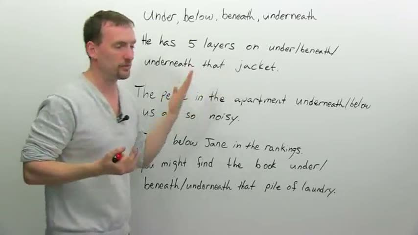
“The ball rolled under the car.” 00:53
“So, the word 'below' is written below the word 'under', because why? … We're on the same plane; we're looking at the whiteboard.” 03:36–03:43
对比词：under vs below vs beneath vs underneath（四词全组对比；另顺带 under 与 over 的前缀义 underweight/overweight 在板上成对出现，但本片主体是四个「下」词）
YouTube duMo2VoFAQY · engVid Adam — Prepositions in English: ABOVE, OVER, ON, ON TOP
来源：上方标题即平台 · 视频 ID · 讲者（研究 07 视频深挖笔记）
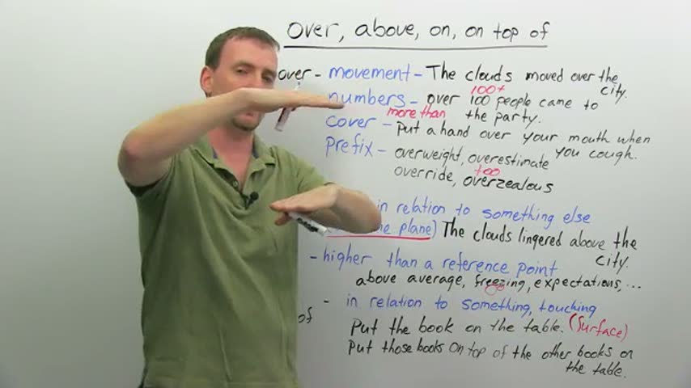
“So we always have that idea of movement when we're talking about 'over'.” 01:17
“The clouds lingered above the city.” 04:41
对比词：over vs above vs on vs on top of（四词全组对比；核心对子是 over 的「移动越过」对 above 的「同平面静止在上」，外加 on/on top of 的「接触」）
B站 BV1ud4y127d2 · 精讲03 below, under, beneath, underneath 的区别
来源：上方标题即平台 · 视频 ID · 讲者（研究 07 视频深挖笔记）
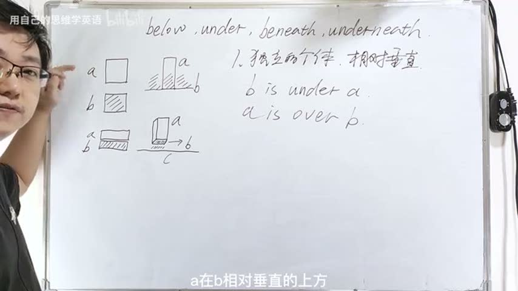
“He went under a brick arch.” 01:17–01:21
对比词：below vs under vs beneath vs underneath（四词全组对比；讲 under 的移动义时顺带对比 through——隧道/水管意象，见转写 [01:38–02:13]，机器转写）
B站 BV1V34y1s7H1 · On、Up、Over 和 Upon 有什么区别
来源：上方标题即平台 · 视频 ID · 讲者（研究 07 视频深挖笔记）
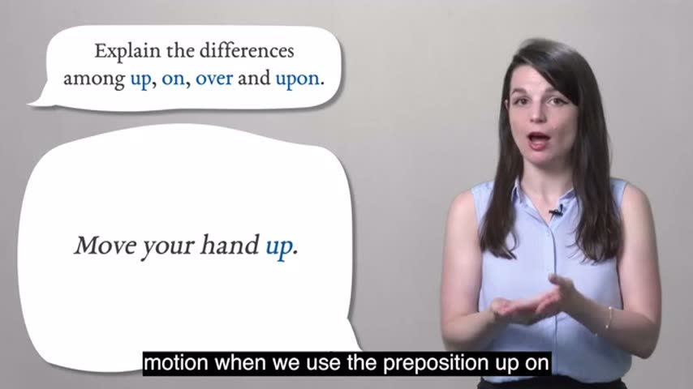
对比词：up vs on vs over vs upon（以气泡题面为准；实际取样画面里展开讲到的是 up 的运动义、on 的接触义与 upon 的正式/可互换，over 在候选帧与联系图里未见单独展开的画面）
← 返回 分镜板 · 路径 地标不变、只换路径（同一条小溪三种过法）。帧图为真实课堂视频关键帧（相对引用研究 07 shots 库），原话引自 videos_deep 并带时间戳。
YouTube Rai_E2EjOBw · Oxford Online English — Prepositions of Movement
来源：上方标题即平台 · 视频 ID · 讲者（研究 07 视频深挖笔记）
“'Along' means 'in a straight line' plus 'parallel to' something.” 01:45
“'Below' means that you stay underneath something. 'Under' – as a preposition of movement – means that you pass from one side of something to another” 03:15
对比词：under vs below（穿过 vs 一直待在下方）、over vs above（同上逻辑的反义对）、across vs through（终点在哪边明确 vs 进—出过程；沼泽例两可）、towards vs up to（方向 vs 到达终点）、along ≈ up / down（口语可互换，up 可兼「朝向说话人」、down 可兼「远离」）、into（进入／撞上）vs out of。
YouTube tip_TNSk6_k · Arnel's Everyday English — PREPOSITIONS OF MOVEMENT
来源：上方标题即平台 · 视频 ID · 讲者（研究 07 视频深挖笔记）
“From, the start. To, the end.” 01:30
“Past and pass are pronounced the same. But remember that one is a verb. I walked past a bakery. … I passed a bakery.” 05:40 起
对比词：from–to（起点–终点，亦延伸到时间 from 10 to 2）、away from vs toward、to（终点）vs toward/towards（方向；towards 多英式）、past（介词）vs pass/passed（动词，同音）、through（in the middle / 一端进另一端出）vs across（A 到 B 横切；三州例两可）、into vs out of、onto vs off（含口语 off of）、over（静态地点用法 dream catcher over my bed）vs under、around（绕外侧半圈式）vs around（整圈）。
YouTube j8tFojL0Gnw · MES — Prepositions of Movement
来源：上方标题即平台 · 视频 ID · 讲者（研究 07 视频深挖笔记）
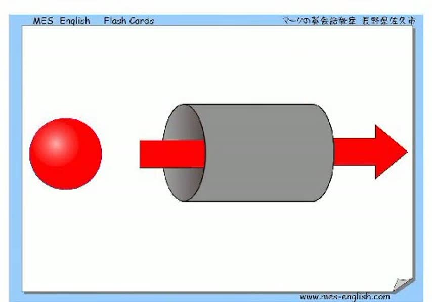
“up up the stairs / down down the stairs” 00:06
“into into the box / out of out of the box” 00:19
对比词：无讲解式对比；靠闪卡成对排列形成隐性对比：up vs down（同一组楼梯）、into vs out of（同一个箱子）、over vs under（同一个箱子）、toward vs away from（同一个箱子）、onto vs off of（同一个箱子）。（本片引文为自动字幕，全片只有词组朗读、无讲解句——videos_deep 原注）
Bilibili BV1Hg4y1K7rC · 英语 介词 along, across, around, through
来源：上方标题即平台 · 视频 ID · 讲者（研究 07 视频深挖笔记）
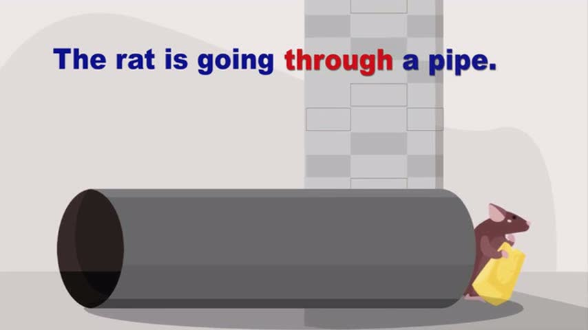
对比词：无显式对比段；四词平行并列（along 沿长物 / across 横过面 / around 绕 / through 穿内部）靠图式与例句分工区分，未见同框辨析页（采样帧范围内）。
← 返回 分镜板 · 位置 一个场景、多种说法——看说话人关注什么。帧图为真实课堂视频关键帧（相对引用研究 07 shots 库），原话引自 videos_deep 并带时间戳。
YouTube ylyQTl7__IQ · Prepositions Practice with Animals!（Scratch Garden）
来源：上方标题即平台 · 视频 ID · 讲者（研究 07 视频深挖笔记）
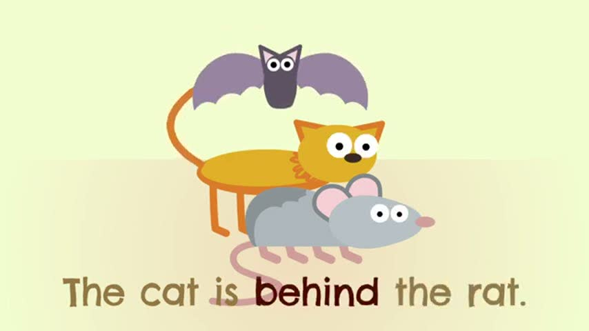
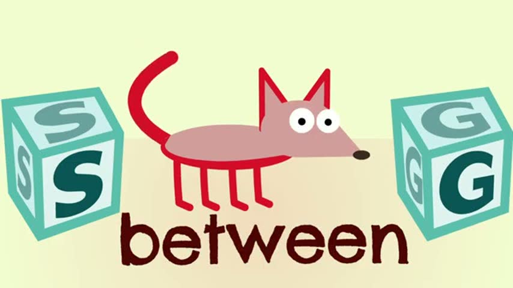
“now the bat is above the cat just like the cat is below the bat” 00:28
“and the rat is now in front of the cat just like the cat is behind the rat” 00:33
对比词：成对反义教学——above / below、in front of / behind、inside / outside、beside / between、over / under / against / on、far from / near / next to / among、into / out of / through / around、toward / past / up / down；本家族相关的有 behind、beside、between、among、near、inside、outside、against。
YouTube RnJJqfu6i8U · Between or Among?（engVid Emma）
来源：上方标题即平台 · 视频 ID · 讲者（研究 07 视频深挖笔记）
“we use "between" when we're talking about two of something” 00:56
“We use "among" when we're talking about groups, where the group is general” 05:06
对比词：between / among / amongst 三词辨析；核心对比轴是「两件 vs 三件以上」的简易规则 vs「整体群组（among）vs 一对一关系（between）」的修正规则，附带 difference→between、distribute→among 的搭配捷径与位置义（有确定路径用 between、无确定路径用 among）。
YouTube EKpTRGULqK4 · BESIDE or BESIDES?（Arnel's Everyday English）
来源：上方标题即平台 · 视频 ID · 讲者（研究 07 视频深挖笔记）
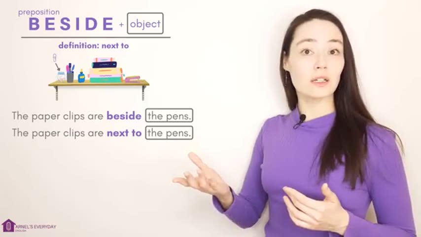
“The only difference in spelling and sound is that little s, but really, these two words mean completely different things.” 00:00
“The paper clips are beside the pens. The paper clips are next to the pens, same thing.” 00:29
对比词：主对比 beside / besides（只差一个 s）；副对比 beside vs next to（正式程度）、beside 的位置义 vs「与……相比」义、besides 的「除……之外（还）」vs「除……之外（别无）」vs 副词「此外/再说」。
YouTube pCoefMybtYc · Prepositions of place（BBC Georgie）
来源：上方标题即平台 · 视频 ID · 讲者（研究 07 视频深挖笔记）
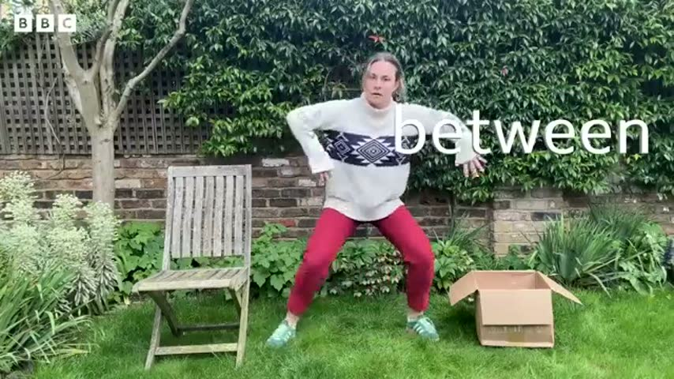
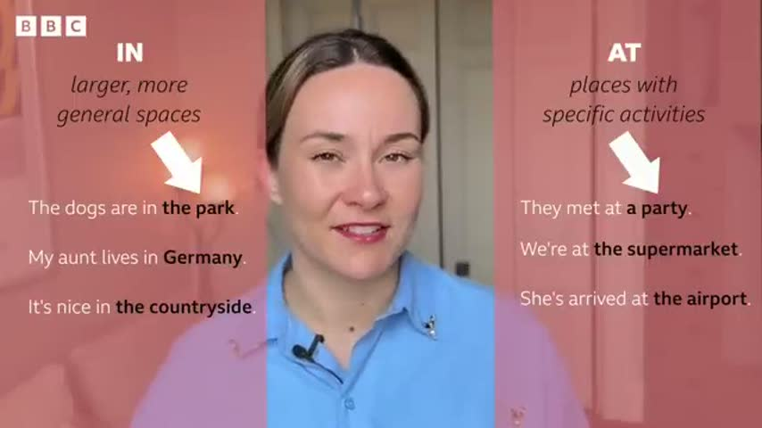
“I'm sitting next to the box.” 00:27
“And I'm behind the box.” 00:36
对比词：清晰义一组——next to / in front of / behind / under / above / between / on（用身体与纸箱、椅子实演）；易混组 in / at 对比（含 in the office vs at work、in the house vs at home 的无理据搭配，明说靠记）。
← 返回 分镜板 · 时间 钉子 vs 绳子：点上钉钉、段上量绳。帧图为真实课堂视频关键帧（相对引用研究 07 shots 库），原话引自 videos_deep 并带时间戳。
YouTube sSZcAh42qtI · BBC 6 Minute Grammar · for & since
来源：上方标题即平台 · 视频 ID · 讲者（研究 07 视频深挖笔记）
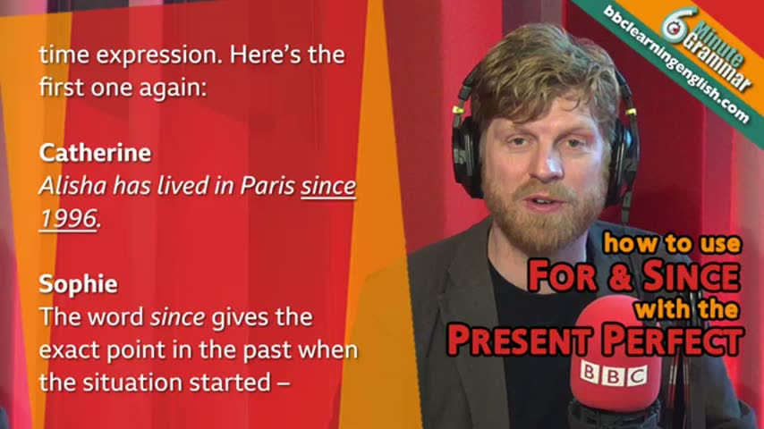
“I've worked at the BBC for eight years.” 00:39
“The word since gives the exact point in the past when the situation started.” 02:22
对比词：for（+时长）vs since（+起点）；同一句 for 短语在现在完成时（仍在职）vs 一般过去时（已离职）的含义对照。（本卡引文为机器转写，只引能确定的短句——videos_deep 原注）
YouTube n3JaBrsistk · engVid Adam · BY, UNTIL, BY THE TIME
来源：上方标题即平台 · 视频 ID · 讲者（研究 07 视频深挖笔记）
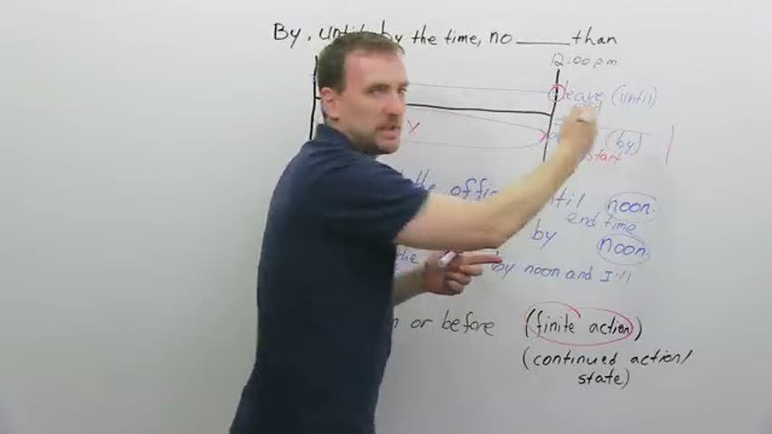
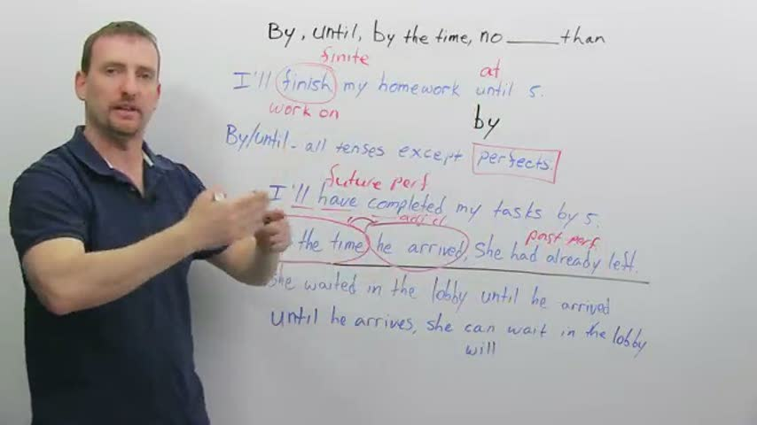
“I'll get to our little time map in a second” 01:00
“I'll be at the office by noon.” 01:03
对比词：by vs until（一次性动作 vs 持续到终点）；by the time + 从句；no later than（=by 的替换说法）vs no earlier than；动词侧 finish（finite）vs work on（可持续）决定选 by 还是 until。
YouTube fRrVkXG0-v4 · Ellii · Prepositions of Time
来源：上方标题即平台 · 视频 ID · 讲者（研究 07 视频深挖笔记）
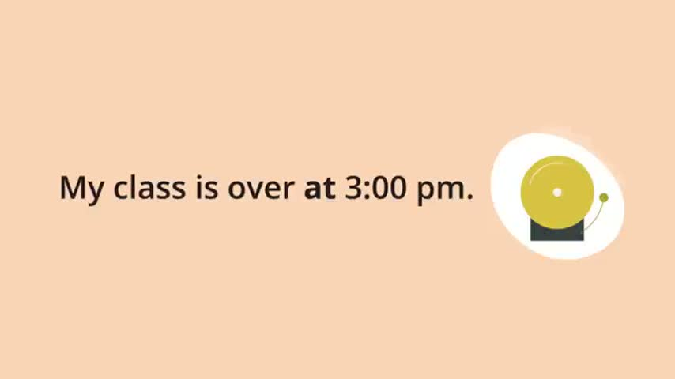
“Prepositions of time show when something happens.” 00:32
“We use the preposition at with clock times.” 01:06
对比词：at（钟点）vs on（星期/日期）vs in（月份/年份/季节/时段）——按时间粒度三分，无其他时间介词。
YouTube UYjd9AU9jU8 · BBC Georgie · Prepositions of time
来源：上方标题即平台 · 视频 ID · 讲者（研究 07 视频深挖笔记）
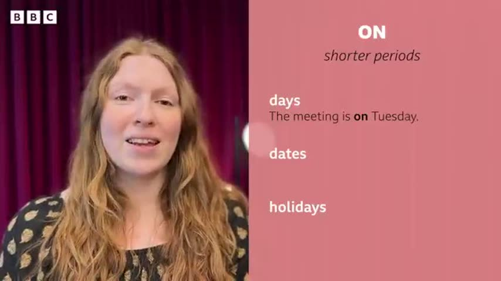
“Think of this one as the preposition of exact times (with exceptions).” 00:15
“'In' is for longer periods of time, like months, years, centuries, seasons.” 00:50
对比词：at（精确时刻）vs in（长时段）vs on（较短时段：天/日期）；night 例外（at night 而非 in）；音节口诀：多音节时段词用 in the，单音节用 at。
← 返回 分镜板 · 抽象 图画最少的一组：靠最小对比对翻转意思。帧图为真实课堂视频关键帧（相对引用研究 07 shots 库），原话引自 videos_deep 并带时间戳。
YouTube 7RYB8x5jKZw · Kevin 英文不難 · 不用死背，一次搞懂 TO 跟 FOR
来源：上方标题即平台 · 视频 ID · 讲者（研究 07 视频深挖笔记）
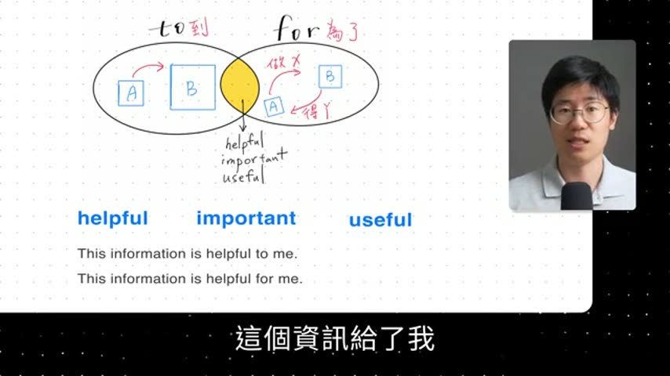
“to 的重點是從 A 到 B，它是一個方向性，有一個目標” 00:27
“for 的重點，它是做 X 得到 Y，它是一個目的，然後會有一個人受益” 00:42
对比词：to vs for（方向到达 vs 目的受益；helpful / important / useful 后两者可互换）。
YouTube 6nDEvB5eWDU · engVid Adam · Comparing with LIKE & AS
来源：上方标题即平台 · 视频 ID · 讲者（研究 07 视频深挖笔记）
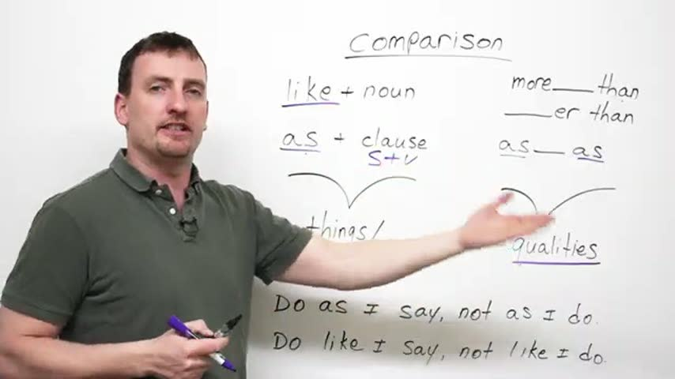
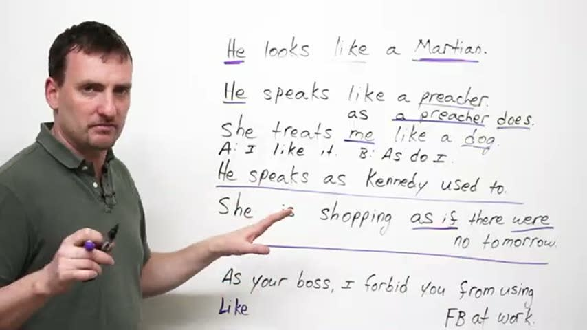
“'Like' is a preposition. It is always followed by a noun” 01:40
“'As' is a conjunction followed by a clause” 01:58
对比词：like vs as（另与 more…than / as…as 的性质比较划界；末段 as＝身份职能 vs like＝相似）。
YouTube gix9O_sjEzo · engVid Emma · "BY" or "WITH"?
来源：上方标题即平台 · 视频 ID · 讲者（研究 07 视频深挖笔记）
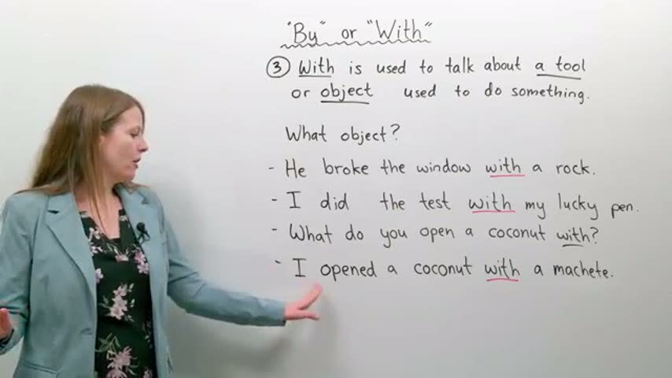
“Arrive by 4pm … you want to arrive before or at 4pm, not after” 00:49
“He broke the window with a rock” 11:22
对比词：by vs with（by＝时间截止/施动者/方式渠道；with＝伴随/持有特征/具体工具）。
YouTube 50AMlIIsxI8 · English with Greg · AS v LIKE
来源：上方标题即平台 · 视频 ID · 讲者（研究 07 视频深挖笔记）
“we use like when something is similar to another thing, not the same but similar” 01:38
“we use as when we are describing the function of something” 01:46
（本片引文为自动字幕，可能有个别识别误差——videos_deep 原注）
对比词：as vs like（like＝相似但不是；as＝职能/身份，本人就是）。
← 返回动词专区
动词 A–Z 索引（458 词条）
字母序只作检索索引；学变化请走形式家族。点任意词进它的五形式衣橱。
← 返回动词专区
🎡 动词 × 小词转盘
做法学自 Cambridge 的 Phrasal Verbs Machine（调研实测）。72 格逐格查过学习词典：50 格有据（156 条，逐条带词典例句与出处），22 格查无（格内注明所查词典），不编义。
📖 查词典（呈现） 🔮 先推后验（组合推义 · v4 新）
全盘一览（点格子直达）
🗂 小词原型图总览（一词一张核心图）
← 返回动词专区
🎩 分词的三顶帽子
衣橱里每个动词都摆着过去分词（V3），但它到底干什么活？三份工作：①完成 ②被动 ③结果状态。形式全部出自词库 + OALD 词形表核实（与衣橱同源）。诚实登记： 被动语态在课程标准里是初中 话题；本产品按用户裁定「不分学段、用先修关系代替学段」——本页的先修是五形式衣橱与时间机器，故收在这里，不冒充小学内容。练习为机械操练（页内标注）；病句只用逐字病例（verb_error_cases 登记）。
🎩 第一顶 · 完成帽：have + V3（事情在参照点之前，还连着参照点）
🎩 第二顶 · 被动帽：be + V3（宾语升主语，动作的承受者站到前面）
🎩 第三顶 · 结果帽：V3 当形容词（不写动作，写「现在怎么样了」）
← 返回动词专区
🏃 身体任务卡（TPR）
任务句全部出自模型例句的身体化改写（只替换主语/场景，不新编句子）。听令做动作，动作做对了，词就记住了一半。
🎬 叙述模式：拖动小人，机器旁白
点一个场景，小人走过去做动作；选好时态，机器用时间机器同一套词形引擎旁白这句话。
时间 过去 现在 将来 体 一般 进行 完成 完成进行
← 返回动词专区
⏱️ 时态实验室
先摆场景，再拼形式：摄影机站在哪里、怎么看、是什么动词 —— 三个决定做完，时态自己长出来。
🎬 场景机核心 拖事件、拖摄影机、换看法，机器把动词一块一块拼出来，并告诉你落在哪一格。
📖 故事播放器7 句 一个上学路上的小故事：有的句子推着时钟走，有的让时钟冻住，还有一句要跳回过去。
🔑 现在完成时实验室6 个实验 时间窗口、So now…?、去过几次、been/gone、since/for、just/already/yet——全都可以动手。
🪤 状语陷阱 + 无提示模式2 关 先靠时间词答题，再把时间词全部拿走——这次只能靠动词自己。还有一个真实病句等你拆。
🎡 未来转盘4 种未来 谈未来不是只有 will：临时决定、早有计划、已经约好、时刻表——看情景选说法。
🗺️ 总览地图12 格 课本上的 12 格表在这里当「地图」：颜色越深越常用。点任何一格，把它装进场景机。
🧭 概念图1 张图 整个时态系统就一条路：摄影机 → 看法 → 动词种类 → 拼积木。点图上的每一步，直接跳过去动手。
🚪 动词种类闸门4 类动词 为什么 know 不能钻进去说 *is knowing？动词分四类，有的类会把某些看法「闸」住。
给老师/家长： 本原型按 2026-11-01 时态教学调研的裁决建造：3×4 网格降为地图，中心改为「场景机」——三个可操纵的决定（参照点 R / 视角 / 动词种类）先行，形式最后拼出。各区末尾都标注了模型出处。
数据口径： 动词形式与仓库 model/wordbank.json + model/verb_forms_completion.json 一致（OALD 核实）；病句病例逐字摘自 model/verb_error_cases.json（VEC-007）。时态实验室原型 v1。
← 回目录
🎬 场景机：先摆场景，形式自己跟上
三步：① 选一个动词 （注意它是哪一类）→ ② 把故事摄影机拖到你要讲的时间 （事件条会跟着摄影机走；选「回头看」时，事件会退到摄影机身后）→ ③ 选一个看法 。动词积木会按口诀自己拼好。
选动词（按种类分组）：
当前动词：
过去
现在
将来
📷故事摄影机
⭐结果在这儿
▲
🎨 paint
把摄影机放到：
⏪ 过去
🧍 现在（和我站在一起）
⏩ 将来
（也可以直接拖 📷 和事件条）
选看法（摄影机怎么看这件事）： 📷 全景整件事看完：头、中、尾都在画面里
🔍 钻进去只看过程：头和尾都在画面外
🔙 回头看事情在身后，结果拿在手里
🔙🔍 回头看·还在继续从过去一路做到摄影机跟前
—
— 🔊 读一读
🧱 拼积木口诀 （Reasoning School 的配方）：第一个帮手 身上。进行 = be + 动词-ing 。完成 = have + V3 （动词的第三形）。will → have （原形）→ been （be 的 V3）→ painting （-ing）。
我们向谁学了什么： 三个决定来自 Reichenbach 的 E–R–S 模型（事件 / 参照点 / 说话时刻）和 Comrie（1976）「体 = 观看事件内部时间的方式」，摄影机变焦是 Smith 的相机隐喻；拼积木配方来自 Reasoning School 的 Tense Time Machine（2026-11-02 实测）。成人术语：故事摄影机 = 参照点 R；我·现在 = 说话时刻 S；事件条 = 事件 E。
← 回目录
📖 故事播放器：Tom 的上学路
一句一句往下讲。注意看时钟：推进故事 的句子会让时钟往前走；背景 句子会把时钟冻住（我们钻进那一刻里面看）；闪回 句子会让摄影机往回跳。每句先别看答案——点「先说理由」，说对理由，形式的名字自然就出来了。
🕖 7:00
早些时候
故事现在
还没讲到
📷故事摄影机
摄影机站在哪一刻，哪一刻就是故事的「现在」
点「讲下一句」开始。
💬 先说理由
▶ 讲下一句
↺ 重讲
我们向谁学了什么： 前景推进时钟、背景冻结时钟来自 Bardovi-Harlig 的语篇假设（Discourse Hypothesis）：故事的主线用一般过去时往前推，背景用过去进行时铺陈，闪回用过去完成时；故事结构参照 Reasoning School F3.5 的 story 模型。
← 回目录
🔑 现在完成时实验室
现在完成时最容易被误会成「做完了」。其实它说的是：摄影机站在现在，回头看过去的事，结果还留在现在 。下面六个实验，一个一个动手验。
实验 1 · 时间窗口：窗口还开着吗？
窗口的右沿永远钉在「现在」。窗口还开着（今天、本周、这一年）→ 可以用完成时；窗口已经关门（去年、2023 年）→ 只能讲故事，用一般过去时。
去年 last year 🔒关门
这一年里 in the last year 🪟开着
今天 today 🪟开着
本周 this week 🪟开着
2023 年 in 2023 🔒关门
—
实验 2 · So now…? 先查现在，再说时态
Murphy 的办法：别先想时态，先问一句 So now…? （那么现在呢？）
Tom 的钥匙丢了。—— So now… 他现在有钥匙吗？
没有，他还进不了门 😟
有啦，他已经找到了 😀
实验 3 · 去过几次？经验计数器
在「我的一生」这个大窗口里，去过几次都数得出来；可是一旦说出具体哪一天 ，这件事就掉出完成时窗口，回到故事线。
I have never been to Beijing.
➕ 去了一次
↺ 归零
📅 加上具体日期：2024 年 5 月 3 日
窗口里只数次数，不说哪一天。
实验 4 · been 还是 gone？看人现在在哪
他去北京了。Where is he now? （他现在在哪？）—— 回来了是 been，还在那儿是 gone。
🏠 家 🚶 — — — ✈️ — — — 🏯 北京
他还在北京
他已经回来了 🎁
He has gone to Beijing. / He has been to Beijing. —— 选一个看看。
实验 5 · since 是图钉，for 是橡皮筋
先点一个工具，再点一个时间：图钉只能钉在一个点 上（since），橡皮筋只能拉成一段时间 （for）。
📌 since
🎗️ for
2023 年（点）
星期一（点）
五岁时（点）
两年（一段）
一个小时（一段）
I have known Lily ____ .
实验 6 · just / already / yet：站在预想线上
这三个词不是「标志词」，是位置：just = 紧贴着现在之前；already = 比预想的早；yet = 预想到现在该发生了、却还没发生（多用于问句和否定句）。点一点试试：
🍚 「我刚刚吃完。」→ just
⚡ 「这么快！你已经做完了？」→ already
⌛ 「你还没吃吗？」→ yet
我们向谁学了什么： 实验 2、4 来自 Murphy《Grammar in Use》（结果在现在的照片式检验、been = 回来了 / gone = 还在那儿）；实验 1、3 的时间窗口来自 Seonaid《Perfect English Grammar》的 unfinished / finished 划分与 EnglishPage 的完成时图示；实验 5 是把 since = 点、for = 段做成两种不同形状的工具。
← 回目录
🪤 状语陷阱 + 无提示模式
很多同学靠「标志词」答题：看到 yesterday 就选过去时。标志词是拐杖——第一关 可以拄着走；第二关 把拐杖拿走，只能靠场景和动词自己判断。
第一关 · 有时间词帮忙
第二关 · 无提示模式（时间词被拿走了）
提示换成了场景线索：结果还在现在吗？是在讲故事的顺序吗？是钻进那一刻看吗？
🪤 陷阱演示：yesterday 会把摄影机钉走
有个同学写了这句病句。点一下，把 yesterday 放进句子——看摄影机发生什么事：
I have seen him ＿＿＿＿ .
把 yesterday 放进句子
🔧 这样改
🏥 病句医院 · 真实病例（逐字摘自公开语料研究）： I have seen him yesterday. 正确：I saw him yesterday.
为什么有这一关： Bardovi-Harlig 的研究指出，学习者先靠语境、再靠时间词、最后才靠动词形式本身；语料研究（CLEC 等）也显示中国学生高度依赖时间状语。练习必须有计划地撤掉时间词，动词形式才会变成真正的线索。
← 回目录
🎡 未来转盘：谈未来有四种说法
英语谈未来没有唯一的形式，是看情景选说法 。先点一个情景，再选你觉得对的说法：
⚠️ 小陷阱：when 后面不用 will
When Tom ____ home, he will do his homework.（当 Tom 到家时，他会做作业。）
gets
will get
我们向谁学了什么： 未来四分法来自 Reasoning School F3.6「英语没有单一的将来形式，它是借来的」与 Woodward English 的 will vs going to 意义对比；when/if 时间状语从句不用 will 同为 Reasoning F3.6 的明确提醒。将来的 will 本质上是情态（把握/意愿），不是和过去式平行的「时态」——成人层注记，儿童层只学选情景。
← 回目录
🗺️ 总览地图：12 格是地图，不是入口
课本的 12 格表还留着——查一查、对一对很有用。但它颜色有深有浅：越深越常用 ，右下角那格（将来完成进行时）在真实英语里极少出现。读法也有讲究：除了竖着按时间读，还要横着按看法读 ——同一行，是同一种看法走过三个时间。点任何一格，把它装进场景机里摆一摆。
📌 口径提醒：中国教材常数 16 种时态 （多算了「过去将来」的一行，主要用于转述别人说过的话）。这张图是 12 格口径，读法一致：先定摄影机（行），再定看法（列）。
我们向谁学了什么： 把时与体拆开、一次只合一个维度的教法有直接对照证据：Machová et al. (2026, Australian Journal of Applied Linguistics）发现组合式教学（约 5 个核心概念）比传统 12 时态模型更利初学者；横读（按体成行）来自 Lingolia 的交互时间线。
← 回目录
🧭 概念图：整个系统就一条路
遇到任何一句英语，先走这四步。点任何一步，直接跳到对应的操作台——这张图不是挂在墙上背的，是拿来用的。
① 摄影机在哪？ 故事讲到哪一刻，摄影机就站到哪一刻（现在 / 过去的某个点 / 将来）
→
② 怎么看？ 全景看完 / 钻进去看过程 / 回头看结果
→
③ 是什么动词？ 状态 / 活动 / 终点事件 / 瞬间事件——有的看法会被闸住
→
④ 拼积木 时间放在第一个帮手身上；进行 +be -ing；完成 +have V3
举例：The train had left. —— ① 摄影机站在「我们到达车站」那一刻（过去）；② 回头看：火车开走在这之前；③ leave 是瞬间事件；④ have 用过去式 had + left（V3）。走完四步，形式自己出来。
我们向谁学了什么： 概念图 +「先说理由」的用法来自概念型教学（Concept-Based Instruction, Gal'perin → Negueruela 的 SCOBA 传统）；Fazilatfar et al. (2017）对 14 岁学习者的对照研究显示，先用概念图分别定向时、动词种类、体，再组合，效果显著优于传统教法。图必须被「用」和「讲」，只贴墙背诵无效——同一研究传统反复指出这一点。
← 回目录
🚪 动词种类闸门：有的看法会被闸住
动词分四类。学每个形式时，先用它最合拍的那一类 练（进行时先配活动动词，过去时先配瞬间/终点动词）——这是二语习得研究里很稳的规律（体假设）。选一个动词、一个看法，试试闸门：
📷 全景
🔍 钻进去
🔙 回头看
🔙🔍 回头看·还在继续
先选一个动词。
给老师/家长（诚实注脚）： 「状态动词不用进行时」是给初学者的默认规则，不是绝对禁令 ：母语者偶尔也说 I'm loving it、I'm being silly（表示暂时的、带感情的行为），学习者语料研究（IRAL 2021）显示母语者语料中状态动词进行时约占 8.36%。初中阶段应打开这个口子；小学阶段先立默认。闸门逻辑出自 Aspect Hypothesis（Andersen & Shirai）：形式先长在合拍的动词类上，再向外扩展。
← 回首页
✍️ 表达写作区
E / W / NE 共 59 条 · 全部入模：点任意一条进它的规律页。标「教师层」的条目（模型登记为教师/设计层）在本页末尾的成人组里，页面按成人层呈现。招牌件：整块取句（E-04）、范文先行（W-05）、语义韵选词（V-43，词汇区）。
表达与语用 · A 言语行为与会话机制
E-01 说话就是做事：每句话在传递信息之外，都在执行一个动作——请求、道歉、承诺、感谢、邀请 有练习 · 病例已查无
E-02 很多话不能按字面听：「你能把盐递给我吗」问的不是能力，是请求——意思要过「他想让我做什么」这一关 有病例 · 有练习
E-03 对话能进行下去，靠双方默认「我还在配合你」：答非所问往往不是乱答，是在用绕弯的方式回答 有练习 · 病例已查无
E-04 日常句子是整块从记忆里取出来的，不是逐词现拼的：问候、点餐、道别靠的是「现成块」 有练习 · 病例已查无
表达与语用 · B 得体与礼貌
E-05 语法错了，人家笑你「说得不好」；场合错了，人家觉得你「人不好」——语用失误比语法错误更伤人，而且更难被察觉 有练习 · 病例已查无
E-07 请求、打扰、拒绝越「压人」，英语越要加缓冲：礼貌是替对方的「面子」留余地，客气程度随关系远近和事的大小滑动 有练习 · 病例已查无
E-08 一句回应「对不对」，不看句子本身，看三件事：谁在说、对谁说、上一句说了什么 有练习 · 病例已查无
E-09 汉语的客套会「跟着人一起出国」：谦虚、称呼、拒绝的方式直译成英语，常会变成失误 有病例 · 有练习
表达与语用 · C 能力构成与教学
E-10 「会说英语」是四种本事合起来：语法只占四分之一，其余是得体、成篇、和卡壳时的自救 有练习 · 病例已查无
E-11 卡壳不是失败，是交际的一部分：会换个说法、打个比方、问一句「怎么说」，本身就是本事 有练习 · 病例已查无
E-13 对话是两个人轮流搭的：一问一答是绑在一起的「对子」，上一句长什么样，就预定了下一句的活 有练习 · 病例已查无
E-15 说错了能自己改回来，是对话自带的功能：交际教学不该一出错就打断，先让人把「自我修复」走完 有练习 · 病例已查无
写作 · A 读者与过程
W-01 写作和说话最大的不同：读者不在你面前，看不见你脑子里的画——每个信息都要用文字亲手交到读者眼前 有练习 · 病例已查无
W-02 写好作文不是一口气从头写到尾：想（计划）、写（落笔）、改（回看）三件事是来回切换的，不是一条直线 有练习 · 病例已查无
W-03 孩子写作文「想到什么写什么」不是偷懒，是发展阶段：从「知识讲述」长到「边写边想清楚」需要很多年 有练习 · 病例已查无
W-04 修改分两层，顺序不能反：先改「意思对不对、读者懂不懂」，最后才改「字词句对不对」 有练习 · 病例已查无
写作 · B 支架、模仿与产出
W-05 最省力的写作进步法是「接着写」：先读一段好文章，再顺着它的势往下写——理解会把产出「拉平」到更高水平 有练习 · 病例已查无
W-06 内容要创造，语言要模仿：新意放在想什么上，句子的说法先借现成的——反过来就会写出「想法平庸、句子奇葩」 有练习 · 病例已查无
W-07 写不出来恰恰是最有用的时刻：只有动笔输出，才知道自己缺哪一块——「注意到缺口」是进步的扳机 有练习 · 病例已查无
W-10 支架的意义在于「用完要撤」：句子框架、范文、师生共构都是临时拐杖，撤掉还能写，才算学会 有练习 · 病例已查无
写作 · C 证据清单与诚实边界
W-12 字写不顺、词拼不对，会把脑子「堵住」：基本功不自动化，就没有余力想内容 有练习 · 病例已查无
W-13 句子是攒出来的：把两个短句合成一个长句的练习（句子合并），是实测能提升写作质量的少数单项训练 有练习 · 病例已查无
W-14 衔接词是给读者的路标，不是作文的装饰品：路标必须对准真实的逻辑关系，贴错地方比没有更糟 有病例 · 有练习
教师/设计层（E / W · 成人）
E-06 语用失误分两种，治法完全不同：一种是「现成说法用错了」，一种是「不懂这个场合的规矩」 教师层
E-12 得体不会自己长出来：语法学得再好的人也会说错场合的话——语用必须专门教、把规矩讲在明处 教师层
E-14 没注意到的东西学不会：语用规矩藏在语境中，不把孩子的注意力引过去，他听一百遍也可能没看见 教师层
W-08 对小学生怎么写才有效，有官方级的证据清单：天天写、教过程、练基本功、建写作圈——四件事按证据强度排好了队 教师层
W-09 年龄再大一点，什么写作教学最有效已经有元分析答案：教「写作策略」排第一，范文研读、句子合并、同伴合作都在有效清单上 教师层
W-11 先把课上成「围着写作转」：先给学生一个写不好的真实任务，让他撞见缺口，再给范文和句型——顺序反过来，学的就用不上 教师层
W-15 任何「套这个公式保满分」的承诺都没有研究支持：能涨分的只有策略、练习量与反馈的组合——这是写作域的诚实底线 教师层
续 下一页：母语国家专家 NE 目录 → 目录
← 回表达写作区（E / W）
✍️ 表达写作区 · 母语国家专家
NE 29 条 · 全部入模；其中模型登记为教师/设计层的 17 条在末尾成人组，页面按成人层呈现。
NE · 地道与流利
NE-01 合语法不等于地道：母语者只说「惯例会说的那一种」 有练习 · 病例已查无
NE-02 说话快得不像现编的：大脑里整存着一座「句干仓库」 有练习 · 病例已查无
NE-03 学英语的起步单位是整块，不是单词加规则 有练习 · 病例已查无
NE · 学习者词典
NE-07 只用三千个已知词，就能解释一切新词 有练习 · 病例已查无
NE-08 词典真正的灵魂是例句和句型：动词是句子的枢纽 有病例 · 有练习
NE · 语调与口音
NE-10 说话时每时每刻在做三个决定：语调的「三 T」 有练习 · 病例已查无
NE-11 口音是地图不是污点：差异有系统，身份在其中 有练习 · 病例已查无
NE · 发音是身体的事
NE-12 发音先练肌肉：找到嘴里的四个「按钮」 有练习 · 病例已查无
NE-13 音标表不是考卷，是一张可以上手玩的「发音地图」 有练习 · 病例已查无
NE-14 目标是被听懂，不是扮成母语者：可懂度优先于口音 有病例 · 有练习
NE · Corbett：Talk for Writing
NE-27 Talk for Writing 三段：模仿 → 创新 → 发明——写作教学的顺序是「先有文本存量，再有个人创作」 有练习 · 病例已查无
NE-28 模仿段的发动机：故事地图 + 全身动作——把文本变成可以指着演的图，记忆才托得住语言 有练习 · 病例已查无
教师/设计层（NE · 成人）
NE-04 没有哪条规则被所有人永远遵守：「零容忍」是规定主义神话 教师层
NE-05 好些「语法铁律」是两三百年前照着拉丁语发明的 教师层
NE-06 英语已经不归母语者管了：三圈世界与「说给全世界听」的目标 教师层
NE-09 先有情景，再有句型：Hornby 的情景法遗产 教师层
NE-15 规则先过证据关：被几代人奉为圭臬的手册也会认错被动语态 教师层
NE-16 语法是「选择的仓库」：学语法是为了写作时多一条可选的路，不是为了少犯一个错 教师层
NE-17 语法要嵌在写作里教才有效：Exeter 随机对照试验给出的是「有条件的有效」 教师层
NE-18 语类是「分阶段、奔着社会目的去的做事方式」：故事、报告、说明各有各的台阶 教师层
NE-19 教学循环：先全班拆一篇 → 再全班合写一篇 → 最后才轮到你自己写（Teaching-Learning Cycle） 教师层
NE-20 Reading to Learn：把支架加厚到句子层——让全班读同一篇难文本，而不是给差生降难度 教师层
NE-21 Derewianka：给小学教师的语法书按「语言的四种活儿」组织，不按词类清单组织 教师层
NE-22 印刷概念（Concepts About Print）：开始读之前，孩子先要搞懂「书是怎么运作的」 教师层
NE-23 Reading Recovery：最早、最贵的一对一干预——短期效应有据，长期效果正被新证据改写 教师层
NE-24 谈话有三型：吵架型、附和型、探索型——只有探索型谈话里，思考是公开进行的 教师层
NE-25 Thinking Together：先全班约法（ground rules），再放小组讨论——规矩是谈出来的，不是贴出来的 教师层
NE-26 Alexander 的对话式教学五原则：集体、互惠、支持、累积、目的——缺了「累积」，热闹不是对话 教师层
NE-29 支架是设计出来的，不是随口帮一句：语言支架与学习支架要同时搭在内容课里 教师层
← 回拼读区
S-36 · 拼读区 · 旗舰单元
/iː/ 有两条最大的路：see 的 ee 和 eat 的 ea
再加 me 的 e、field 的 ie、key 的 ey、machine 的 i、these 的 e-e；ceiling 的 ei 排在 c 后面时也读 /iː/。
1 病句医院2 动画讲机制3 一屏一总结4 分级例5 检索练习6 病因归档 · 复习队列
1
病句医院 · 今天的门诊
📖 I read /riːd/ a book yesterday. 诊断：read 是过去式的时候不读长音——它的过去式读 /red/。ea 不总是 /iː/，这是 ea 的另一副面孔（全谱在变脸榜 S-42）。
📖 ceiling 读成 /ˈseɪlɪŋ/ 诊断：ei 在这里排在 c 后面，该读 /iː/（/ˈsiːlɪŋ/）。ei 的读法要看它站在谁后面。
📖 machine 读成 /məˈʃɪn/ 诊断：machine 是法语层来的词，这里的 i 读 /iː/（/məˈʃiːn/），不是短音 /ɪ/。
2
机制屏 · 一屏一总结
同一个 /iː/，为什么有两条大路？因为中古英语本来就有两个长 e，大推移里先后升到 /iː/ 合成一个音，拼写却各留各的——ee 和 ea 是「合并的化石」，不是例外。
亲戚网：S-35 /eɪ/ 菜单 S-42 变脸榜（ea 的全谱） SR-07 i before e 的成色 S-15 元音大推移
成人层 · 机制 ：ee/ea 双主力的成因是中古英语双长 e（/eː/ 与 /ɛː/）在元音大推移中合并，拼写保留双轨。出处 ：Letters and Sounds Phase 3（ea、ee）与 Phase 5（/iː/ 替代拼法）表，课程文件级；双长 e 合并见 Baugh & Cable《A History of the English Language》语音章，书目级；例词读音按剑桥词典核对，词典级。边界 ：ea 另有 /e/（head、bread、read 过去式）与 /eɪ/（great 等三词）两面，见 S-42；ie 也有 /aɪ/（pie）与 /e/（friend）面；ey 有 /eɪ/ 面（见 S-35）。分歧 ：部分美国拼读体系把 ea 列为「次要」、ee 为唯一主力，与英式双主力排法不同——是教学排序之差，非事实之争。
3
分级例
第一级 · 认主力 see 看见 · tree 树 · green 绿色 · eat 吃 · sea 大海 · me 我 · he 他
第二级 · 认小路 field 田野（ie）· key 钥匙（ey）· machine 机器（i，法语层）· ceiling 天花板（ei 在 c 后）· people 人们（eo 孤例）
对照一对 read 现在时读 /riːd/，过去式读 /red/——同一个词，ea 换了面孔，看时间再定音。
4
检索练习（答错只给回机制的提示）
Q1. sea 里的 ea 读哪个音？
/iː/——和 eat 一队
/e/——和 head 一队
/eɪ/——和 great 一队
提示：回机制屏看菜单——ea 的「主场」是哪一行？head 和 great 是 ea 出门串门的面孔，不是主场。
对了。ea 的主场是 /iː/；/e/ 和 /eɪ/ 是它在变脸榜上的其他面孔。
Q2. 下面哪个词的 ei 读 /iː/？
vein（血管）
ceiling（天花板）
eight（八）
提示：回菜单最后一行——ei 在什么时候读 /iː/？看它站在谁后面。
对了。ei 排在 c 后面读 /iː/；vein、eight 的 ei/ eigh 读 /eɪ/，那是 S-35 的菜单。
Q3. 判断：people 里的 eo，和 see 里的 ee 一样是 /iː/ 的主力拼法。
对
不对，eo 只有 people 这一组孤例
提示：回菜单看 eo 坐在哪一班——「主力」还是单独的一行？
对了。eo 是孤组，整组单记；主力只有 ee、ea 和词尾 e。
5
完成 · 病因归档
🏥 本单元错题按病因归档：病因「ea / ei 的面孔没分清」 ——不是记性问题，是没看清组合站在谁后面、是哪一队。
📥 已进入复习队列（间隔复习示意）：
明天 · ea 主场速认 3 天后 · ei 在 c 后 1 周后 · 变脸榜 ea 全谱
成人层 · 误解探针（入模规格） ：预判孩子会把「ei 读 /iː/」记成无条件规则——探针词 seize（不在 c 后也读 /iː/）与 vein（读 /eɪ/）各一，答错即回本屏菜单的 ei 行。
← 回拼读区
SR-01 · 拼读区 · 定律区旗舰
词尾那个不出声的 e，是个大忙人：看见它，先问它在干哪份工
它能让元音读长、能让 c/g 变软、能扶住词尾、能给 th 定清浊、能给 -le 凑音节——传统原表一共清点九项职责。
1 病句医院2 动画讲机制3 一屏一总结4 分级例5 检索练习6 病因归档 · 复习队列
1
病句医院 · 今天的门诊
✏️ giv（give 少了 e） 诊断：这个 e 不是装饰——英语本土词不让 v 当最后一个字母，e 是站在词尾的「护栏」。
✏️ litl（little 少了 e） 诊断：每个音节都要有一个书写元音，-le 音节全靠这个 e 凑齐，少了它音节就不成立。
✏️ come 读成 /kəʊm/（按 tape 的规则硬套） 诊断：come 的 e 是「无职之 e」——历史上有过理由、今天已不可考。不是每个词尾 e 都管长音（这一职的实测命中率只有 63%，见成人层）。
2
机制屏 · 一屏一总结（九职全表）
五职里只有第①职改变元音读音，其余都是「拼写合法性」标记——e 不发声，但它在替拼写系统交代位置、词类与音节结构。
成人层 · 出处 ：Denise Eide《Uncovering the Logic of English》(2012）对 silent final e 的理由清点；本轮未打开原书，经 Pride Reading Program 7 职版、Literacy Learn 注明取材 Eide 的 9 职版、OG 系教师材料三种独立转述逐项互证——接触等级：多源转述互证级。支撑 ：Clymer (1963）实测「词尾 e 使首元音读长」一条的命中率只有 63%，故第①职必须配合变脸名单使用；Hickey 规则卡称词尾 v 规则「唯一例外是 spiv（英式俚语）」。边界 ：第③职的规范表述是 I、U、V、J 四个字母都不收尾（i 不收尾故词尾写 y/ie，见 SR-05;j 不收尾故词尾 /dʒ/ 写 ge/dge，见 SR-03)；且只对本土核心词近乎无例外——menu、flu、improv 等外来词与截短词可破。第④职适用面很小，仅限 bath/bathe 等同源词对。分歧 ：这组「职责」是教学用的事后归纳，不是历时成因清单（词尾 e 大面积来自中古屈折词尾脱落与印刷定型）；教学界取功能说，正字法研究（如 Venezky）更愿描述为拼写格局——两说并存，本条按教学可用性取功能说。
3
分级例
第一级 · 长音化与软化 tap→tape（录音带）· pin→pine（松树）· ice（冰，c 变软）· cage（笼子，g 变软）
第二级 · 护栏、清浊与凑音节 have / give（护栏）· blue / true（护栏）· bath 洗澡水 → bathe 洗澡（th 定浊）· little / table（-le 凑音节）
对照一组 come、some、done 的 e 哪份工都不干——看见词尾 e 先问工种，别默认它管长音。
4
检索练习（答错只给回机制的提示）
Q1. tape 里的 e 在干哪份工？
第①职：让前面的 a 读长音
第③职：给词尾当护栏
第⑤职：给 -le 凑音节
提示：回九职表——tape 里 e 前面站的是谁？先看 tap→tape 声音变了没有。
对了。tap→tape，a 由短变长，这是长音化。
Q2. have 里的 e 为什么不能去掉？
因为它让 a 读长音 /eɪ/
因为英语本土词不让 v 收尾，e 是护栏
因为 have 是复数
提示：先把 have 读出来——a 读的是长音吗？再回九职表找「扶住词尾」是哪一职。
对了。have 的 a 并没读长音；这个 e 干的是第③职护栏。
Q3. bathe（洗澡，动词）里的 e 在干哪份工？
让 a 读长音
凑够三个字母
给 th 定浊音：带 e 的是动词，读 /ð/
提示：回九职表第④职——bath 和 bathe 差在哪儿？一个是名词，一个是动词。
对了。bath /bɑːθ/ 是名词（清），bathe /beɪð/ 是动词（浊），e 是清浊标记。
5
完成 · 病因归档
🏥 本单元错题按病因归档：病因「词尾 e 的工种认错」 ——把九份工混成一份（只记长音化），或把 e 当装饰随手丢掉。
📥 已进入复习队列（间隔复习示意）：
明天 · 五职认岗 3 天后 · bath/bathe 清浊对 1 周后 · 无职之 e 名单
成人层 · 误解探针（入模规格） ：预判孩子把第①职当成词尾 e 的唯一工作——探针用 have（护栏）与 come（无职）各一，答错即回九职表对应行。
← 回拼读区
S-42 · 拼读区 · 旗舰单元
变脸榜：ough 是变脸大王——读法越多越不可猜，越要整组记
本榜是 S-06「变脸名单」的正式版：成员、排序与每组的全谱词例都在这里。
1 病句医院2 动画讲机制3 一屏一总结4 分级例5 检索练习6 病因归档 · 复习队列
1
病句医院 · 今天的门诊
📖 book 读成 /buːk/（照 moon 的读法套） 诊断：oo 有三副嗓子。book 和 spook 同是 -ook 却分读 /ʊ/ 与 /uː/——同环境对峙，无规则可分，只能整组记。
📖 head 读成 /hiːd/（照 heat 的读法套） 诊断：head 与 heat 只差一个字母，ea 却分读 /e/ 与 /iː/——ea 的四读之间位置、重音全同，线索最少，这正是它排第二的原因。
📖 though 和 through 用同一个读法 诊断：ough 一个组合八到十读，though 读 /əʊ/、through 读 /uː/，靠一条规则猜不出来——靠分组。
2
机制屏 · 一屏一总结
排序口径：按「读法数 × 不可预测度」加权——读法多、且位置/重音/词源都给不出线索的排前面，不是单纯数读音个数。所以 a 有全榜最多的 8 读却只排第四（每读都有线索），ea 线索最少排第二。
ough 的内部秩序：-ought 一组内部极整齐 （bought、thought、fought、sought、ought 全读 /ɔːt/），变脸发生在组与组之间——对策是按词族分组记，不是逐词死记。
成人层 · 出处 ：ough 读音表经 Wikipedia「Ough (orthography)」与剑桥词典官方博客双源开页核对；其余各组例词读音按剑桥词典逐词核对（词典级）；计数口径为本条自定并写明。边界 ：ough 若计专名与苏格兰方言读法数目还可上浮，本榜封顶于「常用词 + 两个有词典登记的罕见项」=10；slough 一词三读是单字层面的变脸，不计入组合读法数；本榜只收元音区，辅音区两三读组合（th、ch 等）不在此排位。分歧 ：① ough 计数各家不同（美式常引 7–8 读、英式 9 读、含罕见 10 读），差在收录口径而非读音事实；② 教学处理之争——实务口径称 ough 词「只能作整词记」，词族教学口径主张按词族分组后可归队学习，本条取后者为主张、前者为下限提醒（组间选择仍无规则）。
3
分级例
第一级 · ea 四读认脸 eat /iː/ 吃 · head /e/ 头 · great /eɪ/ 伟大的 · heart /ɑː/ 心——同一个 ea，四副嗓子。
第二级 · -ought 词族整组记 bought 买（过去式）· thought 想（过去式）· fought 打（过去式）· sought 寻找（过去式）· ought 应该——全组同读 /ɔːt/，组内零变脸。
高段素材 · 一句九读 "The wind was rough along the lough as the ploughman fought through the snow, and though he hiccoughed and coughed, his work was thorough."——一句之内 ough 九读俱全（条目引 Wikipedia 例证句）。
4
检索练习（答错只给回机制的提示）
Q1. book 里的 oo 读哪个音？
/uː/——和 moon 一队
/ʊ/——和 good、foot 一队
/ʌ/——和 blood 一队
提示：回榜看 oo 那一行——book 被排在哪一读下面？同是 -ook 的 spook 又在哪一读？
对了。book 读 /ʊ/；oo 三读无规则分家，靠整组记。
Q2. 对付 ough 最靠谱的办法是？
背一条总规则，见 ough 就套
按词族分组记：先认 -ought 这种组内整齐的队
跳过不读
提示：回机制屏最后一句——ough 的「内部秩序」是什么？变脸发生在组内还是组间？
对了。组内整齐、组间变脸，所以按词族分组是对策。
Q3. a 的读法全榜最多（8 读），为什么只排第四，ea（4 读）反而排第二？
因为 a 的词比较简单
因为排序看「不可预测度」：a 每读都有位置/重音线索，ea 四读之间无线索
提示：回机制屏第一段——排序口径是只数读法个数吗？head 和 heat 的差别说明了什么？
对了。读法数 × 不可预测度加权，ea 线索最少所以靠前。
5
完成 · 病因归档
🏥 本单元错题按病因归档：病因「变脸组合按单读硬套」 ——把多读组合当成一读，用错队伍的读法去套。
📥 已进入复习队列（间隔复习示意）：
明天 · ea 四读认脸 3 天后 · -ought 词族 1 周后 · ough 全谱分组
成人层 · 误解探针（入模规格） ：预判孩子把「读法多 = 排前面」当成榜单逻辑——探针用 a（8 读第四）与 ea（4 读第二）的排位判断一题，答错即回本屏排序口径段。
← 回词汇解码区
V-40 · 词汇解码区 · 旗舰单元
中文像一个万能遥控器，英语像一串专用按钮
门、灯、电视、开会，中文全按「开」；英语要先看清「这件事在干什么」，再挑对按钮。逐词对译必失真——这是中式英语的总病根之一。
1 病句医院2 动画讲机制3 一屏一总结4 分级例5 检索练习6 病因归档 · 复习队列
1
病句医院 · 今天的门诊
📖 *open the light （想说「开灯」）诊断：把汉语「开」的打包图原样套过来了。灯不是门——英语给灯按的按钮是 turn on。
📖 eat medicine （想说「吃药」）诊断：「吃」直译成 eat 就错了。药在英语里归 take 管：take medicine。
2
机制屏 · 一屏一总结
一个事件的零件（动作、对象、方式、结果）可以有不同的「打包法」：汉语爱用一个总管动词熔成一团，英语爱按细节分给几个词。学英语不是换词，是先看打包法。
亲戚网：P-19 运动事件的打包（同一思想） CO-17 空心动词 V-16 对译陷阱
成人层 · 机制与出处 ：Talmy 的词汇化模式研究把动词词根熔合哪些成分称为 conflation（熔合）；Talmy 本人也分析过非运动熔合例（shelve、powder）。出处：Talmy (1985) "Lexicalization Patterns"，收入 Shopen 主编《Language Typology and Syntactic Description》第 3 卷 (CUP, pp. 57–149)，系统化于《Toward a Cognitive Semantics》第 II 卷 (2000, MIT Press)——接触等级：二手系统论述级（经 SDSU 课程讲义与 EAGLES 综述带例核实，与 P-19 同源）；汉英对照例为词典级（《现代汉语词典》「开」义项群与学习词典 open/turn on/take 条目可逐项对查）。边界（推广声明） ：Talmy 原论是关于一类事件之特征性编码的类型学命题，不是一张「任何动词对都有打包差」的全称定律；把「打包错位」用作日常词汇教学机制，是本条对 Talmy 思想的延伸，不引作 Talmy 原话。汉英也有大面积对齐的对子（关门 = close the door、开窗 = open the window），不许讲成「处处错位」。分歧 ：无直接对立学派；只有程度之争——类型学差异是「特征性默认」而非绝对分野，打包差是频率与默认值的差，不是「能不能」的差。
3
分级例
第一级 · 「开」的两个按钮 开门 = open the door（门有开合，用 open）· 开灯 = turn on the light（电器通电，用 turn on）
第二级 · 「开」全表 + take 五管 开电视 = turn on the TV · 开车 = drive · 开会 = have a meeting；take a photo 拍照 · take the bus 坐公交 · take medicine 吃药 · take away 带走 · take 拿
对照一组（不是处处错位） 关门 = close / shut the door、开窗 = open the window——这一对汉英正好对齐。先看事情，再定按钮。
4
检索练习（答错只给回机制的提示）
Q1. 「开灯」用哪个按钮？
open the light
turn on the light
提示：回对照台看第一行和第二行——灯和门是同一个按钮吗？灯是「通电」，不是「开合」。
对了。电器通电归 turn on，门窗开合才归 open。
Q2. 「吃药」怎么说？
eat medicine
take medicine
提示：回对照台下半张——「药」在英语里归哪个动词管？想想 take 的五件差事。
对了。服药是 take medicine，eat 只管吃饭那类事。
Q3. 「开会」用哪个按钮？
open a meeting
have a meeting
drive a meeting
提示：回对照台——开会是「开合」「通电」还是「驾驶」？都不是，它是「举行一场活动」，看第四行。
对了。开会 = have / hold a meeting。
5
完成 · 病因归档
🏥 本单元错题按病因归档：病因「逐词对译（母语打包图直套）」 ——先在汉语里想好一个词，再逐词搬过去，没先看英语怎么打包。
📥 已进入复习队列（间隔复习示意）：
明天 · 「开」四按钮 3 天后 · take 五管 1 周后 · 对齐对子复检
成人层 · 误解探针（入模规格） ：预判孩子把本条学成「汉语开 = 英语永远不用 open」——探针用「开窗」一题（正解 open the window），答错即回本屏边界段「不是处处错位」。
← 回词汇解码区
CO-17 · 词汇解码区 · 旗舰单元
have、take、make、give 像四个空杯子：倒进什么名词，就是什么味
get 是个万能插头：它的用法不背义项，背五个构造。
1 病句医院2 动画讲机制3 一屏一总结4 分级例5 检索练习6 病因归档 · 复习队列
1
病句医院 · 今天的门诊
📖 *give a call （想说「给我打个电话」）诊断：少了接电话的人。规范形是 give sb a call——空心动词的杯子要先说清倒给谁。
📖 It's getting dark. 把 get 读成「得到」→「它正在得到黑暗」 诊断（条目机制）：get 在这里不是「得到」，是 get + 形容词 =「变得」。按一个义项通吃 get，五句话里四句读不通。
2
机制屏 · 一屏一总结
英语表达「做事」的主力模具是「空心动词 + 事件名词」：动词本身几乎没实义、只管时态人称，事情住在后面的名词里。这类结构背动词义项没用，要整块学。
成人层 · 出处与证据等级 ：Michael Lewis《The Lexical Approach》(1993）词汇法与语块分类——二手系统论述级；Collins COBUILD English Grammar (1990: 147）空心动词描写（核心成员 give、get、keep、have、make、take、do、set）——二手转引级；Francis, Hunston & Manning《Collins COBUILD Grammar Patterns 1: Verbs》(1996）——书目+综述级；get 五构造逐项打开 Collins 词典 get 条核对——词典条目原文级 。British Council LearnEnglish 教学页对 have/take/make/give 搭配面的列举与 COBUILD 互证。边界 ：五构造是 get 的核心构造，不是全集——get to do（有机会做）、get + -ing（启动）、get = 懂（I get it）等边缘构造另有其位，口径是「先立五构造，其余遇见再添」，不说「get 只有五种用法」；「空心」是近似说法，空心动词间仍有搭配分工残迹（shower 配 take/have、noise 配 make、speech 配 give），不可讲成完全可互换。分歧 ：词汇法的理论地位有争论（批评者指其多为既有概念重命名），但分歧不落在「空心结构按块教」这一具体主张上——它在 COBUILD 描写传统与主流教材中已是共识操作。
3
分级例
第一级 · 整块取用 have a look 看一看 · take a shower 洗个澡——整块端走，不拆开背。
第二级 · 换名词、认构造 make a decision 做决定 · give me a call 给我打个电话；get a letter 收到信（构造①）· get angry 变生气（构造②）
4
检索练习（答错只给回机制的提示）
Q1. They got married. 里的 get 是哪个构造？
① get + 名词 = 得到
④ get + 过去分词 = 被动味（事情落在自己身上）
⑤ get + 人 + to do = 说动
提示：回五构造表——married 是什么词形？「结婚」是他们主动「得到」的，还是事情落在他们身上？
对了。get married 是构造④，和 got hit by a car 同队。
Q2. It's getting dark. 里的 get 是什么意思？
得到
变得（get + 形容词）
到达
提示：回五构造表第②行——get 后面跟的是 dark，这个词是什么词性？
对了。get + 形容词 = 变得，天「变得」黑了。
Q3. I got him to help me. 里 get 的活是？
接收
变得
说动 / 使（get + 人 + to do）
提示：回五构造表第⑤行——get 后面先站了 him，又跟了 to help，这个形状对哪一行？
对了。构造⑤：我说动他来帮我。
5
完成 · 病因归档
🏥 本单元错题按病因归档：病因「按义项背 get / 把语块拆开背」 ——该整块存取的结构被拆成单词硬背。
📥 已进入复习队列（间隔复习示意）：
明天 · 四个空杯子 3 天后 · get 构造①② 1 周后 · get 五构造全表
成人层 · 误解探针（入模规格） ：预判孩子把「五构造」学成封闭清单——探针用 I get it.（懂）一题，答「不在五构造里所以错」即回本屏边界段「五构造非全集」。
← 回词汇解码区
V-33 · 词汇解码区 · 旗舰单元
前缀有一大群，真正常出来干活的就一小撮：先学一小撮，大头全归队
un-、re-、in-、dis- 四个「班长」加起来，占了书里带前缀词的一大半；再多学十几个，97% 都有认识的门卫。
1 病句医院2 动画讲机制3 一屏一总结4 分级例5 检索练习6 病因归档 · 复习队列
1
病句医院 · 今天的门诊
📖 uncle 拆成 un- + cle，当成「不 + cle」猜 诊断：假拆。uncle 的 un- 不是前缀——这类「冒牌前缀」在 White 等人的第一课里有个专名：tricksters（捣蛋鬼），先防假拆再学真拆。
📖 reason 拆成 re- + ason 诊断：同上。reason 不是 re- 前缀词。长得像前缀的，不一定是前缀。
2
机制屏 · 一屏一总结
带前缀的词在书里的分布是一条「头部定律」：少数前缀占绝大多数出场。先学高频小集合，比背一张一百个前缀的大表有用得多。
⚠️ 纠正框 ：流传的说法「14 个前缀占 58% 」查无此据——58% 是前 4 个 的份额，97% 对应的是20 个 的清单。「14 个」疑与后缀侧的小集合统计串位，本清单按原文定版，不收录该说法。
定版 20 名单：un- re- in-（否定） dis- en-/em- non- in-/im-（向内） over- mis- sub- pre- inter- fore- de- trans- super- semi- anti- mid- under-
成人层 · 出处 ：White, Sowell & Yanagihara, "Teaching Elementary Students to Use Word-Part Clues", The Reading Teacher 42(4), 1989, pp. 302–308；语料基础为 Carroll, Davies & Richmond《The American Heritage Word Frequency Book》(1971)，三至九年级教材词频。关键句经 Marzano (2004) 逐字转引核对——接触等级：原文引文级。边界 ：① 百分比是带前缀词在学校阅读语料中的出现份额（频次口径） ，不是词典词条种类的比例；② 语料是 1970 年代美国教材，中国学生阅读构成不同，名次细节不可直接搬用，可搬的是「头部集中、先教高频小集合」这条结构事实；③ in- 身兼二职（否定/向内）、re- 两义（再/回）、un- 兼表「做反动作」（untie），清单教学必须连义项分工一起教（见 V-39 六课序列）。分歧 ：频率派（本条立场）主张按语料频率定顺序；语义透明派提醒高频前缀恰恰多义、易假拆——两说不冲突：频率定「先教谁」，透明度定「怎么教、防哪些假朋友」。
3
分级例
第一级 · 四个班长 un-（不）· re-（再）· in-（不）· dis-（不、相反）——先认这四个，书里带前缀的词先归队近六成。外加一个特别的：untie 的 un- 是「把动作做回去」（解开）。
第二级 · 二十人名单 + 防假拆 把定版 20 名单认全（见机制屏）；同时背下捣蛋鬼名单的头两位：uncle、reason——它们的 un-、re- 都是假的。
4
检索练习（答错只给回机制的提示）
Q1. 在书里碰到的带前缀词，前四个前缀（un-、re-、in-、dis-）占多大份额？
97%
58%
26%
提示：回机制屏的定版数字表——四个数字各管几个人？97% 是二十人合围的数，26% 是 un- 一家的数。
对了。前四合占 58%；20 个合占 97%；un- 一家 26%。
Q2. 流传的「14 个前缀占 58%」这句话，对吗？
对，14 个占 58%
不对：58% 是前 4 个的份额，这个说法查无此据
提示：回机制屏的纠正框——「14」这个数在原文里出现过吗？
对了。纠正框已定版：数字要连「管几个人」一起记。
Q3. uncle 开头的 un- 是前缀吗？
是，un- 表示「不」
不是，它是 trickster（冒牌前缀）
提示：回病句医院第一例——White 等人的第一课专门防的是哪种拆法？
对了。先防假拆，再学真拆。
5
完成 · 病因归档
🏥 本单元错题按病因归档：病因「前缀不分真假、名单不分主次」 ——见前缀就拆（假拆），或对一百个前缀平均用力（不分头部）。
📥 已进入复习队列（间隔复习示意）：
明天 · 四个班长 3 天后 · 20 名单认读 1 周后 · tricksters 复检
成人层 · 误解探针（入模规格） ：预判孩子把「97%」记成词条种类的比例——探针问「97% 是『书里碰到的次数』还是『词典里的种类』」，答错即回本屏边界①的频次口径。
← 回语法区
GR-33 · 语法区 · 旗舰单元
反意疑问句是一台回声机：尾巴不是随便拖的，是现配的零件
汉语只用一个「吧 / 对吧」包打天下；英语每个句子都要现配尾巴——配法只有三步。
1 病句医院2 动画讲机制3 一屏一总结4 分级例5 检索练习6 病因归档 · 复习队列
1
病句医院 · 今天的门诊
📖 *You went there, isn't it? （正：didn't you?）诊断：尾巴没有回指主句。went 身边没有助动词，要召唤替补队员 did，再翻极性、换代词——三步一步没走。
📖 *I am late, amn't I? （正：aren't I?）诊断：amn't 不是标准形。I am 的尾巴是借来的特例：aren't I。
2
机制屏 · 一屏一总结（三步法）
三步机械操作，顺序不能乱：
特例组（整组单记）：I am → aren't I Let's → shall we 祈使句 → will you / won't you everybody / somebody → they nothing / something → it
🎵 语调分工 ：尾巴升调 = 真问（我不确定，在求证）；尾巴降调 = 非问（我已经确定，只求你点头）。
成人层 · 出处与证据等级 ：形式规则与语调分工依 Swan《Practical English Usage》第 3 版 question tags 条（§487–488 及 p. 503「meaning and intonation」），本轮打开影印页核对——接触等级：章节影印页级（本簇最高） 。「尾巴的 do/does/did 与 GR-03『do 替补』是同一机制」为清单内互挂。难点定位的等级 ：中国学习者全程统一用 isn't it、助动词不回指，是多国「不变尾巴」母语者（法语 n'est-ce pas、德语 nicht wahr、汉语「对吧」）的共同难点，教材与教师文献一致报告——但本轮未检索到针对该错误的 CLEC 级语料计数，按纪律标为教学界共识级 ，不冒充语料定版（此项即本条的待核登记）。边界 ：主句是 I think / believe + 从句时，尾巴跟从句走（I think he's coming, isn't he?)；美式口语中反意疑问使用频率低于英式，标准教学系统仍以翻转-回指为正；降调尾巴在英式口语里大量作会话润滑，不逐句译成「对吧」。分歧 ：同极性尾巴（肯定 + 肯定，如 So you're French, are you?）表惊讶 / 讽刺 / 推断，其语用定性各参考语法措辞不一，登记为语用层分歧，不影响形式教学；语调与意义的对应是倾向而非铁律，Swan 本人即以倾向性口径表述。
3
分级例
第一级 · 三步走一遍 She is happy, isn't she? （①抄 is → ②肯定翻否定 → ③she 对位）· You went there, didn't you? （①没助动词，召唤 did → ②翻面 → ③you 对位）
第二级 · 特例与从句 I am late, aren't I? · Let's go, shall we? · I think he's coming, isn't he? （尾巴跟从句走，不跟 I think 走）
4
检索练习（答错只给回机制的提示）
Q1. You went there, ___?
isn't it
didn't you
提示：走三步——第①步先找主句的小帮手：went 身边有助动词吗？没有的话，召唤哪个替补队员？
对了。召唤 did、翻极性、代词 you 对位：didn't you。
Q2. She is happy, ___?
isn't she
doesn't she
提示：第①步——主句里现成的小帮手是谁？is 就在句中，不用另请替补。
对了。回指 is、翻面、代词对位：isn't she。
Q3. I am late, ___?
amn't I
aren't I
提示：回特例组——I am 的尾巴是借来的，amn't 不是标准形。
对了。特例整组单记：aren't I。
5
完成 · 病因归档
🏥 本单元错题按病因归档：病因「尾巴不回指（母语万能尾巴迁移）」 ——汉语一个「对吧」包打天下，搬到英语就成了全程 isn't it。
📥 已进入复习队列（间隔复习示意）：
明天 · 三步法走查 3 天后 · 特例组 1 周后 · 升降调听辨
成人层 · 误解探针（入模规格） ：预判孩子把三步法只用在 be 句上——探针用一题无助动词的过去时句（同 Q1 型），答 isn't it 即回第①步「召唤 do 替补」。
← 回首页
🗂️ 复习区
这里的题全部来自你学过的页面——规律页的练习与理解探针、时态站的练习、拼读主线的过关词，一道新题都没有。答对升盒、隔几天再练；答错不按题号堆着，按病因 （出自哪条规律、卡在哪个机制）收进错题本，点「回机制」直接回到那条规律的页面重学。进度只保存在这台设备的浏览器里，不上传、没有账号；换设备或清掉浏览器数据，记录就没了。
← 回首页
🧰 技巧区
153 条 定版学习技巧（技巧目录 v1 入模）：每条都写清治哪个痛点、怎么做（步骤）、用多少（顺序与剂量）、怎么自检、以及用错会怎样。三种找法：按痛点 （哪儿不舒服先治哪儿）、按技能 （五路技巧家族）、按顺序 （按所属区与先后排队）。每条技巧页的成人层里有机制、四通道出处，以及回链的知识条目。
😣 按痛点找 🛠 按技能找 🪜 按顺序找
一招可以治几个痛点，所以同一条技巧会出现在多个痛点下面；六个痛点合计 224 条次，不重复的技巧是 153 条。
记不住（40 条次）
TEC-V01 认词先认「劳模词」 词汇与构词路
TEC-V03 查一个词，过一遍九格清单 词汇与构词路
TEC-V06 查完词，造个自己的句子 词汇与构词路
TEC-V07 先猜来历，再对答案 词汇与构词路
TEC-V09 合上书，自己考自己 词汇与构词路
TEC-V11 学词先搭戏台 词汇与构词路
TEC-V12 先认树干，再认树枝 词汇与构词路
TEC-V13 拆词先验真，再拆件 词汇与构词路
TEC-V14 拿词根当侦探 词汇与构词路
TEC-V18 先学最常用的那个意思 词汇与构词路
TEC-V23 学词四样轮着来 词汇与构词路
TEC-G01 先问它在干什么活，再记它的样子 语法与句法路
TEC-G03 不规则词按家族认亲 语法与句法路
TEC-G04 把八个尾巴做成一张纠错卡 语法与句法路
TEC-G06 拿不准时顺着「画」猜：先发生先说、越亲贴越近、越多加标记 语法与句法路
TEC-G08 先拨两个开关，再选时态 语法与句法路
TEC-G11 先把高频过去式用熟，再回头看系统表 语法与句法路
TEC-G20 整句先住进来，再拆零件换着玩 语法与句法路
TEC-S01 读到生词先自己拼，拼对了就等于学会了。 听说读写技能路
TEC-S02 记一个词，就把它的字母和声音一段一段对上号。 听说读写技能路
TEC-S03 最常见的词练到一眼认出；不讲规矩的那一小截，单独用心记。 听说读写技能路
TEC-S04 合规矩的词靠规律生成，变脸的词进名单；大一点再追问「这个怪拼写记着哪门亲戚」。 听说读写技能路
TEC-S06 不背拼写，先分堆——按声音分、按长相分、按零件分。 听说读写技能路
TEC-S15 每天留一段「自己挑书、大量读」的时间，读得轻松、读得量大。 听说读写技能路
TEC-L01 合上书，自己考自己 学习方法路
TEC-L02 考完马上对答案，蒙对的更要看 学习方法路
TEC-L03 把复习拆开，隔几天再碰一次 学习方法路
TEC-L04 先遮住答案，想出来才算会 学习方法路
TEC-L05 几类题混着练，先想这道用哪招 学习方法路
TEC-L07 给生词配一幅对得上的图 学习方法路
TEC-L11 先不看规则，自己从例句里找规律 学习方法路
TEC-L15 只报词类，填出一个爆笑故事 学习方法路
TEC-L23 学时间词，先把空间图画出来 学习方法路
TEC-L25 把不算分的小测嵌进正常课程 学习方法路
TEC-P01 先认证件照，再挂亲戚、换邻居 小系统与指称路
TEC-P06 按成长队排着学 小系统与指称路
TEC-P08 小品词先认图式，再按透明度分档记 小系统与指称路
TEC-P09 （卫星装法）先分「怎么动／往哪去」，再组短语动词 小系统与指称路
TEC-P16 只记不讲：约定搭配整串存货 小系统与指称路
TEC-P22 按类记动词：先归家，再造句 小系统与指称路
读不快（19 条次）
TEC-V01 认词先认「劳模词」 词汇与构词路
TEC-V02 选书先数一页生词 词汇与构词路
TEC-V08 越眼熟，越要查一查 词汇与构词路
TEC-V10 猜词先侦察，再下手 词汇与构词路
TEC-V13 拆词先验真，再拆件 词汇与构词路
TEC-V14 拿词根当侦探 词汇与构词路
TEC-G16 听读先认模具，再认动词 语法与句法路
TEC-G27 读关系从句先做删除测试 语法与句法路
TEC-S01 读到生词先自己拼，拼对了就等于学会了。 听说读写技能路
TEC-S05 长词不硬读——先切成小块，看每块长什么样，再定元音怎么读。 听说读写技能路
TEC-S11 拿起一本英文书，先搞清从哪页起、往哪边读、一个词是一个词。 听说读写技能路
TEC-S12 读不懂一篇文章，先分清卡在「认词」还是「理解」，再决定练什么。 听说读写技能路
TEC-S13 选难度刚好的短文，反复读到顺、读到快，让认词变成不用想的事。 听说读写技能路
TEC-S14 读一篇文章，先用一句话抓出大意、认出它是什么「体」，再回头找细节。 听说读写技能路
TEC-S15 每天留一段「自己挑书、大量读」的时间，读得轻松、读得量大。 听说读写技能路
TEC-L06 每学一步，追问自己为什么 学习方法路
TEC-L26 做材料先删无关，再给重点打光 学习方法路
TEC-P08 小品词先认图式，再按透明度分档记 小系统与指称路
TEC-P24 完成时先问「现在还算数吗」 小系统与指称路
听不懂（28 条次）
TEC-V24 听人说话要搭腔 词汇与构词路
TEC-G10 给动词验形状再套进行时 语法与句法路
TEC-G16 听读先认模具，再认动词 语法与句法路
TEC-G23 先想缺哪块，再派词去问、按块答 语法与句法路
TEC-S07 听不懂连贯英语，先学会认出小词的弱式、词尾辅音的「搬家」和懒懒的 /ə/。 听说读写技能路
TEC-S08 先分清自己是「听不出词」还是「意思没搭起来」，再把六种听法配齐。 听说读写技能路
TEC-S09 听到一句话，先想它在「干什么活」，再想它的字面意思。 听说读写技能路
TEC-S10 发音练习按「听不听得懂」排队：先补汉语里没有的音和最容易听岔的地方。 听说读写技能路
TEC-S22 新词新句先别急着说——听指令、做动作，做对了就是听懂了。 听说读写技能路
TEC-L21 选故事书，先过两把尺 学习方法路
TEC-L26 做材料先删无关，再给重点打光 学习方法路
TEC-L28 设计「不用对的形式就答不对」的听读题 学习方法路
TEC-L31 听之前，先把要听的东西猜出来写下 学习方法路
TEC-L32 第一遍只抓大意，笔下只记「喊得响」的词 学习方法路
TEC-L33 听完先跟同桌对一遍，再看答案 学习方法路
TEC-L34 第二遍不重听全部，只追卡住的那几秒 学习方法路
TEC-L35 只把没听清的半句写下来，跟原文对账 学习方法路
TEC-L36 对完账，再盖住原文整段听最后一遍 学习方法路
TEC-L37 语速不靠「放慢录音」，靠「短段原速多遍」 学习方法路
TEC-L38 专门练听词尾：-s、-ed、-ing 一组一组地听 学习方法路
TEC-L39 数字、人名、地名先单独「过一遍筛子」 学习方法路
TEC-L40 长材料切成小段，听一段、停一段 学习方法路
TEC-L41 听前只教三五个「堵门词」，其余留到听完再说 学习方法路
TEC-L42 每天自选十分钟「爱听的」：低压泛听打卡 学习方法路
TEC-L43 跑动听写：一个人跑去看，一个人坐着写，轮流换 学习方法路
TEC-L44 听完先用三句话说清「讲了啥」，说不出的地方就是缺口 学习方法路
TEC-L45 每周记一页「卡点日志」：我总在什么地方丢 学习方法路
TEC-L46 把「猜—听—对—追—评」打包成固定开场动作，成串地教 学习方法路
说不出（45 条次）
TEC-V05 说话先抓整块 词汇与构词路
TEC-V11 学词先搭戏台 词汇与构词路
TEC-V15 说出来，卡住就标记 词汇与构词路
TEC-V20 先端话题，再说句子 词汇与构词路
TEC-V21 拿不准，就说个大概 词汇与构词路
TEC-V24 听人说话要搭腔 词汇与构词路
TEC-G11 先把高频过去式用熟，再回头看系统表 语法与句法路
TEC-G12 说将来先看手里的牌 语法与句法路
TEC-G14 想客气、想假设，把动词推远一格 语法与句法路
TEC-G15 选情态词先想力气有多大 语法与句法路
TEC-G17 新动词进双宾先过两道门 语法与句法路
TEC-G19 想突出谁，就让谁当主语 语法与句法路
TEC-G20 整句先住进来，再拆零件换着玩 语法与句法路
TEC-G21 说到卡壳别绕开，停下来看形式 语法与句法路
TEC-G23 先想缺哪块，再派词去问、按块答 语法与句法路
TEC-G24 变问句只举第一名助动词 语法与句法路
TEC-G25 新信息压轴，句尾重读 语法与句法路
TEC-G29 配回声尾巴：抄助动词、翻极性、换代词 语法与句法路
TEC-S09 听到一句话，先想它在「干什么活」，再想它的字面意思。 听说读写技能路
TEC-S10 发音练习按「听不听得懂」排队：先补汉语里没有的音和最容易听岔的地方。 听说读写技能路
TEC-S14 读一篇文章，先用一句话抓出大意、认出它是什么「体」，再回头找细节。 听说读写技能路
TEC-S16 问候、点餐、道别这类话，整句背下来整句用，想变化只换其中一小块。 听说读写技能路
TEC-S17 词想不起来时绕过去，说错了先自己重说一遍，不停下来等纠正。 听说读写技能路
TEC-S18 请人帮忙先看事大事小——小事直接说，大事先垫话、改商量、留台阶。 听说读写技能路
TEC-S19 说一句话之前先对号：谁在说、对谁说、上一句说了什么；接话要接得上对方发的「球」。 听说读写技能路
TEC-S20 讨论之前先约法：人人开口、说想法带理由、可以不同意但要好好说、最后一起定。 听说读写技能路
TEC-S21 找一个搭档，各拿一半信息，靠开口问答把图拼全。 听说读写技能路
TEC-S22 新词新句先别急着说——听指令、做动作，做对了就是听懂了。 听说读写技能路
TEC-L08 新本事先看一个做完的范例 学习方法路
TEC-L09 规则学完，马上拿去办一件真事 学习方法路
TEC-L10 学一个句型，先过三问 学习方法路
TEC-L12 照替换表拼句，先把骨架说熟 学习方法路
TEC-L13 长句从尾巴开始往前搭 学习方法路
TEC-L16 把自己说的录下来，逐字写出来改 学习方法路
TEC-L19 常用的话整块记住，整块拿出来说 学习方法路
TEC-L29 让目标句式先密集路过，再立刻让学生开口 学习方法路
TEC-L30 抓住学生说不完整的话，当场补成整句写下来 学习方法路
TEC-P02 先定「找谁」，再下钉子 小系统与指称路
TEC-P07 指向三词先分工再填空 小系统与指称路
TEC-P09 （卫星装法）先分「怎么动／往哪去」，再组短语动词 小系统与指称路
TEC-P11 数一摊先借单位，汉语量词直接搬 小系统与指称路
TEC-P17 a/an 只听第一个声音 小系统与指称路
TEC-P21 he/she 在限时口头里练，不在笔头练 小系统与指称路
TEC-P23 cut/break 先问「自带刀吗」 小系统与指称路
TEC-P25 进行时过三件套，情态先问「谁的判断」 小系统与指称路
写不长（20 条次）
TEC-V04 记词连伙伴一起记 词汇与构词路
TEC-V05 说话先抓整块 词汇与构词路
TEC-V15 说出来，卡住就标记 词汇与构词路
TEC-V17 选词先看场合 词汇与构词路
TEC-V19 记词连外套一起记 词汇与构词路
TEC-G07 写句子先立柱子，再挂修饰 语法与句法路
TEC-G13 讲故事先插旗，再说更早的事 语法与句法路
TEC-G19 想突出谁，就让谁当主语 语法与句法路
TEC-G25 新信息压轴，句尾重读 语法与句法路
TEC-S23 学写一种文章走四步：拆一篇 → 指着地图把范文说熟 → 一起写一篇 → 自己写一篇，扶手用完撤掉。 听说读写技能路
TEC-S24 先读一段好文章，再接着它的势往下编——读过的句子会悄悄跑到笔下。 听说读写技能路
TEC-S25 不把作文当流水线：边想边写边回看；每天写一点；写不下去的地方先圈起来，那就是要补的课。 听说读写技能路
TEC-S27 句子太碎时做「合并操」：两个小句子变一个大句子，意思不变。 听说读写技能路
TEC-S28 改作文时挑一处，把句子换一种说法写出来，两个版本比一比，选效果好的那个。 听说读写技能路
TEC-L22 写一段话，先让意思连成一幅画 学习方法路
TEC-P02 先定「找谁」，再下钉子 小系统与指称路
TEC-P12 先问「对方找得到吗」，再定冠词与代词大小 小系统与指称路
TEC-P13 说 the 之前先过五条路 小系统与指称路
TEC-P18 每句先摆「谁」，再往下说 小系统与指称路
TEC-P20 There be 先想「要介绍什么新东西」 小系统与指称路
错不完（72 条次）
TEC-V03 查一个词，过一遍九格清单 词汇与构词路
TEC-V04 记词连伙伴一起记 词汇与构词路
TEC-V08 越眼熟，越要查一查 词汇与构词路
TEC-V12 先认树干，再认树枝 词汇与构词路
TEC-V16 攒错本，先攻最大的一类 词汇与构词路
TEC-V17 选词先看场合 词汇与构词路
TEC-V18 先学最常用的那个意思 词汇与构词路
TEC-V19 记词连外套一起记 词汇与构词路
TEC-V22 造句前先看真例句 词汇与构词路
TEC-G01 先问它在干什么活，再记它的样子 语法与句法路
TEC-G02 动词链只许一个戴帽子，后面的穿工作服 语法与句法路
TEC-G04 把八个尾巴做成一张纠错卡 语法与句法路
TEC-G05 先画难点地图：汉语没有的先练 语法与句法路
TEC-G07 写句子先立柱子，再挂修饰 语法与句法路
TEC-G08 先拨两个开关，再选时态 语法与句法路
TEC-G09 用完成时前先找「现在的印子」，再扫「过去的时间词」 语法与句法路
TEC-G10 给动词验形状再套进行时 语法与句法路
TEC-G12 说将来先看手里的牌 语法与句法路
TEC-G13 讲故事先插旗，再说更早的事 语法与句法路
TEC-G15 选情态词先想力气有多大 语法与句法路
TEC-G17 新动词进双宾先过两道门 语法与句法路
TEC-G18 介绍新面孔用 there be，点名家底用 have 语法与句法路
TEC-G22 错题按病因归档，不按日期堆 语法与句法路
TEC-G24 变问句只举第一名助动词 语法与句法路
TEC-G26 因果只搭一座桥 语法与句法路
TEC-G27 读关系从句先做删除测试 语法与句法路
TEC-G28 关联词先对搭档，再对形状 语法与句法路
TEC-G29 配回声尾巴：抄助动词、翻极性、换代词 语法与句法路
TEC-G30 说过去习惯先分家：状态归 used to，动作回放才用 would 语法与句法路
TEC-S03 最常见的词练到一眼认出；不讲规矩的那一小截，单独用心记。 听说读写技能路
TEC-S04 合规矩的词靠规律生成，变脸的词进名单；大一点再追问「这个怪拼写记着哪门亲戚」。 听说读写技能路
TEC-S06 不背拼写，先分堆——按声音分、按长相分、按零件分。 听说读写技能路
TEC-S19 说一句话之前先对号：谁在说、对谁说、上一句说了什么；接话要接得上对方发的「球」。 听说读写技能路
TEC-S26 第一遍只看「讲清楚没有、读者懂不懂」，第二遍才看字词句对不对。 听说读写技能路
TEC-S28 改作文时挑一处，把句子换一种说法写出来，两个版本比一比，选效果好的那个。 听说读写技能路
TEC-L02 考完马上对答案，蒙对的更要看 学习方法路
TEC-L05 几类题混着练，先想这道用哪招 学习方法路
TEC-L06 每学一步，追问自己为什么 学习方法路
TEC-L08 新本事先看一个做完的范例 学习方法路
TEC-L10 学一个句型，先过三问 学习方法路
TEC-L11 先不看规则，自己从例句里找规律 学习方法路
TEC-L14 拿颜色符号给每个词站队 学习方法路
TEC-L16 把自己说的录下来，逐字写出来改 学习方法路
TEC-L17 错句按错法分栏记，只攻最厚的一栏 学习方法路
TEC-L18 先做诊断题，只学点到自己的那一课 学习方法路
TEC-L20 判断被动，先验两样东西 学习方法路
TEC-L23 学时间词，先把空间图画出来 学习方法路
TEC-L24 用完成时，先问一句：跟现在还有关系吗 学习方法路
TEC-L27 练习先定层，再过五关 学习方法路
TEC-P01 先认证件照，再挂亲戚、换邻居 小系统与指称路
TEC-P03 几何不够，再问「它是干什么的」 小系统与指称路
TEC-P04 拿汉语刀口图对表 小系统与指称路
TEC-P05 时间题先借空间图 小系统与指称路
TEC-P06 按成长队排着学 小系统与指称路
TEC-P07 指向三词先分工再填空 小系统与指称路
TEC-P08 小品词先认图式，再按透明度分档记 小系统与指称路
TEC-P10 先定看法，三出口一起定 小系统与指称路
TEC-P11 数一摊先借单位，汉语量词直接搬 小系统与指称路
TEC-P12 先问「对方找得到吗」，再定冠词与代词大小 小系统与指称路
TEC-P13 说 the 之前先过五条路 小系统与指称路
TEC-P14 冠词出错先分型，再吃药 小系统与指称路
TEC-P15 做事还是去楼，先分读法 小系统与指称路
TEC-P16 只记不讲：约定搭配整串存货 小系统与指称路
TEC-P17 a/an 只听第一个声音 小系统与指称路
TEC-P18 每句先摆「谁」，再往下说 小系统与指称路
TEC-P19 天气句先摆「大环境」it 小系统与指称路
TEC-P20 There be 先想「要介绍什么新东西」 小系统与指称路
TEC-P21 he/she 在限时口头里练，不在笔头练 小系统与指称路
TEC-P22 按类记动词：先归家，再造句 小系统与指称路
TEC-P23 cut/break 先问「自带刀吗」 小系统与指称路
TEC-P24 完成时先问「现在还算数吗」 小系统与指称路
TEC-P25 进行时过三件套，情态先问「谁的判断」 小系统与指称路
词汇与构词路（TEC-V · 24 条）
TEC-V01 认词先认「劳模词」 词汇解码区
TEC-V02 选书先数一页生词 词汇解码区
TEC-V03 查一个词，过一遍九格清单 词汇解码区
TEC-V04 记词连伙伴一起记 词汇解码区
TEC-V05 说话先抓整块 词汇解码区
TEC-V06 查完词，造个自己的句子 词汇解码区
TEC-V07 先猜来历，再对答案 词汇解码区
TEC-V08 越眼熟，越要查一查 词汇解码区
TEC-V09 合上书，自己考自己 词汇解码区
TEC-V10 猜词先侦察，再下手 词汇解码区
TEC-V11 学词先搭戏台 词汇解码区
TEC-V12 先认树干，再认树枝 词汇解码区
TEC-V13 拆词先验真，再拆件 词汇解码区
TEC-V14 拿词根当侦探 词汇解码区
TEC-V15 说出来，卡住就标记 词汇解码区
TEC-V16 攒错本，先攻最大的一类 词汇解码区
TEC-V17 选词先看场合 词汇解码区
TEC-V18 先学最常用的那个意思 词汇解码区
TEC-V19 记词连外套一起记 词汇解码区
TEC-V20 先端话题，再说句子 词汇解码区
TEC-V21 拿不准，就说个大概 词汇解码区
TEC-V22 造句前先看真例句 词汇解码区
TEC-V23 学词四样轮着来 词汇解码区
TEC-V24 听人说话要搭腔 词汇解码区
语法与句法路（TEC-G · 30 条）
TEC-G01 先问它在干什么活，再记它的样子 语法区
TEC-G02 动词链只许一个戴帽子，后面的穿工作服 语法区
TEC-G03 不规则词按家族认亲 语法区
TEC-G04 把八个尾巴做成一张纠错卡 语法区
TEC-G05 先画难点地图：汉语没有的先练 语法区
TEC-G06 拿不准时顺着「画」猜：先发生先说、越亲贴越近、越多加标记 语法区
TEC-G07 写句子先立柱子，再挂修饰 语法区
TEC-G08 先拨两个开关，再选时态 语法区
TEC-G09 用完成时前先找「现在的印子」，再扫「过去的时间词」 语法区
TEC-G10 给动词验形状再套进行时 语法区
TEC-G11 先把高频过去式用熟，再回头看系统表 语法区
TEC-G12 说将来先看手里的牌 语法区
TEC-G13 讲故事先插旗，再说更早的事 语法区
TEC-G14 想客气、想假设，把动词推远一格 语法区
TEC-G15 选情态词先想力气有多大 语法区
TEC-G16 听读先认模具，再认动词 语法区
TEC-G17 新动词进双宾先过两道门 语法区
TEC-G18 介绍新面孔用 there be，点名家底用 have 语法区
TEC-G19 想突出谁，就让谁当主语 语法区
TEC-G20 整句先住进来，再拆零件换着玩 语法区
TEC-G21 说到卡壳别绕开，停下来看形式 语法区
TEC-G22 错题按病因归档，不按日期堆 语法区
TEC-G23 先想缺哪块，再派词去问、按块答 语法区
TEC-G24 变问句只举第一名助动词 语法区
TEC-G25 新信息压轴，句尾重读 语法区
TEC-G26 因果只搭一座桥 语法区
TEC-G27 读关系从句先做删除测试 语法区
TEC-G28 关联词先对搭档，再对形状 语法区
TEC-G29 配回声尾巴：抄助动词、翻极性、换代词 语法区
TEC-G30 说过去习惯先分家：状态归 used to，动作回放才用 would 语法区
听说读写技能路（TEC-S · 28 条）
TEC-S01 读到生词先自己拼，拼对了就等于学会了。 拼读区
TEC-S02 记一个词，就把它的字母和声音一段一段对上号。 拼读区
TEC-S03 最常见的词练到一眼认出；不讲规矩的那一小截，单独用心记。 拼读区
TEC-S04 合规矩的词靠规律生成，变脸的词进名单；大一点再追问「这个怪拼写记着哪门亲戚」。 拼读区
TEC-S05 长词不硬读——先切成小块，看每块长什么样，再定元音怎么读。 拼读区
TEC-S06 不背拼写，先分堆——按声音分、按长相分、按零件分。 拼读区
TEC-S07 听不懂连贯英语，先学会认出小词的弱式、词尾辅音的「搬家」和懒懒的 /ə/。 表达写作区
TEC-S08 先分清自己是「听不出词」还是「意思没搭起来」，再把六种听法配齐。 表达写作区
TEC-S09 听到一句话，先想它在「干什么活」，再想它的字面意思。 表达写作区
TEC-S10 发音练习按「听不听得懂」排队：先补汉语里没有的音和最容易听岔的地方。 表达写作区
TEC-S11 拿起一本英文书，先搞清从哪页起、往哪边读、一个词是一个词。 拼读区
TEC-S12 读不懂一篇文章，先分清卡在「认词」还是「理解」，再决定练什么。 表达写作区
TEC-S13 选难度刚好的短文，反复读到顺、读到快，让认词变成不用想的事。 拼读区
TEC-S14 读一篇文章，先用一句话抓出大意、认出它是什么「体」，再回头找细节。 表达写作区
TEC-S15 每天留一段「自己挑书、大量读」的时间，读得轻松、读得量大。 表达写作区
TEC-S16 问候、点餐、道别这类话，整句背下来整句用，想变化只换其中一小块。 表达写作区
TEC-S17 词想不起来时绕过去，说错了先自己重说一遍，不停下来等纠正。 表达写作区
TEC-S18 请人帮忙先看事大事小——小事直接说，大事先垫话、改商量、留台阶。 表达写作区
TEC-S19 说一句话之前先对号：谁在说、对谁说、上一句说了什么；接话要接得上对方发的「球」。 表达写作区
TEC-S20 讨论之前先约法：人人开口、说想法带理由、可以不同意但要好好说、最后一起定。 表达写作区
TEC-S21 找一个搭档，各拿一半信息，靠开口问答把图拼全。 表达写作区
TEC-S22 新词新句先别急着说——听指令、做动作，做对了就是听懂了。 表达写作区
TEC-S23 学写一种文章走四步：拆一篇 → 指着地图把范文说熟 → 一起写一篇 → 自己写一篇，扶手用完撤掉。 表达写作区
TEC-S24 先读一段好文章，再接着它的势往下编——读过的句子会悄悄跑到笔下。 表达写作区
TEC-S25 不把作文当流水线：边想边写边回看；每天写一点；写不下去的地方先圈起来，那就是要补的课。 表达写作区
TEC-S26 第一遍只看「讲清楚没有、读者懂不懂」，第二遍才看字词句对不对。 表达写作区
TEC-S27 句子太碎时做「合并操」：两个小句子变一个大句子，意思不变。 表达写作区
TEC-S28 改作文时挑一处，把句子换一种说法写出来，两个版本比一比，选效果好的那个。 表达写作区
学习方法路（TEC-L · 46 条）
TEC-L01 合上书，自己考自己 复习区
TEC-L02 考完马上对答案，蒙对的更要看 复习区
TEC-L03 把复习拆开，隔几天再碰一次 复习区
TEC-L04 先遮住答案，想出来才算会 复习区
TEC-L05 几类题混着练，先想这道用哪招 复习区
TEC-L06 每学一步，追问自己为什么 复习区
TEC-L07 给生词配一幅对得上的图 复习区
TEC-L08 新本事先看一个做完的范例 复习区
TEC-L09 规则学完，马上拿去办一件真事 复习区
TEC-L10 学一个句型，先过三问 复习区
TEC-L11 先不看规则，自己从例句里找规律 复习区
TEC-L12 照替换表拼句，先把骨架说熟 复习区
TEC-L13 长句从尾巴开始往前搭 复习区
TEC-L14 拿颜色符号给每个词站队 复习区
TEC-L15 只报词类，填出一个爆笑故事 复习区
TEC-L16 把自己说的录下来，逐字写出来改 复习区
TEC-L17 错句按错法分栏记，只攻最厚的一栏 复习区
TEC-L18 先做诊断题，只学点到自己的那一课 复习区
TEC-L19 常用的话整块记住，整块拿出来说 复习区
TEC-L20 判断被动，先验两样东西 复习区
TEC-L21 选故事书，先过两把尺 复习区
TEC-L22 写一段话，先让意思连成一幅画 复习区
TEC-L23 学时间词，先把空间图画出来 复习区
TEC-L24 用完成时，先问一句：跟现在还有关系吗 复习区
TEC-L25 把不算分的小测嵌进正常课程 家长角
TEC-L26 做材料先删无关，再给重点打光 家长角
TEC-L27 练习先定层，再过五关 家长角
TEC-L28 设计「不用对的形式就答不对」的听读题 家长角
TEC-L29 让目标句式先密集路过，再立刻让学生开口 家长角
TEC-L30 抓住学生说不完整的话，当场补成整句写下来 家长角
TEC-L31 听之前，先把要听的东西猜出来写下 表达写作区
TEC-L32 第一遍只抓大意，笔下只记「喊得响」的词 表达写作区
TEC-L33 听完先跟同桌对一遍，再看答案 表达写作区
TEC-L34 第二遍不重听全部，只追卡住的那几秒 表达写作区
TEC-L35 只把没听清的半句写下来，跟原文对账 表达写作区
TEC-L36 对完账，再盖住原文整段听最后一遍 表达写作区
TEC-L37 语速不靠「放慢录音」，靠「短段原速多遍」 表达写作区
TEC-L38 专门练听词尾：-s、-ed、-ing 一组一组地听 表达写作区
TEC-L39 数字、人名、地名先单独「过一遍筛子」 表达写作区
TEC-L40 长材料切成小段，听一段、停一段 表达写作区
TEC-L41 听前只教三五个「堵门词」，其余留到听完再说 表达写作区
TEC-L42 每天自选十分钟「爱听的」：低压泛听打卡 表达写作区
TEC-L43 跑动听写：一个人跑去看，一个人坐着写，轮流换 表达写作区
TEC-L44 听完先用三句话说清「讲了啥」，说不出的地方就是缺口 表达写作区
TEC-L45 每周记一页「卡点日志」：我总在什么地方丢 表达写作区
TEC-L46 把「猜—听—对—追—评」打包成固定开场动作，成串地教 表达写作区
小系统与指称路（TEC-P · 25 条）
TEC-P01 先认证件照，再挂亲戚、换邻居 小系统区
TEC-P02 先定「找谁」，再下钉子 小系统区
TEC-P03 几何不够，再问「它是干什么的」 小系统区
TEC-P04 拿汉语刀口图对表 小系统区
TEC-P05 时间题先借空间图 小系统区
TEC-P06 按成长队排着学 小系统区
TEC-P07 指向三词先分工再填空 小系统区
TEC-P08 小品词先认图式，再按透明度分档记 小系统区
TEC-P09 （卫星装法）先分「怎么动／往哪去」，再组短语动词 小系统区
TEC-P10 先定看法，三出口一起定 小系统区
TEC-P11 数一摊先借单位，汉语量词直接搬 小系统区
TEC-P12 先问「对方找得到吗」，再定冠词与代词大小 小系统区
TEC-P13 说 the 之前先过五条路 小系统区
TEC-P14 冠词出错先分型，再吃药 小系统区
TEC-P15 做事还是去楼，先分读法 小系统区
TEC-P16 只记不讲：约定搭配整串存货 小系统区
TEC-P17 a/an 只听第一个声音 小系统区
TEC-P18 每句先摆「谁」，再往下说 小系统区
TEC-P19 天气句先摆「大环境」it 小系统区
TEC-P20 There be 先想「要介绍什么新东西」 小系统区
TEC-P21 he/she 在限时口头里练，不在笔头练 小系统区
TEC-P22 按类记动词：先归家，再造句 小系统区
TEC-P23 cut/break 先问「自带刀吗」 小系统区
TEC-P24 完成时先问「现在还算数吗」 小系统区
TEC-P25 进行时过三件套，情态先问「谁的判断」 小系统区
按技巧所属区排队；徽章是各条 order_hint 登记的先后口径（先行 / 进阶），完整的顺序与剂量说明在每条技巧页内。
拼读区（8 条）
TEC-S01 读到生词先自己拼，拼对了就等于学会了。 先行
TEC-S02 记一个词，就把它的字母和声音一段一段对上号。 顺序见页内
TEC-S03 最常见的词练到一眼认出；不讲规矩的那一小截，单独用心记。 先行
TEC-S04 合规矩的词靠规律生成，变脸的词进名单；大一点再追问「这个怪拼写记着哪门亲戚」。 顺序见页内
TEC-S05 长词不硬读——先切成小块，看每块长什么样，再定元音怎么读。 顺序见页内
TEC-S06 不背拼写，先分堆——按声音分、按长相分、按零件分。 顺序见页内
TEC-S11 拿起一本英文书，先搞清从哪页起、往哪边读、一个词是一个词。 顺序见页内
TEC-S13 选难度刚好的短文，反复读到顺、读到快，让认词变成不用想的事。 顺序见页内
词汇解码区（24 条）
TEC-V01 认词先认「劳模词」 先行
TEC-V02 选书先数一页生词 先行
TEC-V03 查一个词，过一遍九格清单 先行
TEC-V04 记词连伙伴一起记 先行
TEC-V05 说话先抓整块 先行
TEC-V06 查完词，造个自己的句子 先行
TEC-V07 先猜来历，再对答案 先行
TEC-V08 越眼熟，越要查一查 先行
TEC-V09 合上书，自己考自己 先行
TEC-V10 猜词先侦察，再下手 先行
TEC-V11 学词先搭戏台 先行
TEC-V12 先认树干，再认树枝 先行
TEC-V13 拆词先验真，再拆件 先行
TEC-V14 拿词根当侦探 先行
TEC-V15 说出来，卡住就标记 先行
TEC-V16 攒错本，先攻最大的一类 先行
TEC-V17 选词先看场合 先行
TEC-V18 先学最常用的那个意思 先行
TEC-V19 记词连外套一起记 先行
TEC-V20 先端话题，再说句子 先行
TEC-V21 拿不准，就说个大概 先行
TEC-V22 造句前先看真例句 先行
TEC-V23 学词四样轮着来 先行
TEC-V24 听人说话要搭腔 先行
语法区（30 条）
TEC-G01 先问它在干什么活，再记它的样子 先行
TEC-G02 动词链只许一个戴帽子，后面的穿工作服 先行
TEC-G03 不规则词按家族认亲 先行
TEC-G04 把八个尾巴做成一张纠错卡 先行
TEC-G05 先画难点地图：汉语没有的先练 先行
TEC-G06 拿不准时顺着「画」猜：先发生先说、越亲贴越近、越多加标记 先行
TEC-G07 写句子先立柱子，再挂修饰 先行
TEC-G08 先拨两个开关，再选时态 先行
TEC-G09 用完成时前先找「现在的印子」，再扫「过去的时间词」 先行
TEC-G10 给动词验形状再套进行时 先行
TEC-G11 先把高频过去式用熟，再回头看系统表 先行
TEC-G12 说将来先看手里的牌 先行
TEC-G13 讲故事先插旗，再说更早的事 先行
TEC-G14 想客气、想假设，把动词推远一格 先行
TEC-G15 选情态词先想力气有多大 先行
TEC-G16 听读先认模具，再认动词 先行
TEC-G17 新动词进双宾先过两道门 先行
TEC-G18 介绍新面孔用 there be，点名家底用 have 先行
TEC-G19 想突出谁，就让谁当主语 先行
TEC-G20 整句先住进来，再拆零件换着玩 先行
TEC-G21 说到卡壳别绕开，停下来看形式 先行
TEC-G22 错题按病因归档，不按日期堆 先行
TEC-G23 先想缺哪块，再派词去问、按块答 先行
TEC-G24 变问句只举第一名助动词 先行
TEC-G25 新信息压轴，句尾重读 先行
TEC-G26 因果只搭一座桥 先行
TEC-G27 读关系从句先做删除测试 先行
TEC-G28 关联词先对搭档，再对形状 先行
TEC-G29 配回声尾巴：抄助动词、翻极性、换代词 先行
TEC-G30 说过去习惯先分家：状态归 used to，动作回放才用 would 先行
小系统区（25 条）
TEC-P01 先认证件照，再挂亲戚、换邻居 先行
TEC-P02 先定「找谁」，再下钉子 先行
TEC-P03 几何不够，再问「它是干什么的」 先行
TEC-P04 拿汉语刀口图对表 先行
TEC-P05 时间题先借空间图 先行
TEC-P06 按成长队排着学 先行
TEC-P07 指向三词先分工再填空 先行
TEC-P08 小品词先认图式，再按透明度分档记 先行
TEC-P09 （卫星装法）先分「怎么动／往哪去」，再组短语动词 先行
TEC-P10 先定看法，三出口一起定 先行
TEC-P11 数一摊先借单位，汉语量词直接搬 先行
TEC-P12 先问「对方找得到吗」，再定冠词与代词大小 先行
TEC-P13 说 the 之前先过五条路 先行
TEC-P14 冠词出错先分型，再吃药 先行
TEC-P15 做事还是去楼，先分读法 先行
TEC-P16 只记不讲：约定搭配整串存货 先行
TEC-P17 a/an 只听第一个声音 先行
TEC-P18 每句先摆「谁」，再往下说 先行
TEC-P19 天气句先摆「大环境」it 先行
TEC-P20 There be 先想「要介绍什么新东西」 先行
TEC-P21 he/she 在限时口头里练，不在笔头练 先行
TEC-P22 按类记动词：先归家，再造句 先行
TEC-P23 cut/break 先问「自带刀吗」 先行
TEC-P24 完成时先问「现在还算数吗」 先行
TEC-P25 进行时过三件套，情态先问「谁的判断」 先行
表达写作区（36 条）
TEC-S07 听不懂连贯英语，先学会认出小词的弱式、词尾辅音的「搬家」和懒懒的 /ə/。 顺序见页内
TEC-S08 先分清自己是「听不出词」还是「意思没搭起来」，再把六种听法配齐。 先行
TEC-S09 听到一句话，先想它在「干什么活」，再想它的字面意思。 顺序见页内
TEC-S10 发音练习按「听不听得懂」排队：先补汉语里没有的音和最容易听岔的地方。 顺序见页内
TEC-S12 读不懂一篇文章，先分清卡在「认词」还是「理解」，再决定练什么。 顺序见页内
TEC-S14 读一篇文章，先用一句话抓出大意、认出它是什么「体」，再回头找细节。 进阶
TEC-S15 每天留一段「自己挑书、大量读」的时间，读得轻松、读得量大。 顺序见页内
TEC-S16 问候、点餐、道别这类话，整句背下来整句用，想变化只换其中一小块。 顺序见页内
TEC-S17 词想不起来时绕过去，说错了先自己重说一遍，不停下来等纠正。 顺序见页内
TEC-S18 请人帮忙先看事大事小——小事直接说，大事先垫话、改商量、留台阶。 进阶
TEC-S19 说一句话之前先对号：谁在说、对谁说、上一句说了什么；接话要接得上对方发的「球」。 顺序见页内
TEC-S20 讨论之前先约法：人人开口、说想法带理由、可以不同意但要好好说、最后一起定。 顺序见页内
TEC-S21 找一个搭档，各拿一半信息，靠开口问答把图拼全。 顺序见页内
TEC-S22 新词新句先别急着说——听指令、做动作，做对了就是听懂了。 顺序见页内
TEC-S23 学写一种文章走四步：拆一篇 → 指着地图把范文说熟 → 一起写一篇 → 自己写一篇，扶手用完撤掉。 顺序见页内
TEC-S24 先读一段好文章，再接着它的势往下编——读过的句子会悄悄跑到笔下。 进阶
TEC-S25 不把作文当流水线：边想边写边回看；每天写一点；写不下去的地方先圈起来，那就是要补的课。 先行
TEC-S26 第一遍只看「讲清楚没有、读者懂不懂」，第二遍才看字词句对不对。 顺序见页内
TEC-S27 句子太碎时做「合并操」：两个小句子变一个大句子，意思不变。 顺序见页内
TEC-S28 改作文时挑一处，把句子换一种说法写出来，两个版本比一比，选效果好的那个。 顺序见页内
TEC-L31 听之前，先把要听的东西猜出来写下 顺序见页内
TEC-L32 第一遍只抓大意，笔下只记「喊得响」的词 顺序见页内
TEC-L33 听完先跟同桌对一遍，再看答案 顺序见页内
TEC-L34 第二遍不重听全部，只追卡住的那几秒 顺序见页内
TEC-L35 只把没听清的半句写下来，跟原文对账 顺序见页内
TEC-L36 对完账，再盖住原文整段听最后一遍 顺序见页内
TEC-L37 语速不靠「放慢录音」，靠「短段原速多遍」 顺序见页内
TEC-L38 专门练听词尾：-s、-ed、-ing 一组一组地听 顺序见页内
TEC-L39 数字、人名、地名先单独「过一遍筛子」 顺序见页内
TEC-L40 长材料切成小段，听一段、停一段 顺序见页内
TEC-L41 听前只教三五个「堵门词」，其余留到听完再说 顺序见页内
TEC-L42 每天自选十分钟「爱听的」：低压泛听打卡 顺序见页内
TEC-L43 跑动听写：一个人跑去看，一个人坐着写，轮流换 顺序见页内
TEC-L44 听完先用三句话说清「讲了啥」，说不出的地方就是缺口 顺序见页内
TEC-L45 每周记一页「卡点日志」：我总在什么地方丢 顺序见页内
TEC-L46 把「猜—听—对—追—评」打包成固定开场动作，成串地教 顺序见页内
复习区（24 条）
TEC-L01 合上书，自己考自己 先行
TEC-L02 考完马上对答案，蒙对的更要看 先行
TEC-L03 把复习拆开，隔几天再碰一次 先行
TEC-L04 先遮住答案，想出来才算会 先行
TEC-L05 几类题混着练，先想这道用哪招 先行
TEC-L06 每学一步，追问自己为什么 先行
TEC-L07 给生词配一幅对得上的图 先行
TEC-L08 新本事先看一个做完的范例 先行
TEC-L09 规则学完，马上拿去办一件真事 先行
TEC-L10 学一个句型，先过三问 先行
TEC-L11 先不看规则，自己从例句里找规律 先行
TEC-L12 照替换表拼句，先把骨架说熟 先行
TEC-L13 长句从尾巴开始往前搭 先行
TEC-L14 拿颜色符号给每个词站队 先行
TEC-L15 只报词类，填出一个爆笑故事 先行
TEC-L16 把自己说的录下来，逐字写出来改 先行
TEC-L17 错句按错法分栏记，只攻最厚的一栏 先行
TEC-L18 先做诊断题，只学点到自己的那一课 先行
TEC-L19 常用的话整块记住，整块拿出来说 先行
TEC-L20 判断被动，先验两样东西 顺序见页内
TEC-L21 选故事书，先过两把尺 先行
TEC-L22 写一段话，先让意思连成一幅画 先行
TEC-L23 学时间词，先把空间图画出来 先行
TEC-L24 用完成时，先问一句：跟现在还有关系吗 先行
家长角（6 条）
TEC-L25 把不算分的小测嵌进正常课程 进阶
TEC-L26 做材料先删无关，再给重点打光 顺序见页内
TEC-L27 练习先定层，再过五关 顺序见页内
TEC-L28 设计「不用对的形式就答不对」的听读题 先行
TEC-L29 让目标句式先密集路过，再立刻让学生开口 顺序见页内
TEC-L30 抓住学生说不完整的话，当场补成整句写下来 先行
← 回首页
👨👩👧 家长角
给家长与教师的成人层总入口：教学法（TM）、经典网文（WA）与支撑层五组（LS / YL / CB / CG / VB）共 114 条 已入模条目全部在这里。支撑层不上孩子屏——它是孩子层条目背后的证据与原理层；每条点开后是完整成人层：主张、机制、证据与出处、证据等级、专家分歧、边界与待补登记，波次二理解探针的判读标准也在成人层里。点开任意条目前，先打开页面顶部的「成人层」开关。
先看两个旗舰单元的成人层全貌
下面两块是 V-40 与 GR-33 的成人层原文展示；每个单元的完整页面里还有儿童层六步与练习，成人层在页内用同一开关打开。
单元 V-40 · 打包错位（成人层全貌）
机制 ：一个事件可切割、可分给不同词。Talmy 的词汇化模式研究把「动词词根熔合哪些成分」称为 conflation——汉语动词倾向大包大揽（「开」熔合启用/展开/通电/驾驶/举行），英语同一组事件分给 open / turn on / drive / hold 多个词；反向地英语 take 又熔合了汉语分给拿、带走、坐、吃、拍的五件事。出处 ：Talmy (1985), "Lexicalization Patterns", in Shopen (ed.), Language Typology and Syntactic Description , Vol. 3, CUP, pp. 57–149；系统化于 Talmy (2000), Toward a Cognitive Semantics , Vol. II, MIT Press。证据等级 ：二手系统论述级（原论文经 SDSU 课程讲义与 EAGLES 语言工程综述带例核实，与 P-19 同源）；汉英对照例为词典级（现汉「开」义项群与学习词典逐项可对查）。边界 ：Talmy 原论是类型学命题，不是「任何动词对都有打包差」的全称定律；用作日常词汇教学机制是本条对 Talmy 思想的延伸（已在条目内声明，不引作原话）；汉英大面积对齐的对子存在，不讲「处处错位」。分歧 ：无对立学派；程度之争——类型学差异是「特征性默认」而非绝对分野。待核 ：无本轮待核登记。
打开 V-40 单元页 →
单元 GR-33 · 反意疑问三步法（成人层全貌）
机制 ：尾巴须回指主句助动词（无助动词时召唤 do 替补，与 GR-03 同机制）、翻转极性（半否定词算否定）、代词对位；语调升 = 求证、降 = 求附和。出处 ：Swan《Practical English Usage》第 3 版 question tags 条 §487–488、p. 503，本轮打开影印页核对。证据等级 ：形式规则与语调分工——章节影印页级（清单内最高级）；「中国学习者统一用 isn't it」——教学界共识级。边界 ：I think 从句尾巴跟从句；美式使用率低于英式；同极性尾巴属语用层，形式教学按翻转-回指为正。分歧 ：同极性尾巴的语用定性各参考语法措辞不一；语调对应是倾向而非铁律（Swan 本人即倾向性表述）。待核 ：针对中国学习者该错误率的 CLEC 级语料计数本轮未检索到，不冒充语料定版——如后续入模展示「高频错误」措辞，须先补此计数或继续标共识级。
打开 GR-33 单元页 →
各区成人层在哪儿
拼读、词汇、语法、表达写作各区的每条规律页底部都有一份成人层（出处、证据等级、分歧、边界、待补登记），与本区的条目同一口径：打开顶部「成人层」开关后进入任意规律页即可见。技巧区每条技巧页的成人层里有机制、四通道出处与回链的知识条目。
拼读区 词汇解码区 语法区 表达写作区 技巧区
教学法与支撑层条目（114 条 · 成人层）
分组与计数与模型文件 teaching.yaml（TM 35 + WA 9）、support.yaml（LS 15 + YL 14 + CB 14 + CG 14 + VB 13）逐条一致；探针为波次二（probes_wave2.yaml）中归属本层 7 组的 44 条，判读标准只出现在成人层。
教学法（TM 组 · 35 条）
TM-01 语法不是一套要背的知识，是第五种技能：会「用形式做事」才算会语法 成人层 · 探针×1
TM-02 每个语法单位都要过三问：长什么样（形）、什么意思（义）、什么时候用（用） 成人层 · 探针×1
TM-03 规则出场有三条路：先给规则、先看例子猜、从整篇语料里挖——没有哪条天生最优 成人层
TM-04 练语法有三个不同的目标：练准、练顺、练到「重组」——混为一谈是练习失效的主因 成人层
TM-05 语法课的六条戒律：到语境里教、拿去用、省着教、教有用的、留出「长出来」的空间、看人下菜 成人层
TM-06 练习好不好，先过五关：效度、数量、成功导向、异质性、趣味 成人层 · 病例×1
TM-07 语法教学的稳妥配方：有系统的纲、有简化的规则、有集中的练、有真的用——且顺序不必排死 成人层
TM-08 听者不是录音机：听懂 = 在脑子里把说话人的意思「补全并共同建构」出来 成人层 · 探针×1
TM-09 听力课要有「六种听」的配比：精听、选听、互动听、泛听、回应听、自主听 成人层
TM-10 阅读是两层加工的合奏：底层「认词」必须练到自动，才腾得出脑子来「懂意思」 成人层 · 探针×1
TM-11 二语阅读的教学含义（作者定版七项）：大词汇、抓主旨、看篇章、练流利、养策略、海量读、融内容 成人层
TM-12 会说话 = 两件本事：一件是「嘴跟得上」（生产技能），一件是「脑子跟得上场面」（互动技能） 成人层 · 探针×1
TM-13 口语任务的设计谱系：信息差、交际游戏、模拟、项目——任务的「条件」决定练到哪族技能 成人层
TM-14 背了规则会不会变成「会用」：显性/隐性知识的接口之争 成人层
TM-15 加工教学：学生听岔了不是耳朵问题，是脑子用了省力策略——先改他处理句子的方式 成人层 · 探针×1 · 病例×1
TM-16 意识提升任务：规则先不讲，把语料摆上桌，让学生自己找出来、说出来 成人层
TM-17 输入强化：给目标形式「打光」——高密度重复与排版凸显，帮注意找到它 成人层
TM-18 句法启动：刚听过、用过的句式，会不自觉地再用一次——把「同句式答问」排进练习 成人层
TM-19 三级操练：一把尺子量所有练习——答案能不能预知、有没有真信息，决定它练到第几层 成人层
TM-20 替换表：把句型印成一张网格——纵着换主语、横着换词组，骨架不动，句子随便造 成人层
TM-21 逆后链：长句从尾巴开始搭——先说最后几个词，再一段一段往前接 成人层
TM-22 语法拍卖：把「判断对错」变成花钱决策——语法游戏这一路的招牌形态 成人层
TM-23 句子图解：把句子画成主干加挂枝——美国用了一百年，争议也吵了一百年 成人层
TM-24 颜色与符号摆句：名词是黑三角、动词是红圆——低龄孩子先用手摸到词类 成人层
TM-25 Mad Libs：先只许报词类、不许看句子——填完读出来，全班笑翻 成人层
TM-26 自录音转写自纠：把自己说的录下来，一个字一个字写出来——错误就藏不住了 成人层
TM-27 错误本：错题不按日期排，按「错法」排——同一种错攒够了，就是要专练的靶子 成人层
TM-28 一个知识点装进一个对开页：左页讲清、右页练完，单元自带答案与自诊入口（Murphy 两页单元法） 成人层
TM-29 先把整张图表挂出来：语法先以「一张总表」呈现，再逐格展开（Azar 图表演示法） 成人层
TM-30 不按体系编书，按「你会卡住的问题」编书：用法词典路线（Swan） 成人层
TM-31 语法书本身也在进化：三代参考语法 = 三种「语法怎么写」的方法（Quirk → LGSWE → CGEL） 成人层
TM-32 先讲英语从哪儿来，再讲它为什么长这样：历史视角是语法书的序章（Jespersen） 成人层
TM-33 国家队排的拼读队列：Letters and Sounds 六阶段——先用 19 个字母让孩子拼出第一批词，再给 44 个音逐个上门牌，最后一年转攻拼写 成人层
TM-34 读物按「已教的代码」编、考试掺一半假词：可解码文本的选文纪律与 Phonics Screening Check 的纯解码探针 成人层 · 探针×1 · 病例×1
TM-35 五家拼读名牌的队列与机关对照谱系：RWI、Jolly、Spalding、Sounds-Write、UFLI——拼的不是音，是「先教哪些、按什么顺序、用什么机关记住」 成人层
经典网文（WA 组 · 9 条）
WA-01 课堂的真材料是学生自己说的话：教材可以放下，谈话先行（Dogme / 涌现式教学） 成人层
WA-02 说得顺≠说得快：流利度是记忆的函数，靠的是脑子里存着的整块的现成话 成人层 · 探针×1
WA-03 骂一句话之前先认准它是不是被动句：不及物动词根本没有被动形式 成人层 · 病例×2
WA-04 「被动」不是一种时态，也不等于「说话含糊」：两个民间等式都不成立 成人层 · 病例×1
WA-05 经典的网文形态：纸书被判错之后，博客是它二十年的公开勘误表 成人层
WA-06 没有「全世界统一的标准英语」：对错是约定俗成，编辑和老师的本事是在标尺上滑动 成人层
WA-07 故事课成败先在选书：故事要对上孩子的「语言年龄」和「心智年龄」两把尺 成人层
WA-08 讲故事不是读故事：先把故事拆成「骨架」装进脑子，眼睛和身体才能空出来表演 成人层
WA-09 教语法之前先给规则分三类：顺手能学会的、怎么都学不全的、和夹在中间的——老师的力气只该花在中间那一类 成人层
学习科学（LS 组 · 15 条）
LS-01 十种常见学法逐个评级：只有「自己考自己」和「分散开学」拿到最高档 成人层 · 病例×1 · 练习×1
LS-02 测验效应：合上书想一遍，比把课文再读几遍记得牢得多 成人层 · 探针×1 · 病例×1 · 练习×1
LS-03 答对一次不等于学会：会了以后「继续考」才留得住，「继续看」几乎白费 成人层 · 探针×1 · 病例×1 · 练习×1
LS-04 提取要配反馈：答错不可怕，没人告诉你对错才可怕 成人层 · 探针×1 · 病例×1 · 练习×1
LS-05 小步常考在真实课堂里同样成立：六年级与八年级的整学期证据 成人层 · 病例×1 · 练习×1
LS-06 分散练习：把同一内容拆开隔几天学，赢过一口气学完——两个统计口径都指同一个结论 成人层 · 探针×1 · 病例×1 · 练习×1
LS-07 想记多久，就按比例隔多久：最优间隔随保持期拉长而变长，但占的比例反而变小 成人层 · 病例×1 · 练习×1
LS-08 Bjork 合意困难：练得慢一点、错多一点的条件常常记得更牢——但只有「正中机制」的难才合意 成人层 · 探针×1 · 病例×1 · 练习×1
LS-09 流畅错觉：答案摊在眼前时人人觉得会了——「看着眼熟」是被实验证伪的掌握指标 成人层 · 探针×1 · 病例×1 · 练习×1
LS-10 交错练习：把不同题型打散混着练，当下更慢更错，日后测验却赢一大截——练的其实是「先选对方法」 成人层 · 探针×1 · 病例×1 · 练习×1
LS-11 精细化提问与自我解释：每学一步就追问「为什么、凭什么」，把例子读出道理的人学到的才是会迁移的那一份 成人层 · 探针×1 · 病例×1 · 练习×1
LS-12 双重编码：词和图各存一份，等于给记忆留两个入口——但那组到处流传的百分比没有出处，禁用 成人层 · 病例×1 · 练习×1
LS-13 Mayer 多媒体原则：动画课的画面纪律是有实验账本的——删无关、给信号、词图同地同时 成人层 · 病例×1 · 练习×1
LS-14 Sweller 认知负荷：新手先看「做完的范例」，熟手再看就是累赘——指导的量必须随水平反着调 成人层 · 探针×1 · 病例×1 · 练习×1
LS-15 Nation 四线平衡：一个设计良好的语言课程有四条等时的线——只跑「讲练线」，等于缺了四分之三的课 成人层 · 病例×1 · 练习×1
儿童语言学习（YL 组 · 14 条）
YL-01 活动的「难度落差」就是学习发生的地点：任务要求与教师支持之间的差，决定孩子学不学得到东西 成人层 · 病例×1 · 练习×1
YL-02 儿童是在「活动 + 话语」里把意思搭出来的：听不懂整句时，他们靠线索猜、靠做中学 成人层 · 探针×1 · 病例×1 · 练习×1
YL-03 一个主题滚一周：词汇和句型要在故事、游戏、手工里反复见面，才算学过 成人层 · 病例×1 · 练习×1
YL-04 孩子之间会互相「搭手」：同伴支架是儿童课堂的真实学习机制，不是纪律问题 成人层 · 病例×1 · 练习×1
YL-05 儿童学二语的路径由「语境」决定：在家、在课堂、在沉浸环境，是三种学法 成人层 · 病例×1 · 练习×1
YL-06 故事是儿童英语课的发动机：一本真实绘本可以组织一整段学习 成人层 · 病例×1 · 练习×1
YL-07 老师「讲」故事胜过「读」故事：讲述者的眼睛和节奏就是脚手架 成人层 · 病例×1 · 练习×1
YL-08 「越小开始越好」在课堂外语环境里不成立：决定成败的是接触的总量、质量与连续性 成人层 · 病例×1 · 练习×1
YL-09 儿童学外语的动机住在课堂里：好玩的活动、亲近的老师、看得见的进步 成人层 · 病例×1 · 练习×1
YL-10 少儿英语课要有「单元骨架」：以主题组织整段学习，先听说、后读写 成人层 · 病例×1 · 练习×1
YL-11 外语环境里，课堂（和产品）几乎是孩子唯一的英语来源——所以体验质量就是学习质量 成人层 · 病例×1 · 练习×1
YL-12 英语课是孩子整体教育的一部分，不是孤立的「语言系统」训练 成人层 · 病例×1 · 练习×1
YL-13 先听懂、再开口，用身体记住语言（TPR）：有效但证据有边界，只适合打地基 成人层 · 探针×1 · 病例×1 · 练习×1
YL-14 让孩子参与设计与评议：儿童不只是任务的执行者，也是任务的共同作者 成人层 · 病例×1 · 练习×1
语料库语言学（CB 组 · 14 条）
CB-01 英语大部分时候不是逐词拼的，是整块选的（idiom principle） 成人层 · 探针×1 · 病例×1 · 练习×1
CB-02 一个词的意义，一半住在它常跟谁一起出现里（collocation） 成人层 · 探针×1 · 病例×1 · 练习×1
CB-03 关于英语的断言，先信文本，不信直觉（Trust the Text） 成人层 · 病例×1 · 练习×1
CB-04 口语和书面语的差别是系统性的，不是口语「不规范」 成人层 · 探针×1 · 病例×1 · 练习×1
CB-05 高频词串是搭起语篇的预制砖（lexical bundles） 成人层 · 病例×1 · 练习×1
CB-06 「投入互动」对「信息密度」：一条轴看懂口语与书面语（Dimension 1） 成人层 · 病例×1 · 练习×1
CB-07 把话题先端出来、或在句尾再补一句，都不是病句（heads & tails） 成人层 · 探针×1 · 病例×1 · 练习×1
CB-08 话说得「含糊」，常常是熟练和体贴（vague language） 成人层 · 探针×1 · 病例×1 · 练习×1
CB-09 句子语法之上还有一层「话语语法」：省略、应和与插话都是规则 成人层 · 探针×1 · 病例×1 · 练习×1
CB-10 换个型式，就换了个意思（pattern grammar） 成人层 · 探针×1 · 病例×1 · 练习×1
CB-11 最有势力的 700 个词，先攻它们（lexical syllabus） 成人层 · 病例×1 · 练习×1
CB-12 对比中介语分析：两面镜子照出母语的指纹（CIA） 成人层 · 病例×1 · 练习×1
CB-13 学习者的毛病大多是「频率错位」，不只是「用错」 成人层 · 探针×1 · 病例×1 · 练习×1
CB-14 一个词不是一级「会」的，是一个义项一级（EVP） 成人层 · 探针×1 · 病例×1 · 练习×1
认知语法（CG 组 · 14 条）
CG-01 句子手拉手只是表面，「意思接得上」才是真的连成一段（衔接 ≠ 连贯） 成人层 · 探针×1 · 病例×1 · 练习×1
CG-02 母语不是只会「捣乱」：负迁移有四张脸，正迁移一直在帮忙 成人层 · 病例×1 · 练习×1
CG-03 隐喻靠的是「有点像」：全像就不是隐喻，完全不像也成不了隐喻 成人层 · 探针×1 · 病例×1 · 练习×1
CG-04 隐喻是「跨界借」，转喻是「在本家里指代」：一个靠像，一个靠挨着 成人层 · 探针×1 · 病例×1 · 练习×1
CG-05 先懂空间，才懂时间：时间词是借空间词盖的房子 成人层 · 探针×1 · 病例×1 · 练习×1
CG-06 上/下、UP/DOWN 搭出的世界大同小异：状态第一，次序英汉不同 成人层 · 病例×1 · 练习×1
CG-07 现在完成时的判据是「与现在有关系」，不是「做完了没有」 成人层 · 探针×1 · 病例×1 · 练习×1
CG-08 孩子学说话，是先学会「用话办事」：七种活儿排在语法前头 成人层 · 病例×1 · 练习×1
CG-09 用英语上别的课，要四样一起转：内容、交流、动脑、文化（CLIL 的 4Cs） 成人层 · 病例×1 · 练习×1
CG-10 先说清「能用英语做成什么事」，再倒推教什么（CEFR 的行动导向与 can-do） 成人层 · 病例×1 · 练习×1
CG-11 先按「要办的事和要说的意思」排课，语法是随后配齐的工具（意念-功能大纲） 成人层 · 病例×1 · 练习×1
CG-12 「泡」在语言里，听读能泡出高水平，说写的准确却会卡住（沉浸式的成熟结论） 成人层 · 探针×1 · 病例×1 · 练习×1
CG-13 初学读字，先把「拼读」这条路修直，但不能只剩拼读（Rose 审查） 成人层 · 探针×1 · 病例×1 · 练习×1
CG-14 听懂很多，英语就会自己长出来——影响最大的说法，也是吵得最凶的说法（Krashen 输入假说） 成人层 · 探针×1 · 病例×1 · 练习×1
动词专题（VB 组 · 13 条）
VB-01 交替是探针：一个动词能进哪些句型，先由它的意思说了算 成人层 · 病例×1 · 练习×1
VB-02 break 和 cut 不是一回事：一个只说「结果」，一个自带「怎么切」 成人层 · 探针×1 · 病例×1 · 练习×1
VB-03 动词类是词典的组织方式：先归类，再预判，没见过的词也能猜出七八分 成人层 · 病例×1 · 练习×1
VB-04 方式与结果只能选一端写进词里：这是 break/cut 之别的总原理 成人层 · 病例×1 · 练习×1
VB-05 完成体不是「做完」，是「过去牵着现在」：Leech 与 Comrie 在这一点上互相印证 成人层 · 病例×1 · 练习×1
VB-06 进行体三件套：持续、有限期、不必做完——外加「临时性消失时」的特殊读法 成人层 · 探针×1 · 病例×1 · 练习×1
VB-07 Leech 的章名就是立场：没有「将来时」一章，只有「将来时间的表达」 成人层 · 探针×1 · 病例×1 · 练习×1
VB-08 情态先分两大阵营：对「命题真假的表态」和对「事件落地的推动」 成人层 · 探针×1 · 病例×1 · 练习×1
VB-09 「过去时也是情态」：形式上的后退一步，同时是时间、真实与礼貌上的后退 成人层 · 探针×1 · 病例×1 · 练习×1
VB-10 小品词自带两件行李：「穿过某地而动」＋「抵达终点/产生结果」 成人层 · 探针×1 · 病例×1 · 练习×1
VB-11 习语性有三级：大多数短语动词可拆可解，只有最高一级才是死记的习语 成人层 · 探针×1 · 病例×1 · 练习×1
VB-12 通用原则：一个形式只有一个通义；出现「例外」，错的是规则写窄了 成人层 · 病例×1 · 练习×1
VB-13 情态词是「说话人此刻的判断」，不是时态的附庸：must 与 have to 的分界在主观/客观 成人层 · 探针×1 · 病例×1 · 练习×1
口径说明 ：本区条目的证据等级、专家分歧与待补登记均按模型原样呈现，不做儿童化删减；条目中登记为「待核 / 待补」的内容保持登记状态，不以推测填充。孩子层条目（各区规律页）的证据与机制深度回指本层条目。
← 回首页
⚙️ 设置 · 课程口径开关
两个开关对应《App 原型定义 v1》第七节的裁定项，已于 2026-11-02 逐项裁定定版 （裁定 A = A1、裁定 B = B1）；此处保留开关形态作口径对照，切换只改本页呈现，不改数据 ——条目的机制、边界与分歧登记原样保留。
裁定 A · 弱读的产出取向（关联 S-09 与 S-13 的分歧）
A2 · LFC 优先：产出严格按可懂度核心排序，弱读听辨也降为选学
A1 · 听辨全教、产出只练核心（已裁定 · 定版）
A3 · 应试口径：弱读产出也练也考
影响面：S 组产出类条目与相关练习的呈现要求。S-09（节奏骨架说）与 S-13（Lingua Franca Core）的分歧原文保留在条目内，切换不删改。
裁定 B · 产出导向法（W-11 · POA）进不进本 App
B1 · 只收排序思想（已裁定 · 定版）：只收「先试产出、暴露缺口、再给输入」的排序思想作为关卡排序原则；完整流程不进本 App
B2 · 简化版试点：在进阶顺序的后段设简化流程试点，进模型但标「试点、证据待验」
B3 · 不入模：POA 只留在条目成人层
背景：POA 的证据基座是大学与高中学习者，完整流程（驱动—促成—评价）对本 App 的使用者无直接证据。切换不改 W-11 条目本身。